Nghệ Thuật Đánh Đôi
Bản dịch Việt ngữ này chỉ dùng cho mục đích học tập cá nhân, phi thương mại. Bản quyền tác phẩm gốc — văn bản và hình ảnh — thuộc về tác giả và nhà xuất bản.
1. LỐI CHƠI CỦA NGƯỜI BIẾT TƯ DUY
Có lần người ta hỏi huyền thoại bóng chày Willie Keeler bí quyết thành công kỳ diệu của ông khi đánh bóng là gì, ông chuyển một miếng thuốc lá lớn từ má phải sang má trái rồi nói: “Tôi đánh vào chỗ họ không đứng.” Ngữ pháp của ông có thể sai, nhưng lý lẽ thì không thể chối cãi. Và điều đó cũng đúng với quần vợt. Nói ngắn gọn, nó có nghĩa rằng phẩm chất hữu ích nhất mà bạn có thể rèn luyện cho lối đánh đôi chính là khả năng che giấu cú đánh của mình. Vì sao? Bởi vì bạn càng che giấu được nhiều, đối thủ càng có ít thời gian để phán đoán bạn đang làm gì và phản ứng theo. Và điều đó sẽ cho bạn lợi thế cần thiết, rất thường xuyên, để “đánh vào chỗ họ không đứng.” Ba cú đánh quan trọng nhất trong bối cảnh này là cú thuận tay tấn công, bóng bổng và cú cắt nhẹ hay cú chạm nhẹ, mỗi cú đều phải được đánh với động tác gần như giống hệt nhau để đạt hiệu quả tối đa. Lợi ích của một cú tấn công tốt thì hiển nhiên—đó sẽ là cú đánh chủ lực của bạn khi bạn đỡ giao bóng hoặc khi bị buộc phải đánh từ cuối sân. Một cú bóng bổng tốt sẽ phát huy tác dụng khi đối thủ của bạn đứng sát lưới; nó sẽ đẩy họ lùi về cuối sân và cho bạn cơ hội gỡ lại thế trận. Còn lợi ích của một cú cắt nhẹ hay cú chạm nhẹ, thứ mà tôi coi là sở trường của mình, thì nhiều đến mức tôi sẽ bàn kỹ về chúng ở phần sau. Bây giờ, xin nói rằng đây là cú đánh dễ khiến đối thủ của bạn chạy nhốn nháo khắp sân nhất—dễ tạo ra một cú trả bóng yếu để bạn kết thúc nhanh chóng. Cả ba cú đánh này có lẽ bạn đã có sẵn trong kho vũ khí của mình ngay lúc này. Nếu chưa, bạn sẽ phải có chúng nếu muốn đạt được hết tiềm năng của mình trong đánh đôi. Tuy vậy, chúng thật ra không quá khó để hoàn thiện. Bạn có thể sẽ thuần thục được chúng—và học cách che giấu chúng nữa, nếu bạn chưa làm được—nhờ vào một trong nhiều cuốn sách hướng dẫn kỹ thuật đánh bóng tốt hiện có trên thị trường. Nếu không được, có thể bạn cần sự giúp đỡ và lời khuyên của một huấn luyện viên quần vợt giỏi. Nếu vậy, tôi ... [đã cắt bớt]
When baseball immortal Willie Keeler was once asked the secret of his amazing batting success, he shifted a large cud of tobacco from his right cheek to his left and said: “T hit ‘em where they ain't.” His grammar may have been weak, but his logic was inescapable. And the same applies to tennis. It means, in short, that the most useful attribute you can develop for doubles play is the ability to disguise your shots. Why? Because the more you can disguise them, the less time your opponents will have to decide what you are doing and respond accordingly. And that will give you the edge you need, very often, to “hit ‘em where they ain't.” The three most important shots you will hit in this context are the forehand drive, the lob and the soft chip or dink shot, each of which must be hit with almost the same motion to achieve maximum effect. The advantages of a good drive are obvious—it will be your workhorse stroke when you are returning serve or find yourself forced to play from the baseline. A good lob will come into play when your opponents are up close to the net; it will drive them back to the baseline and give you a chance to get back into the point. The advantages of a soft chip or dink shot, which I consider my specialty, are so numerous that I'll be discussing them later in great detail. For now, let me say this is the one shot that is most likely to send your opponents scrambling around the court—that is most likely to set up a weak return which you can then put away in short order. All three of these shots you probably have in your arsenal right now. If not, you'll have to get them if you ever hope to achieve your full potential in doubles. They're not really so hard to perfect, though. You can probably master them—and learn to disguise them, too, if you haven't already—with the help of one of the many good instruction books on stroke-making now on the market. If you can't, you may need the help and advice of a competent tennis teaching professional. If so, I most heartily recommend that you get them. The time and energy you invest in these strokes will pay off
gấp nhiều lần về sự hài lòng cá nhân và thành công trên sân trong tương lai. Đó là bước đầu tiên để xây dựng một lối đánh đôi chiến thắng. Bước thứ hai là học cách phối hợp ăn ý với người đồng đội của mình, dù người đó là ai. Khi tôi ở đỉnh cao phong độ, người ta luôn hỏi tôi làm sao giành được nhiều danh hiệu đánh đôi đến vậy—bí quyết thành công của tôi là gì. Câu trả lời tôi thường đưa ra là tôi thắng vì tôi có những người đồng đội giỏi. Hồi đó, tôi cố tỏ ra khiêm tốn. Nhưng giờ đây khi đã có nhiều thời gian để suy ngẫm về vấn đề này, tôi chắc chắn điều đó là đúng. Tôi tin rằng một đội đánh đôi chỉ mạnh bằng mắt xích yếu nhất của nó. Ở đẳng cấp giải đấu—hay thật ra là ở bất kỳ đẳng cấp nào—điều đó nghĩa là một đội đánh đôi lý tưởng nên gồm một người giỏi chiến thuật, một tay vợt biết hoạch định từng điểm và tạo dựng phần lớn các tình huống ghi điểm, cùng một “kẻ kết liễu,” một tay vợt mạnh hơn, người mà người ta có thể tin tưởng sẽ tung ra một cú vô-lê dữ dội hoặc một cú bóng trên đầu như trời giáng mỗi khi cần. Ít nhất trên lý thuyết, thế mạnh của một cặp đánh đôi như vậy sẽ bù đắp cho nhau và khỏa lấp mọi điểm yếu riêng. Đáng tiếc thay, trong thực tế điều đó hiếm khi diễn ra như vậy. Bạn thường phải chấp nhận những gì mình có được. Nhưng dù nói vậy, vẫn có một số phẩm chất bạn nên tìm kiếm khi chọn một người đồng đội đánh đôi, nhất là nếu bạn mong biến nó thành một sự hợp tác lâu dài. Qua nhiều năm, tôi nhận thấy những mối hợp tác thành công và bền vững nhất không phải là của những tay vợt có kỹ năng bù trừ cho nhau, mà là của những tay vợt có kỹ năng tương đồng. Và vì một lý do rất chính đáng; họ thường phối hợp với nhau tốt hơn nhiều. Vậy hãy cố kiếm cho mình một người đồng đội có lối đánh giống với bạn, nhưng hãy chắc chắn đó là người mà bạn có thể hòa hợp khá tốt. Và khi tìm được một người đồng đội như vậy, hãy cố luyện tập với anh ta càng nhiều càng tốt cho đến khi mỗi người hiểu khá rõ người kia sẽ làm gì trong một tình huống nhất định. Những tay đánh đôi giỏi phải có khả năng chơi cùng nhau và hiểu nhau với mức trao đổi bằng lời tối thiểu—và không có những cuộc mổ xẻ gay gắt sau trận. Theo thời gian, bạn có thể tìm ra những cách để giúp ích cho người đồng đội của mình—và ngược lại. Một trong hai người có thể phát hiện ra điều gì đó người kia đang làm sai và dễ dàng sửa được. Hãy góp ý, nhưng đừng bao giờ ra lệnh. Và đừng bao giờ, đừng bao giờ tranh cãi với người đồng đội của mình; thậm chí đừng tranh luận gay gắt, nếu không bạn sẽ sớm thấy lối chơi của mình tan rã. Sự hòa hợp trọn vẹn là điều thiết yếu, và một cái vỗ nhẹ lên lưng đúng lúc, tuy không phải là liều thuốc vạn năng, lại hữu ích hơn một ngàn lời trách móc. Nếu sự hợp tác của bạn không thành thì sao? Vâng, bạn nên thảo luận tình hình với người đồng đội và cố gắng dung hòa những khác biệt. Nhưng nếu không được, tốt nhất là chia tay ngay lúc đó và tìm người khác. Và khi tìm được người đó, hãy gắn bó với anh ta; cả hai bạn sẽ tốt hơn nhờ điều đó. Tất nhiên, đôi khi bạn sẽ thấy mình chơi với một người đồng đội mà nếu có lựa chọn, bạn sẽ không bao giờ tự mình chọn. Tuy vậy bạn vẫn có thể vui vẻ—và có lẽ còn thắng nữa—nếu bạn tuân theo những nguyên tắc tôi đã nêu ở đây và cố gắng phối hợp như một đội hết mức có thể. Điều đó không phải lúc nào cũng dễ. Nhưng đó chính là ý nghĩa của đánh đôi—sự phối hợp đồng đội. Đó là viên đá tảng của một lối đánh đôi chiến thắng—là mạch nguồn mà mọi thứ khác đều tuôn chảy từ đó.
many times over in personal satisfaction and future on-court success. That's the first step in developing a winning doubles game. The second is learning to play in harness with your partner, whoever that might be. When I was at the peak of my game, people were always asking me how I managed to win so many doubles titles—what was the secret of my success. The answer I usually gave was that I won because | had good partners. In those days, I was trying to appear modest. But now that I've had plenty of time to reflect on the subject, I'm certain that was true. A doubles team, I'm convinced, is only as good as its weakest link. At the tournament level—or any level, really—it means an ideal doubles team should consist of a tactician, a player who plans each point and sets up most of the winning situations, and a “closer,” a stronger player who can be counted on to hit a slashing volley or a blistering overhead whenever it’s called for. In theory, at least, the strengths of a doubles pair like that will complement each other and offset any individual weaknesses. Unfortunately, in real life it rarely works out that way. Often you have to take what you can get. But that said, there are still certain qualities you should look for in choosing a doubles partner, especially if you hope to make it a Jasting alliance. The most successful and enduring partnerships I've found through the years are not those of players with complementary skills but those of players who have similar skills. And for a very good reason; they usually work together so much better. Sotryand get yourself a partner with a game similar to yourown, but make sure it’s someone you can get along with pretty well. And when you find such a partner, try and practice with him as much as you can until you get to the point where each of you knows pretty much what the other will do in a given situation. Good doubles players should be able to play together and understand each other with a minimum of verbal communication—and no acrimonious postmortems. In time, you may find ways in which you can be helpful to your partner—and he or she to you. One of you may catch something the other is doing wrong and that can easily be corrected. Make suggestions, but commands never. And never, never argue with your partner; don't even have a heated discussion, or you'll soon find your game disintegrating. Complete harmony is essential, and a single pat on the back at an appropriate moment, if not a cure-all, is more productive by far than a thousand recriminations. What happens if your partnership doesn't work out? Well, you should discuss the situation with your partner and try and reconcile your differences. But if you can't, it’s best to split up then and there and look for someone else. And when you find that someone, stick with him; you'll both be better for it. On occasion, of course, you'll find yourself playing with a doubles partner whom you'd never have chosen on your own, given the option. You can still have fun, though—and maybe win, too—if you follow the principles I've outlined here and try to work together as a team as best you can. It isn't always easy. But that’s what doubles is all about— teamwork. That's the keystone of a winning doubles game—the wellspring from which all else flows.
2. SÁU CHÌA KHÓA ĐỂ ĐÁNH ĐÔI TỐT HƠN
Đánh đôi là một lối chơi nhanh đến mức không thể rút gọn những yêu cầu của nó thành một bộ quy tắc đơn giản đảm bảo thành công trong mọi tình huống. Tuy nhiên, có một số nguyên tắc cơ bản của lối đánh đôi mà bạn nên học và ghi nhớ—và cố gắng vận dụng mỗi khi ra sân. Tôi gọi đó là Sáu Nguyên Lý của Lối Đánh Đôi. Đó là: Dùng toàn bộ sân; Quan sát trước khi đánh; Hoạch định nước đi trước; Nhìn sân của bạn qua con mắt đối thủ; Đừng cố chấp theo lối cũ; và Tận dụng tối đa người đồng đội của bạn. Như bạn thấy, tất cả những điều này, nếu bạn muốn chơi giỏi, đòi hỏi bạn phải suy nghĩ. Dĩ nhiên, bạn luôn có thể ra sân và đánh bóng ầm ầm—như cách bạn có lẽ vẫn làm trong đánh đơn. Việc đó không cần suy nghĩ nhiều, và bạn có thể thoát được một hai lần trong đánh đôi. Nhưng một khi bạn lên đẳng cấp cao hơn—đến mức chơi với người hiểu rõ trận đấu—thì đó là cách thua nhanh nhất mà tôi biết. Những cú tấn công vun vút bạn đánh qua lưới sẽ trở lại như đạn, và những viên đạn bạn đánh trả sẽ trở lại như đạn đại bác— hoặc những cú chạm nhẹ nằm ngay ngoài tầm với. Không, bạn không thể thắng theo cách đó; bạn phải dùng cái đầu. Hãy nhìn những đội đánh đôi hàng đầu hiện nay—Bob Hewitt và Frew McMillan, Bob Lutz và Stan Smith, Tom Okker và Wojtek Fibak. Chắc chắn, họ có thể đánh mạnh khi cần—hoặc khi họ áp sát để kết liễu. Nhưng họ thắng đều đặn—và từ khóa ở đây là ĐỀU ĐẶN—không phải bằng cách áp đảo đối thủ mà bằng cách tính toán hơn họ, chạm nhẹ hơn họ và nói chung là làm họ chạy rã rời. Nói ngắn gọn, bằng cách tuân theo, dù ý thức hay không, sáu chìa khóa để đánh đôi tốt hơn. Hãy tự mình tuân theo những nguyên tắc này và dù chúng có thể không biến bạn thành nhà vô địch, chúng chắc chắn sẽ khiến bạn chơi giỏi hơn—điều đó tôi có thể đảm bảo.
Doubles is such a fast-moving game it's impossible to reduce its requirements to a simple set of rules that will guarantee success on every occasion. There are, however, some basic principles of doubles play you should learn and remember—and try to put into play whenever you're on court. I call these the Six Axioms of Doubles Play. They are: Use the whole court; Look before you hit; Seno Plan your moves in advance; Look at your court through your opponents’ eyes; Don't get set in your ways, and o> Clip Make the best use of your partner. All of these, as you can see, and if you want to be good, require that you think. Of course, you can always go out and blast away at the ball— the way you do, perhaps, in singles. That doesn't take a great deal of thought, and you may get away with it a time or two in doubles. But once you move up in class—to where you're playing someone who knows the game—it's the quickest way I know to lose. The screeching drives you hit across the net will come back like bullets, and the bullets you hit in return will come back like cannonballs— or little dink shots just out of reach. No, you can't win that way; you have to use your head. Look at the top doubles teams around today—Bob Hewitt and Frew McMillan, Bob Lutz and Stan Smith, Tom Okker and Wojtek Fibak. Sure, they can hit with power when they have to—or when they close in for the kill. But they win consistent!y—and the operative word here is CONSISTENTLY—not by overpowering their opponents but by out-thinking them, out-dinking them and generally running them ragged. In short, by following, consciously or otherwise, the six keys to better doubles play. Follow these precepts yourself and while they may not turn you into a champion, they ll certainly make you a better player—and that I can guarantee.
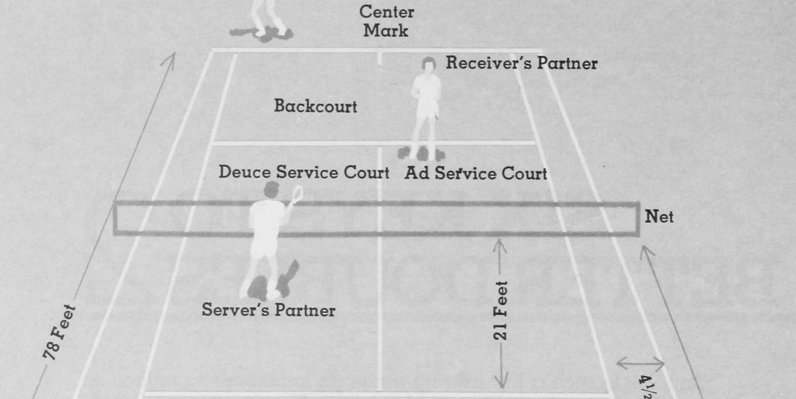
Nguyên Lý Một: Dùng Toàn Bộ SânAxiom One: Use the Whole Court
Một trong những sai lầm lớn nhất mà những người mới chơi đánh đôi mắc phải là cố đánh phần lớn các cú bóng của mình xuống giữa sân—để an toàn. Đối thủ của họ nhanh chóng nhận ra, nếu họ biết chút gì về lối đánh đôi, và những cú “an toàn” xuống giữa sân đó sớm bị biến thành những điểm thắng chắc chắn. Sự thật đáng buồn là cái gọi là “thuyết giữa sân,” vốn thường phát huy rất tốt trong đánh đơn, lại hoàn toàn không hiệu quả trong đánh đôi. Mặt khác, sân đôi rộng hơn sân đơn 4% feet ở mỗi hành lang—tức tổng cộng chín feet (xem Hình 2-1). Đó là một khoảng không gian rộng lớn—thêm một phần ba sân—và bạn phải có trách nhiệm dùng nó và tận dụng nó mỗi khi có cơ hội. Một trong những bài tập tôi thích dùng để dạy người mới chơi thấy sân
One of the biggest mistakes that beginning doubles players make is that of trying to hit most of their shots down the center of the court—for safety. Their opponents quickly catch on, if they know anything at all about doubles play, and those “safe” shots down the center are soon converted into sure winners. The sad fact is that the so-called ‘‘center-court theory,” which often works so well in singles, just doesn't work at all in doubles. On the other hand, a doubles court is wider than a singles court by 4% feet in each alley—or a total of nine feet (see Figure 2-1). That's a lot of space—an extra third of a court—and it's up to you to use it and take advantage of it whenever the opportunity presents itself. One of the drills I like to use in teaching a beginner just how big
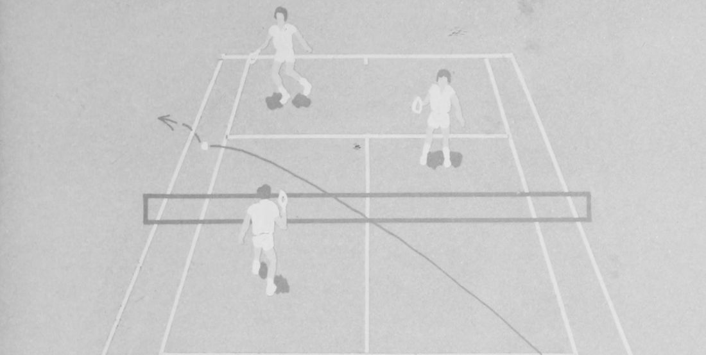
đôi lớn đến mức nào là cho anh ta đứng ở một vạch cuối sân và cố đánh bóng chéo sân vào hành lang đối diện ngay tại vạch giao bóng. Phần lớn người chơi ban đầu đánh ngắn—họ sợ đánh bóng ra ngoài biên. Nhưng họ sớm nhận ra phải đánh bóng khá mạnh mới đưa được nó đi xa đến thế, điều đó cũng tự nhiên thôi. Quãng đường bóng phải đi chỉ ngắn hơn một chút so với khoảng cách từ vạch cuối sân bên này sang vạch cuối sân bên kia. Vậy hãy nhắm vào các hành lang mỗi khi có thể, và vung hết sức. Tuy nhiên, hãy nhớ bạn không cố đánh một điểm thắng trực tiếp—bạn chỉ cố mở toang sân ra thôi. Nếu bạn làm được điều đó, và chỉ điều đó, rất thường xuyên bạn sẽ tạo ra tình huống mà cú đánh tiếp theo của bạn sẽ là một điểm thắng. Nếu một trong hai đối thủ của bạn bị kéo ra khỏi vị trí, thì đâu đó trên sân ắt phải có một chỗ trống để bạn đánh một cú vô-lê hoặc cú bóng qua người ghi điểm.
a doubles court is, is having him stand at one baseline and try to hit the ball crosscourt into the opposite alley right at the service line. Most players start out hitting short—they're atraid of hitting the ball out-of-bounds. But they soon find they have to hit the ball pretty hard to get it to go that far, which is only natural. The distance the ball has to travel is only a little less than the distance from baseline to baseline. So aim for the alleys whenever you can, and swing out. Remember, though, you're not trying to hit an outright winner— you re merely trying to open up the court. If you can do that, and only that, very often you will set up a situation where your next shot will be a winner. If one of your opponents has been pulled out of position, then somewhere on the court there has to be an open spot where you can hit a winning volley or passing shot.
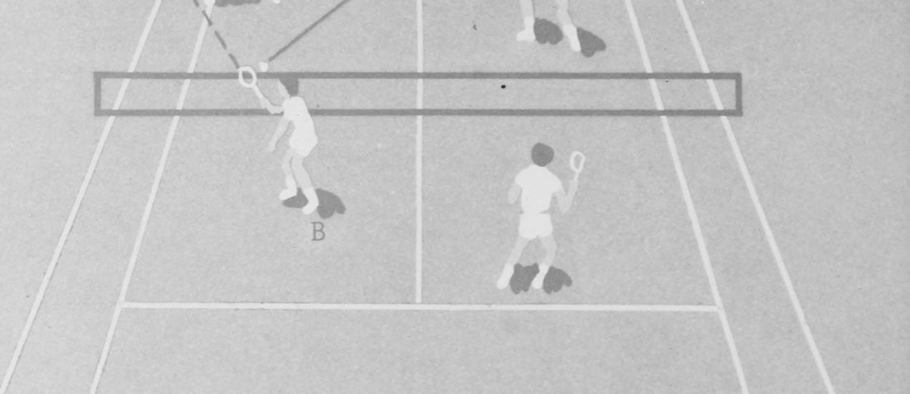
Một cú tấn công chéo sân vào hành lang đối diện ngay tại vạch giao bóng—như cú dùng trong bài tập đã nói ở trên—cũng tạo ra một cú sẽ bị kéo ra rộng và nhiều khả năng không có lựa chọn nào khác ngoài đáp trả bằng một cú nửa vô-lê yếu. Điều đó sẽ cho đồng đội của bạn cơ hội cắt ngang cú trả bóng, nếu anh ta cảnh giác. Anh ta khi đó sẽ có một khoảng trống rất lớn giữa người giao bóng và đồng đội của anh ta để đặt một cú vô-lê ghi điểm (xem Hình 2-3). Nếu người giao bóng chọn ở lại phía sau, một cú trả bóng chéo sân vào hành lang sẽ kéo anh ta ra còn rộng hơn nữa và lại tạo cơ hội cho đồng đội của bạn ghi điểm dễ dàng (xem Hình 2-4). Tất nhiên, đồng đội của người giao bóng có thể di chuyển sang bù vào giữa sân. Nhưng nếu anh ta làm vậy, bạn có thể tự đỡ cú trả bóng và có lẽ đánh một cú bóng qua người dọc theo vạch biên đang trống (xem Hình 2-5). Thật dễ—chỉ cần bạn dùng toàn bộ sân.
A crosscourt drive to the opposite alley at the service line—such as that used in the drill mentioned above—also makes a great will be pulled wide and, more than likely, have no choice but to respond with a weak half volley. That will give your partner a chance to intercept the return, if he’s alert. He will then have a huge hole between the server and his partner in which to place a winning volley (see Figure 2-3). If the server has chosen to stay back, a crosscourt return to the alley will pull him even wider and again set up your partner for an easy winner (see Figure 2-4). Of course, the server's partner may move over to cover the center. If he does, though, you can take the return yourself and probably hit a passing shot down the open sideline (see Pi igure 2-5). Tt s easy—if you'll just use the whole court.
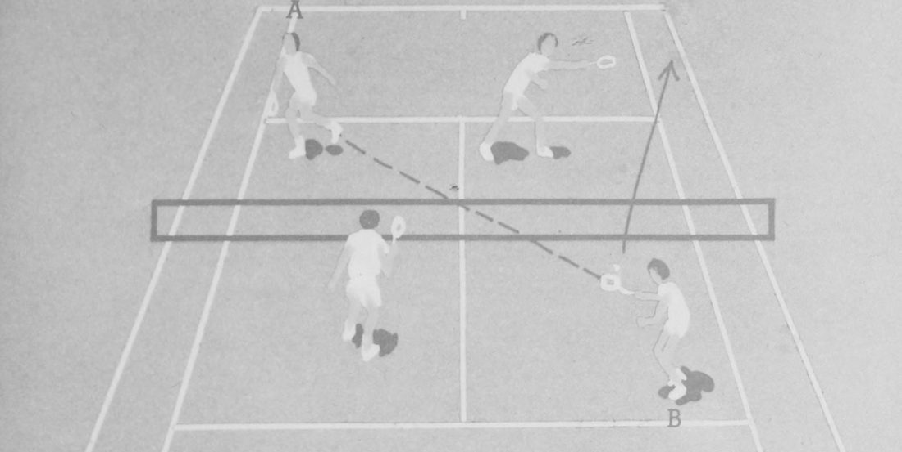
Nguyên Lý Hai: Quan Sát Trước Khi ĐánhAxiom Two: Look Before You Hit
Vì sân quần vợt là một chỗ rộng mênh mông (mỗi bên lưới có hơn 1.400 feet vuông mặt sân), nên đối thủ của bạn, dù to lớn và sải tay rộng đến đâu, sẽ luôn được bao quanh bởi những khoảng trống rộng mở. Vậy khi quyết định sẽ đánh cú tiếp theo vào đâu, bạn phải kiểm tra những khoảng trống đó và xem liệu mình có thể đánh bóng vào một trong số chúng—hay “vào chỗ họ không đứng”—không. Có thể bạn không thể đặt bóng chính xác vào đúng chỗ mình muốn mỗi lần, và ngay cả khi làm được, đối thủ của bạn cũng có thể chạy tới đỡ. Nhưng bằng cách đánh bóng vào một khoảng trống, dù đó là vào giữa hai đối thủ (xem Hình 2-4) hay dọc theo một trong các hành lang (xem Hình 2-5), bạn đang buộc đối thủ phải vất vả mới giành được bất cứ thứ gì. Ai cũng có thể đánh một cú bóng được dâng sẵn tận miệng, nhưng cần kỹ năng mới đuổi theo và trả lại được một cú bóng.
Since a tennis court is an awfully big place (it consists of more than 1,400 square feet of court surface on each side of the net), your opponents, however big and rangy, will always be surrounded by some wide-open spaces. So when you're deciding where to hit your next shot, you must check those open spaces and see if you can't hit a ball into one of them—or “where they ain't.” You may not be able to place the ball exactly where you want to place it every time and, even if you do, your opponents may be able to run it down. But by hitting the ball into an open space, whether it's between your opponents (see Figure 2-4) or down one of the alleys (see Figure 2-5), you're forcing your opponents to work for whatever they get. Anyone can hit a ball that’s handed to him on a plate, but it takes skill to chase down a ball and return it .
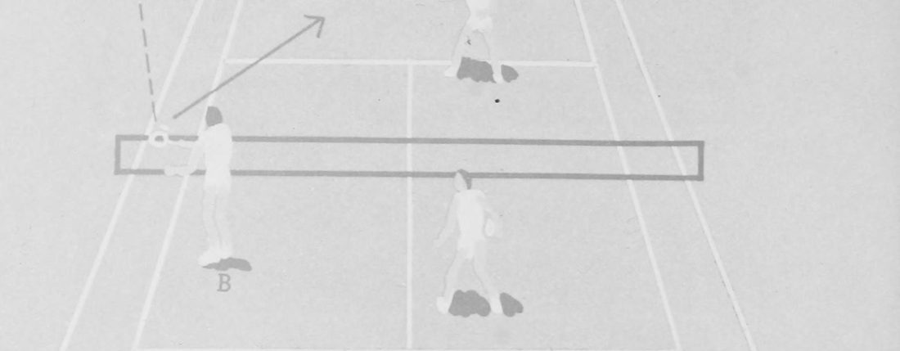
Như vậy, đánh vào những chỗ trống sẽ giúp bạn thắng được nhiều điểm, nhưng bạn cũng nên tính đến một vài ngoại lệ đáng lưu ý. Thứ nhất, nếu bạn đang ở trên lưới và một trong hai đối thủ đánh một cú bóng vẫn còn đang lên khi tới chỗ bạn, hãy tìm một khoảng trống để đánh cú vô-lê của mình. Nếu không có khoảng trống nào, hãy tiến vào quả bóng và đánh thật mạnh thẳng xuống dưới chân đối thủ gần nhất, nơi anh ta sẽ rất khó trả lại (xem Hình 2-6). Thứ hai, đối thủ của bạn có thể xảo quyệt đủ để giăng bẫy cho bạn. Họ có thể để lộ ra một khoảng trống có vẻ đẹp ở giữa sân, nhưng rồi khi bạn định đánh một cú bóng qua người giữa hai người họ (xem Hình 2-7), một người trong bọn họ sẽ lướt sang bù vào lỗ hổng đúng lúc bạn đánh bóng. Anh ta khi đó có thể dễ dàng cắt ngang cú đánh của bạn. Được rồi, đó là một chiêu hay, và có lẽ nó sẽ hiệu nghiệm một lần. Nhưng lần sau
Thus, hitting the open spots will win you a lot of points, but you should also take into account a couple of significant exceptions. First, if you're up at the net and one of your opponents hits a ball that's still on the rise when it gets to you, look for an open space to hit your volley. If there are none, move in on the ball and hit it as hard as you can straight down at your nearest opponent's feet, where it will be very difficult for him to return (see Figure 2-6). Second, your opponents may be crafty enough to set up a trap for you. They may give you what appears to be a nice gap down the center of the court, but then, when you go to hit a passing shot between them (see Figure 2-7), one of them will scoot over and cover the hole just as you hit the ball. He can then intercept your shot with ease. O.K., it's a nice trick, and maybe it'll work once. But the next
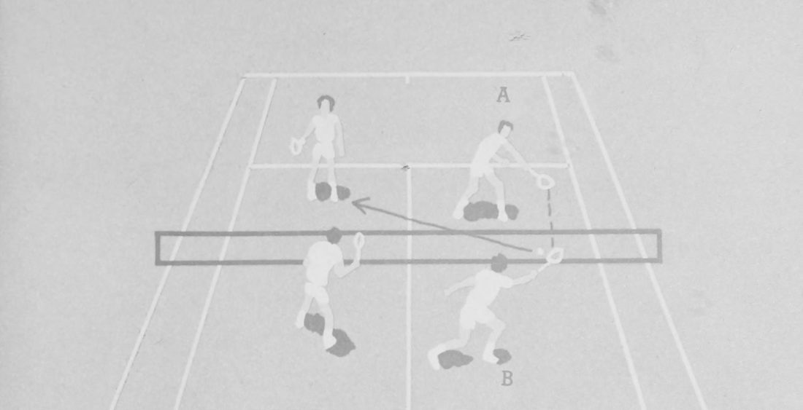
này, thay vì đánh một cú bóng qua người, hãy đánh một cú bóng bổng khéo léo bay qua đầu kẻ ranh ma ấy. Đó sẽ là dấu chấm hết cho chiêu đó (xem Hình 2-8).
time, instead of hitting a passing shot, hit a lob that sails deftly over the trickster’s head. That should be the end of that (see Figure 2-8).
Nguyên Lý Ba: Hoạch Định Nước Đi TrướcAxiom Three: Plan Your Moves in Advance
Trận đánh đôi trong quần vợt giống như một ván cờ. Bạn phải hoạch định trước điều mình định làm để nó thành công—để đưa đối thủ vào thế cho bạn kết liễu. Fred McNair, chiến lược gia chính của cặp McNair-Stewart, rất tin vào điều này và thực sự vạch ra một kế hoạch thi đấu mỗi khi anh và đồng đội thi đấu một trận lớn. Chẳng hạn, trước khi đấu với Raul Ramirez và Brian Gottfried, danh sách ghi chú của McNair có thể gồm vài mục như: “Đánh vào Gottfried ở sân sau; đánh vào Ramirez ở lưới.” Đó là vì Gottfried có cú vô-lê trừng phạt hơn, trong khi Ramirez có
The game of doubles in tennis resembles a game of chess. You have to plan what you're going to do ahead of time to make it work—to set up your opponents for the kill. Fred McNair, chief strategist for the McNair-Stewart team, is a great believer in this and actually draws up a game plan whenever he and his partner are competing in a big match. Before playing Raul Ramirez and Brian Gottfried, for example, McNair’s checklist might include a couple of notations such as: “Play Gottfried in back court; play Ramirez at net.” That's because Gottfried has a more punishing volley, whereas Ramirez has the
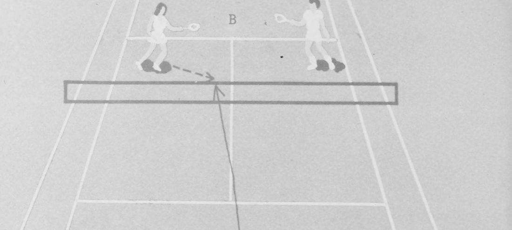
những cú đánh bóng nền tốt hơn. Kế hoạch của McNair cũng sẽ gồm một chiến lược cơ bản mà anh và Stewart hy vọng sẽ tuân theo, nhưng nó sẽ cho phép những hướng hành động thay thế trong trường hợp kế hoạch ban đầu của họ đổ bể. Việc hoạch định của bạn không cần chi tiết đến thế, nhưng bạn nên có một ý niệm khá rõ về điều mình muốn làm và cách thực hiện, dù bạn đấu với ai. Và để kế hoạch của bạn thành công, bạn sẽ cần sự kiên nhẫn—kiên nhẫn chờ đúng sơ hở để đánh một cú ghi điểm, chờ đúng quả bóng để theo lên lưới, chờ đúng thời điểm để gây áp lực buộc đối thủ mất game giao bóng để bạn có thể thắng ván. Vào thập niên 1930, cựu vô địch Đôi Quốc gia Hoa Kỳ John Hennessey và tôi đã dùng một lối chơi được hoạch định đơn giản, giúp chúng tôi thắng nhiều điểm. Chúng tôi thấy kế hoạch này rất hiệu quả trước hai tay vợt người Pháp ranh mãnh
better ground strokes. McNair’s plan would also include a basic strategy that he and Stewart would hope to follow, but it would allow for alternate courses of action in the event that their original plan went haywire. Your own planning need not be so detailed, but you should have a fairly good idea of what you would like to do and how to go about it, whoever you're playing. And to make your planning work, you'll need patience—the patience to wait for the right opening to make a winning shot, for the right ball to follow up to the net, for the right time to pressure your opponents into a service break so you can win the set. In the 1930's former U.S. National Doubles champion John Hennessey and I used a simple, planned routine that won us many points. We found the plan very effective against two canny
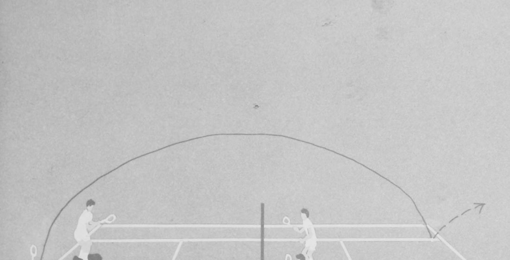
là Jacques Brugnon và Henri Cochet. Hennessey sẽ giao bóng cho Brugnon trong khi tôi đứng, vẻ như không mảy may bận tâm, rất sát lưới—sát đến mức Brugnon bị cám dỗ đỡ giao bóng bằng một cú bóng bổng nhanh qua đầu tôi (xem Hình 2-9). Nhưng đúng lúc Brugnon đã dứt khoát vào cú đánh, tôi sẽ lùi lại nhanh để có thể đón cú bóng bổng bằng một cú bóng trên đầu ghi điểm. Kế hoạch này hiệu nghiệm chín lần trong mười lần, và như vậy cho chúng tôi chín điểm, và thường là cả trận đấu. Hãy luôn có một kế hoạch hành động và cố làm cho nó thành công—đừng đổi ý giữa chừng. Tôi thường thấy những người chơi thiếu kinh nghiệm cố cướp bóng—chạy sang cắt ngang một cú đỡ giao bóng—nhưng lại dừng lại nửa đường (xem Hình 2-10), rốt cuộc để hai người chơi cùng đứng trên một nửa sân. Nếu bạn định cướp bóng, hãy làm cho trót. Chạy hẳn sang nửa sân đối diện, ngay cả khi bạn đánh trượt—
Frenchmen, Jacques Brugnon and Henri Cochet. Hennessey would serve to Brugnon while I would stand, apparently unconcerned, very close to the net—so close that Brugnon would be tempted to return serve as a quick lob over my head (see Figure 2-9). But, at the point where Brugnon had committed himself to hitting the ball, 1 would retreat rapidly so that I could take the lob with a winning overhead. This plan would work nine times out of ten and so give us nine points, and often the match. Always have a plan of action and try to make it work—don't change your mind in mid-course. I often see inexperienced players attempt to poach—running over to cut off a return of serve—but stop halfway (see Figure 2-10), thus ending up with two players on the same half of the court. If you are going to poach, go the whole hog. Run right over into the opposite court, even if you miss -
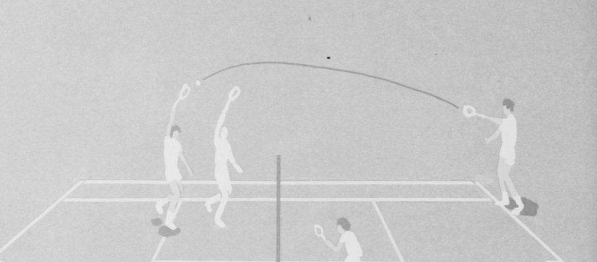
Hoạch định tốt cũng có nghĩa là giao tiếp tốt. Ví dụ, nếu bạn định giao bóng xa, để tận dụng cú trái tay yếu của một đối thủ, hãy cho đồng đội của bạn biết để anh ta sẵn sàng di chuyển sang phòng ngừa một cú trả bóng dọc biên. Chỉ cần một lời nói nhanh giữa các điểm là đủ. Hoạch định tốt còn nên bao gồm việc chọn một đội trưởng trước mỗi trận. Khi thi đấu, đội trưởng chỉ nên nói hai từ—‘Của bạn!’ và “Của tôi!” và những từ đó là luật.
Good planning also means good communication. If you intend to serve wide, for instance, to take advantage of an opponent's weak backhand, let your partner know so he can be ready to move over to cover against a possible return down the line. A quick word between points is all it takes. Good planning should further include the selection of a captain before each match. In play, the captain should say only two words— ‘Yours!’ and “Mine!” and those words are law.
Nguyên Lý Bốn: Nhìn Sân Của Bạn Qua Con Mắt Đối ThủAxiom Four: Look at Your Court Through Your Opponents’ Eyes
Điều này thật khó. Bạn không thể, về mặt thể chất, nhìn sân của mình trong suốt trận đấu theo đúng cách mà đối thủ nhìn nó. Tuy vậy, bạn và đồng đội của bạn nên liên tục tự hỏi: “Bóng phải đi tới đâu mới đánh bại
This is difficult. It's a physical impossibility for you to see your own court during the course of play in exactly the same way your opponents see it. Nevertheless, you and your partner should constantly ask yourselves: “Where would the ball have to go to beat
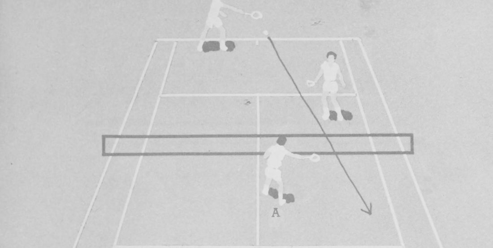
chúng ta?” Đó chính là nơi đối thủ của bạn sẽ đưa bóng tới, nếu họ thông minh—và đó là chỗ bạn sẽ bù vào, nếu bạn thông minh. Và ở đây cũng vậy, sự phối hợp đồng đội là thiết yếu. Trong đánh đôi, bạn và đồng đội của bạn mỗi người chịu trách nhiệm về một nửa sân. Tuy nhiên, “phần nửa” của bạn được xác định không phải bởi vạch giao bóng giữa sân mà bởi nhịp lên xuống của trận đấu. Nếu bạn bị kéo ra rộng, đồng đội của bạn nên di chuyển vào gần vạch giữa hơn (xem Hình 2-11) để bạn không để lại một lỗ hổng toang hoác cho đối thủ bắn xuyên qua. Khi bạn ở lưới, bạn có thể hình dung rằng mình bị buộc vào đồng đội bằng một sợi dây dài khoảng nửa chiều rộng sân. Nếu đồng đội của bạn trôi sang trái để theo bóng, bạn cũng vậy (xem Hình 2-12). Bạn phải di chuyển cùng nhau theo chiều ngang để bù kín sân.
us?’ That is where your opponents are going to put the ball, if they re smart—and that's the spot you'll cover, if you're smart. And here again, teamwork is essential. In doubles play, you and your partner are each responsible for half the court. However, your “halves” are determined not by the center service line but by the ebb and flow of the action. If you are pulled wide, then your partner should move over closer to the center line (see Figure 2-11) so you don't leave a gaping hole for your opponents to shoot through. When you're at the net, you might go so far as to imagine that you're tied to your partner by a rope about half a court-width in length. If your partner drifts to the left to follow the ball, so do you (see Figure 2-12). You have to move together laterally to cover the court.
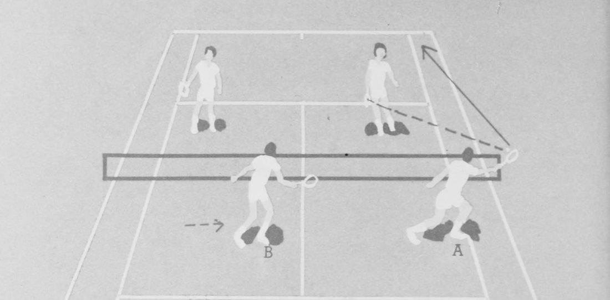
Nhìn sân qua con mắt đối thủ cũng có thể giúp bạn đôi khi bày ra một cái bẫy—như dựng lên một khoảng trống đúng ý để đối thủ của bạn đánh vào đó (xem Hình 2-7). Bạn giăng một tấm lưới và con ruồi sẽ bay thẳng vào. Tất nhiên, bạn sẽ di chuyển vào giây cuối để cắt ngang cú đánh của đối thủ. Và nhờ đặt mình vào vị trí đối thủ, bạn đã tiết kiệm cho mình chút công sức và, mong là, thắng được điểm đó. Kỹ thuật nhìn sự việc từ góc nhìn của đối thủ này có thể dùng ở gần như mọi giai đoạn của trận đấu. Giả sử bạn đang đỡ giao bóng và bạn có cú trái tay tương đối yếu. Đối thủ của bạn có nhiều khả năng đặt cú giao bóng ở đâu nhất? Tất nhiên là vào cú trái tay của bạn. Vậy bạn có thể chuẩn bị sớm hơn một chút. Hoặc, nếu đó là cú giao bóng thứ hai của anh ta, bạn có thể dịch sang trái một chút (xem Hình 2-13) để có thể chạy vòng qua cú trái tay và đánh một cú thuận tay hiệu quả hơn.
Viewing the court through your opponents’ eyes can also help you spring an occasional trap—like setting up an open space precisely so your opponents will hit into it (see Figure 2-7). You weave a web and the fly will pop straight into it. Of course, you will move at the last second to cut off your opponent's shot. And by putting yourself in your opponents’ position, you've saved yourself some work and, let's hope, won the point. This technique of looking at things from your opponents’ viewpoint can be used at almost any stage of the game. Suppose you re returning serve and you have a relatively weak backhand. Where is your opponent most likely to place his serve? Why, certainly, to your backhand. So you can prepare a little earlier. Or, if it's his second serve, you can move left a little (see Figure 2-13) so you can run around your backhand and hit a more effective forehand.
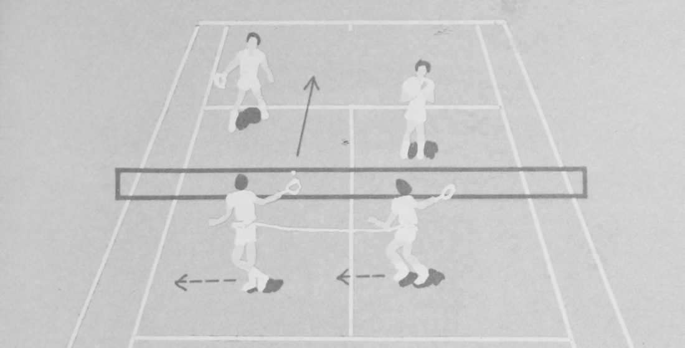
Một vị tướng giỏi luôn cố đoán nước đi tiếp theo của đối phương. Bạn cũng có thể làm vậy nếu bạn nhìn sân qua con mắt đối thủ.
A good general always tries to figure out the enemy's next move. You can do the same if you look at the court through your opponents’ eyes.
Nguyên Lý Năm: Đừng Cố Chấp Theo Lối CũAxiom Five: Don't Get Set in Your Ways
Một trong những điều tồi tệ nhất bạn có thể làm trong đánh đôi là tuân theo những khuôn mẫu lối chơi dễ đoán. Đừng bao giờ theo cú giao bóng lên lưới—luôn đánh vào cú trái tay của đối thủ—đại loại vậy. Một khi bạn đã tự đóng khung mình vào một khuôn mẫu, đối thủ của bạn sẽ biết chính xác cách đối phó với bạn và đó là dấu chấm hết cho trận đấu. Một ví dụ điển hình: một học trò của tôi luôn đỡ giao bóng ở ô thuận tay thẳng vào người chơi ở lưới bên kia. Người chơi ở lưới, nhanh chóng học được cách chờ đợi cú trả bóng này, vào thế sẵn sàng và luôn đánh một cú vô-lê dễ dàng ngay vào giữa người đỡ bóng và
One of the worst things you can do in doubles is to follow predictable patterns of play. Never follow your serve to the net—always hit to an opponent's backhand—that sort of thing. Once you've stereotyped yourself, your opponents will know exactly how to handle you and that's the end of the match. A case in point: One of my students consistently returns serve to the deuce court directly at the opposing net player. The net player, who quickly learns to expect this return, gets set for the shot and invariably pops an easy volley right between the receiver and her
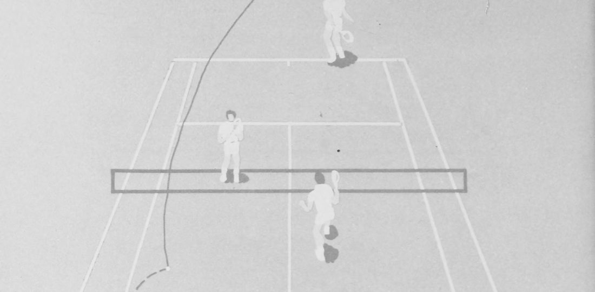
đồng đội của cô ta (xem Hình 2-14). Giờ nếu người đỡ bóng đó biết đa dạng hóa các cú trả bóng—vài cú chéo sân ngắn về phía người giao bóng, vài cú dọc biên vượt qua người chơi ở lưới, và xen vào vài cú bóng bổng khôn ngoan—hãy thử tưởng tượng cú đỡ giao bóng của cô ta sẽ hiệu quả hơn biết bao. Một cách diễn đạt khác của nguyên lý này là: “Hãy luôn thay đổi một lối chơi đang thua.” Nếu bạn đang thua đậm, tại sao không đổi lối chơi của mình? Suy cho cùng, bạn còn gì để mất nữa? Và đôi khi một sự thay đổi chiến thuật, dù không thực hiện tốt, cũng sẽ làm đội kia mất phong độ và giúp bạn giành lại thế thượng phong. John Newcombe và Tony Roche, một trong những cặp đánh đôi vĩ đại nhất mọi thời đại của quần vợt, là những bậc thầy về nghệ thuật biến hóa lối chơi. Newcombe về cơ bản là một tay vợt sức mạnh, nhưng khi mọi thứ bắt đầu rạn vỡ, nhất là trước một người giao bóng hung hãn, anh ta chuyển
partner (see Figure 2-14). Now if that receiver would mix up her returns—some crosscourt short to the server, some down the line past the net player, and toss in a few judicious lobs—just think how much more effective her return of serve would be. Another way of expressing this axiom is by saying, “Always change a losing game.” If you're trailing badly, why not change your style of play? After all, what more do you have to lose? And sometimes a change of tactics, even if not executed well, will put the other team off their game and help you to regain the upper hand. John Newcombe and Tony Roche, one of the all-time great doubles teams in tennis, are masters at the art of varying their play. Newcombe is basically a power player, but when things start to fall apart, especially against an aggressive server, he switches
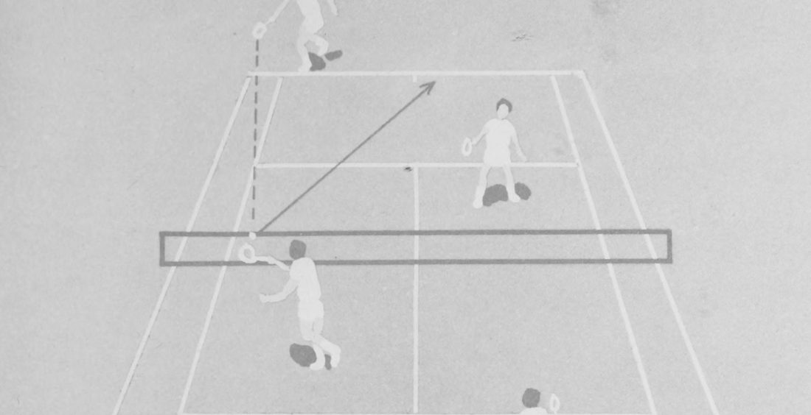
- lập tức sang những cú trả bóng cắt nhẹ ngắn hoặc những cú bóng bổng nhẹ nhàng vừa qua đầu người chơi ở lưới. Về phần mình, Roche có thể đổi sang cú giao bóng xoáy bổng cho cú giao bóng đầu tiên, hoặc khi anh ta là người đỡ bóng, sang những cú trả bóng nông hơn. Mục đích là khiến đội kia luôn phải đoán mò—và lén áp sát họ trước khi họ biết điều gì đã ập tới.
- instantly to short chip-shot returns or delicate lobs just over the net player's head. Roche, for his part, might switch to a kick serve for his first service or, when he’s the receiver, to shallower returns. The object is to keep the other team guessing—and sneak up on them before they know what's hit them.
Nguyên Lý Sáu: Tận Dụng Tối Đa Người Đồng Đội Của BạnAxiom Six: Make the Best Use of Your Partner
Một trong những quyết định quan trọng nhất mà một đội đánh đôi phải đưa ra là: “Ai chơi ở đâu?” Vì sao điều này lại then chốt đến thế? Bởi vì trong đánh đôi giỏi, bạn được kỳ vọng sẽ thắng game giao bóng của mình; nhưng nếu bạn mong thắng trận, bạn phải bẻ được game giao bóng của đối thủ. Vậy ngay từ đầu bạn phải quyết định ai trong hai người—bạn hay đồng đội của bạn—có cú đỡ giao bóng tốt hơn ở mỗi ô. Trong chiến thuật đánh đôi thông thường, người ta thường cho rằng đó là
One of the most important decisions a doubles team has to make is, “Who plays where?” Why is this so crucial? Because in good doubles play you're expected to win your own serve; but if you expect to win the match, you have to break your opponents’ serve. So at the outset you have to decide which of you—you or your partner—has the better return of serve in each court. In conventional doubles strategy, that’s usually thought to be
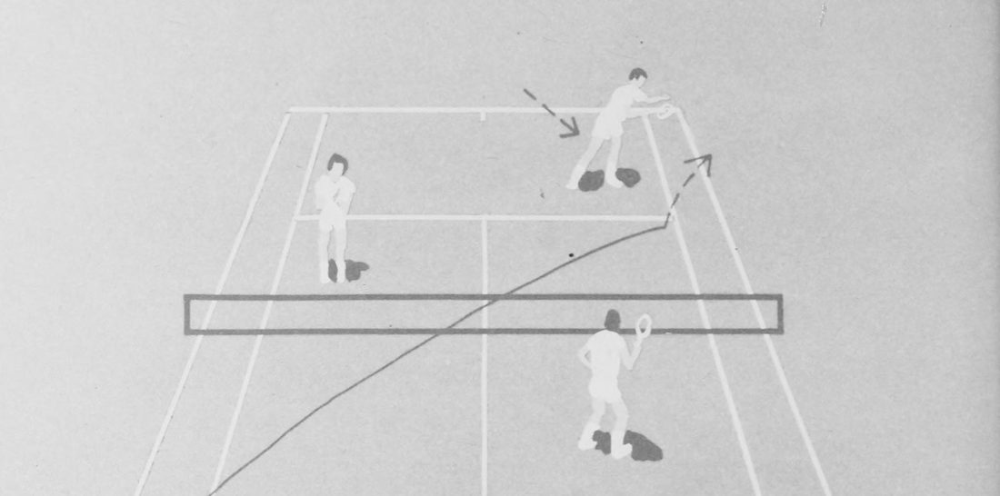
tay vợt sức mạnh, người được cho là sẽ kết liễu phần lớn các điểm. Anh ta đương nhiên được giao ô lợi thế (ad) hay ô trái tay. Điều đó để lại ô hòa (deuce) hay ô thuận tay cho tay vợt chiến thuật, người được cho là sẽ tạo dựng phần lớn các điểm. Tuy nhiên, theo kinh nghiệm của tôi, những tay vợt sức mạnh cũng dễ thua một điểm y như dễ thắng một điểm, nên tôi không thể đồng ý với lối suy nghĩ thông thường đó. Thực tế, tôi luôn tự mình chơi ở ô lợi thế, dù tôi luôn được coi là một tay vợt chiến thuật hay tay vợt cảm giác chứ không phải một tay vợt sức mạnh. Tôi thích chơi ở ô lợi thế vì một lý do đơn giản là tôi luôn có một cú đỡ giao bóng chéo sân góc rộng tốt bằng cả thuận tay lẫn trái tay (xem Hình 2-15). Tôi có thể đưa những cú trả bóng của mình vào hành lang ở phía đối diện của sân, nơi chúng dễ gây khó khăn cho người giao bóng nhất. Và nếu có một thành viên nào trong
the power player, the person who's supposed to close out most points. He is automatically assigned the ad or backhand court. That leaves the deuce or forehand court to the tactical player, the person who's supposed to set up most points. It has been my experience, however, that power players are just as apt to lose a point as to win it, soI can't agree with the conventional wisdom. In fact, I've always played the ad court myself, even though I've always been considered a tactician or touch player and not a powerhouse. I prefer to play the ad court for the simple reason that I've always had a good angled crosscourt return of serve off either forehand or backhand (see Figure 2-15). | could put my returns into the alley on the opposite side of the court where they were most likely to give a server trouble. And if there's one member of
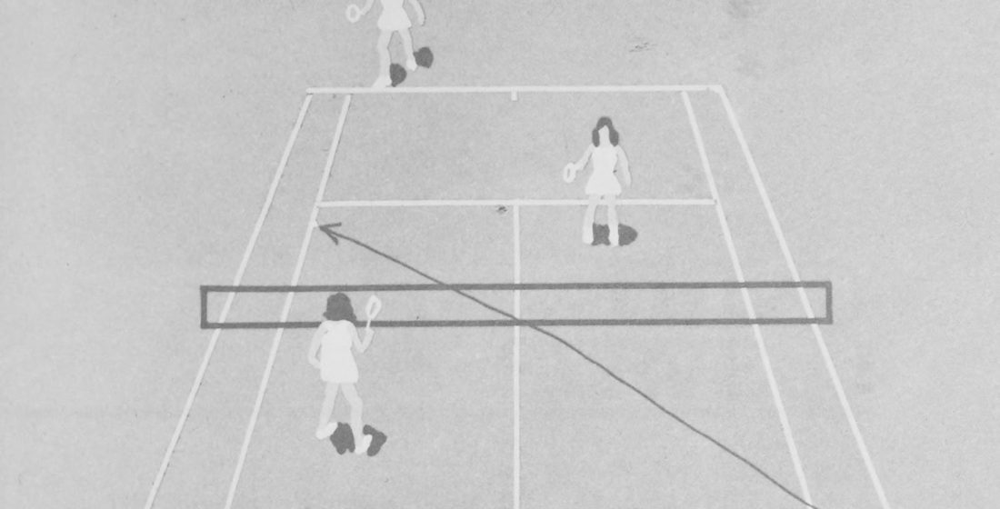
- đội của bạn cũng có thể làm được điều đó—hoặc có nhiều khả năng làm được nhất—thì anh ta thuộc về ô lợi thế, bất kể lối chơi của anh ta là gì. Tôi cũng không tán thành lối suy nghĩ thông thường rằng nên đặt một người thuận tay trái vào ô lợi thế mỗi khi có thể. Tôi biết mình đang đi ngược dòng ở đây. Nhiều người được gọi là “chuyên gia” sẽ bảo bạn rằng một người thuận tay trái ở ô lợi thế sẽ có thể đỡ phần lớn các cú giao bóng bằng bên thuận tay của anh ta, và cả anh ta lẫn đồng đội sẽ đều có cú thuận tay dọc hành lang, cho họ độ vươn xa hơn. Nhưng khi tôi chơi với John Doeg, một tay thuận trái vĩ đại vào thập niên 1930, anh ta luôn nhận ô bên phải và thấy vui vẻ với điều đó. Vì sao? Vì anh ta có một cú đỡ giao bóng chéo sân trái tay tuyệt vời, trong khi cú thuận tay của anh ta là một thảm họa (xem Hình 2-16). Tôi xin nói thêm rằng chúng tôi đã thắng Giải Vô địch Đôi Quốc gia Hoa Kỳ hai năm liên tiếp với lối chơi đó, nên hẳn chúng tôi đã làm đúng điều gì đó. SLOKEYS: Sl
- your team who can do that, too—or is most likely to—he belongs in the ad court whatever else his style of play. Nor do I hold with the conventional wisdom of putting a lefty in the ad court whenever possible. I know I'm bucking the tide here. Many so-called “experts” will tell you that a lefty in the ad court will be able to return most serves on his forehand side, and he and his partner will both have forehands down the alley, giving them greater reach. But when | played with John Doeg, a great lefty back in the 1930's, he always took the right-hand court and was glad to. Why? Because he had a fine backhand crosscourt return of serve, while his forehand was a disaster (see Figure 2— 16). I might add that we won the U.S. National Doubles Championships two years in a row playing that way, so we must have been doing something right. SLOKEYS: Sl
3. CÚ GIAO BÓNG
Giao Bóng Là Một Cú Đánh Quyết ĐịnhThe Serve is a Winning Stroke
Giao bóng là cú đánh quan trọng nhất trong đánh đôi. Bạn giao bóng tốt hay dở sẽ quyết định bạn thắng hay thua những game giao bóng của mình. Trong đánh đôi, nếu bạn liên tục thua game giao bóng, bạn sẽ thua trận. Vì vậy, bạn phải thắng được game giao bóng của chính mình — và đồng đội của bạn cũng vậy — điều đó có nghĩa là bạn cần xây dựng một cú giao bóng ổn định. Cũng hãy nhớ rằng giao bóng không chỉ là cách bắt đầu một điểm — trong đánh đôi bạn có thể thắng điểm bằng cú giao bóng của mình giống như trong đánh đơn. Nên tôi luôn coi cú giao bóng là một vũ khí để bắt đầu hủy diệt đối phương. Khi giao bóng, hãy giao với ý đồ buộc đối phương đỡ bóng yếu, đặc biệt là ở giao bóng một. Điều thứ ba cần ghi nhớ là giao bóng là cú đánh duy nhất mà bạn kiểm soát gần như mọi yếu tố. Không ai đánh bóng về phía bạn hay buộc bạn phải chạy để đỡ. Bạn quyết định khi nào, ở đâu và đánh bóng thế nào. Điều đó đáng để suy nghĩ trước khi giao bóng, và tôi không chỉ nói trước khi trận đấu bắt đầu, mà là nghĩ trước mỗi lần giao bóng. Hãy xác định bạn sẽ giao kiểu gì, đặt bóng ở đâu và sẽ làm gì sau khi đánh bóng (giả sử đó là một cú giao bóng thành công). Tôi sẽ nói thêm về vấn đề này ở phần sau.
tant shot in doubles. How well—or how badly—you serve will determine whether you win or lose your service games. In doubles, if you consistently lose your service games, you will lose your matches. Therefore, you must win your own service—as, ‘indeed, must your partner—and that means you should develop a reliable one. Remember, too, that the serve is not merely a way of starting the point—you can win points on your serve in doubles just as you can in singles. So 1 always regard the serve as a weapon to begin the destruction of your opponent. When you serve, do so with the intent of forcing a weak return, especially on your first serve. A third tip to keep in mind is that the serve is the one stroke with which you control almost all the variables. No one is hitting the ball to you or forcing you to run to make a return. You decide when, where and how you are going to hit the ball. That bears thinking about before you serve and I don't mean just before the match _starts, | mean think before each and every serve. Figure out - what kind of serve you are going to hit, where you are going to place it and what you will do after you've hit the ball (assuming , that it's a successful serve). I'll say more on this subject later.
Hai Mục TiêuThe Two Goals
Có hai mục tiêu chính cần hướng tới với cú giao bóng đôi của bạn. Đó là: Đưa được giao bóng một vào sân và có một cú giao bóng hai ổn định. Nghe có vẻ dễ? Phải mất hàng nghìn lần giao bóng tập luyện mới có thể tiệm cận những mục tiêu đó, và bạn cũng sẽ phải bỏ ra không ít công sức. Nhưng kết quả cuối cùng hoàn toàn xứng đáng với nỗ lực bỏ ra. Trong các trận đấu giải của tôi, tôi hiếm khi giao bóng hai lần hỏng liên tiếp vì tôi có thể tin vào cú giao bóng hai của mình. Và tôi hiếm khi thua game giao bóng của mình, không phải vì tôi giao bóng mạnh, mà vì tôi thường đưa được 80 phần trăm số giao bóng một vào sân. Đó cũng nên là mục tiêu của bạn.
There are two principal goals to aim for with your doubles serve. They are: Get your first serve in and get yourself a reliable second serve. Sound easy? It takes thousands of practice serves to be able to come close to those goals and it's going to take some hard work on your part, too. But the end results are well worth the effort. In my tournament matches I rarely double faulted because | could depend on my second serve. And I rarely lost my own service games, not because I had a big serve, but because I could usually get 80 percent of my first serves in. Those should be your goals, too.
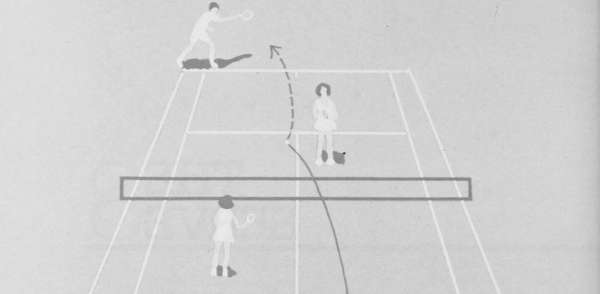
Hãy Đưa Giao Bóng Một Vào SânGet Your First Serve In
Tôi biết cảm giác thật đã khi tung một cú giao bóng mạnh như sấm bắn vụt qua một đối thủ bất lực. Bạn thích điều đó và khán giả cũng sẽ mê nó, nhưng tôi chỉ có hai chữ để nói về những cú giao bóng mạnh như sấm trong đánh đôi — tỷ lệ vào sân thấp. Nếu muốn thắng game giao bóng, bạn cần một cú giao bóng có tỷ lệ vào sân cao. Tôi khuyên nên giao với tốc độ khoảng ba phần tư tốc độ giao bóng nhanh nhất của bạn, đánh kèm đủ xoáy để kéo bóng xuống sâu trong ô giao bóng. Đó là cú giao bóng có tỷ lệ vào sân cao mà bạn có thể tin cậy khi thế trận trở nên khó khăn. Cú giao bóng xoáy tốc độ ba phần tư này sẽ mang lại cho bạn nhiều thứ. Thứ nhất, bóng sẽ đi sâu — tốc độ sẽ đảm bảo điều đó.
I know how satisfying it is to blast a big, booming serve right by a helpless opponent. You like it and the gallery will love it, but Ihave only two words to say on the subject of big boomers in doubles— low percentage. If you are going to win your serve, you'll need a high percentage serve. I recommend a speed about threequarters of that of your fastest serve, hit with sufficient spin to bring the ball down deep inside the service box. That's a high percentage serve that you can rely on when the going gets tough. This three-quarter-speed spin serve will do a number of things for you. First, the serve will go deep—the speed will see to that.
Hầu hết người mới chơi giao bóng bằng tay vợt cầm thuận tay (hình trên), trong đó lòng bàn tay nằm sau cán vợt. Muốn giao bóng có xoáy, bạn nên dùng cách cầm trái tay (hình dưới), trong đó lòng bàn tay gần phần đầu cán vợt hơn.
Most beginning players hit their serves with a forehand grip (above) in which the palm of the hand is behind the racquet handle. To hit a serve with spin, you should use a backhand grip (below) in which the palm of your hand is closer to the top of the handle.
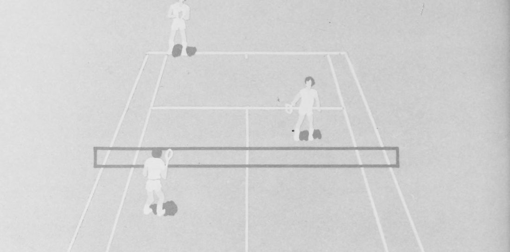
Thứ hai, bóng sẽ rơi xuống trong ô giao bóng một cách đáng tin cậy — xoáy sẽ giúp điều đó. Thứ ba, cú giao bóng sẽ cho bạn đủ thời gian vào lưới theo bóng (xem Hình 3-1) — một cú giao bóng nhanh hơn có thể bị đỡ trả nhanh đến mức bạn không bao giờ có đủ thời gian vào vị trí vô-lê. Nếu định giao bóng có xoáy, hãy kiểm tra cách cầm vợt trước. Cuối cùng bạn phải học cách giao bóng với cách cầm trái tay (xem các ảnh). Đó là cách cầm tốt nhất để tạo nhiều xoáy cho cú giao bóng. Nếu bạn đánh bóng phẳng với ít hoặc không có xoáy, rất có thể bạn đang giao bóng bằng cách cầm thuận tay. Bạn sẽ thấy việc chuyển sang cách cầm trái tay khá khó, nên tôi khuyên bạn hãy thay đổi dần dần. Thay
Second, the serve will reliably come down inside the service box— the spin will help that. Third, the serve will give you enough time to rush the net behind the ball (see Figure 3-1)—a faster serve could be returned so quickly that you'd never have enough time to get into position for a volley. If you are going to hit a serve with spin, check your grip first. Eventually, you must learn to serve with a backhand grip (see photos). That is the best grip to put lots of spin on your serve. If you are hitting the ball flat with little or no spin, chances are you are serving with a forehand grip. You'll find the change to a backhand grip difficult so I suggest you make the alteration gradually. In-
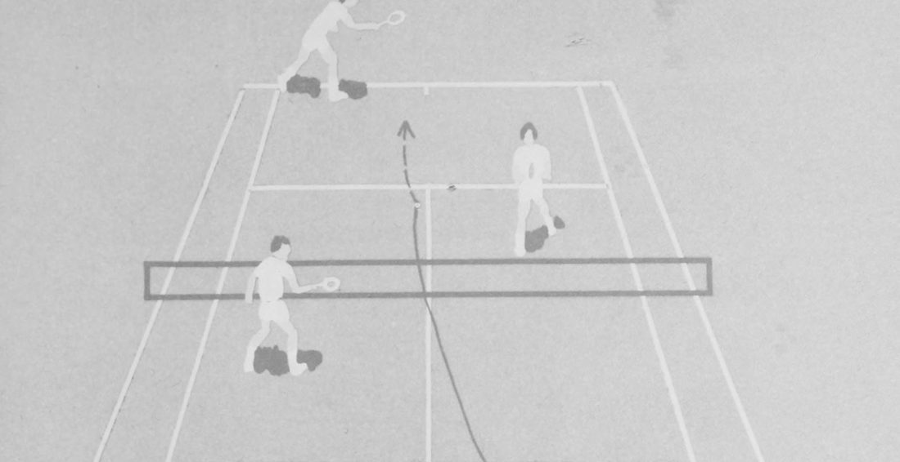
vì lấy hết một phần tư vòng xoay giữa cách cầm thuận tay và trái tay, hãy thử bắt đầu bằng một cách cầm ở khoảng giữa. Cách đó sẽ thêm xoáy cho cú giao bóng của bạn mà ban đầu vẫn không quá khó chịu.
- stead of taking the full quarter turn between the forehand and backhand grips, try a grip halfway in between for a start. That will add spin to your serve and yet not be too uncomfortable initially.
Rồi khi sự tự tin tăng lên, hãy xoay cách cầm của bạn hẳn sang vị trí trái tay thật sự. Cách duy nhất để thực hiện những điều chỉnh này trong cú giao bóng là luyện tập. Hãy lấy một xô bóng và giao bóng khoảng 20 phút, vài lần một tuần — thường xuyên hơn nếu bạn có thời gian và sân. Hãy thử nghiệm cú giao bóng để xem bạn có thể làm gì với xoáy ngang hoặc xoáy lên. Việc thay đổi cú giao bóng ban đầu sẽ khó — khó đến mức có lẽ bạn nên tìm lời khuyên từ một
Then, as your confidence develops, move your grip all the way round to a true backhand position. The only way to make these modifications in your serve is through practice. Get a bucket of balls and hit serves for 20 minutes or so a couple of times a week—more often if you have the time and the court. Experiment with the serve to see what you can do with slice or topspin. Making changes to your serve will be hard at first—tough enough that you probably ought to seek advice from a
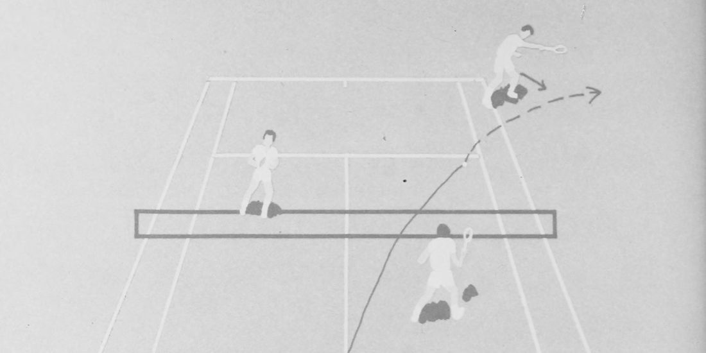
giáo viên dạy bóng giỏi để bạn không hình thành thói quen xấu trong các buổi tập.
good teaching professional so you don't develop any bad habits during your practice sessions.
Hãy Tạo Cho Mình Một Cú Giao Bóng Hai Ổn ĐịnhGet Yourself a Reliable Second Serve
Một cú giao bóng hai ổn định là cú mà bạn có thể đưa vào sân ít nhất 99 phần trăm số lần và đối thủ không thể tiến vào đánh một cú đỡ bóng chói lòa từ đó. Cú giao bóng hai của bạn chỉ nên khác cú giao bóng một ở một điểm rất quan trọng — nhiều xoáy. Một cú giao bóng hai tốt sẽ hoặc có nhiều xoáy lên, hoặc là một cú giao bóng xoáy ngang tốc độ ba phần tư, vừa đảm bảo bóng rơi vào ô giao bóng, vừa nảy theo cách khiến đối thủ gặp khó
A reliable second serve is one you can get in at least 99 percent of the time and one your opponent cannot move in on and hit a blistering return from. Your second serve should differ from your first in only one very significant respect—plenty of spin. A good second serve will either have plenty of topspin or be a three-quarter-speed slice serve to both guarantee that the ball drops into the service box and to bounce in such a way that your opponent will have a hard
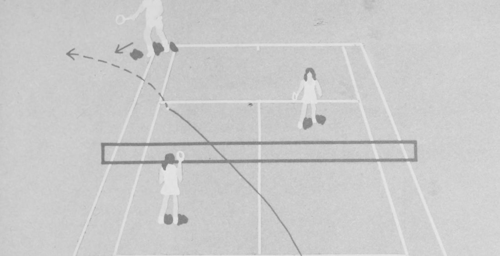
khăn khi đỡ bóng hiệu quả. Với xoáy lên, bạn nên đánh bóng với đầu vợt chuyển động hướng lên khi tiếp xúc bóng. Điều đó đòi hỏi một động tác có nhiều động tác cổ tay và một động tác theo bóng hoàn chỉnh. Dù bạn chỉ giao ở tốc độ ba phần tư hoặc chậm hơn, bạn vẫn phải vung vợt mạnh để tạo đủ xoáy cho bóng. Bạn vung càng mạnh — tất nhiên là với động tác đúng — thì càng tạo được nhiều xoáy cho bóng. Và bạn phải vung xuyên qua bóng để vợt đi theo một đường vung lớn và kết thúc bằng việc chỉ về phía hàng rào sau lưng bạn. Hầu hết người chơi trình độ trung cấp không thể tạo đủ xoáy cho
time making an effective return. For topspin, you should hit the ball with a racquet head that is moving up as contact is made with the ball. That calls for an action with lots of wrist snap and a full follow-through. Although you will be hitting only a three-quarter-speed or slower serve, you must swing hard at the ball to get enough spin on it. The harder you swing—with the proper action, naturally—the more spin you'll be able to put on the ball. And you must swing right through the ball so that your racquet comes around in a big swing and ends up pointing at the fence behind you. Most intermediate players who cannot put enough spin on their
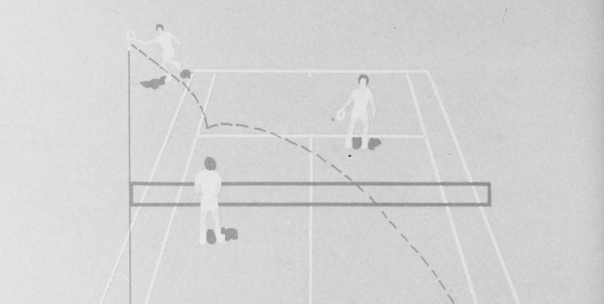
những cú giao bóng hai của họ là do không theo bóng đủ. Nếu một cầu thủ bóng chày cố ném một quả cong ngang tầm vai nhưng dừng lại ở đỉnh của động tác, bóng sẽ không có xoáy nào. Xoáy của cầu thủ ném bóng đến từ động tác cổ tay và động tác theo bóng. Cú giao bóng quần vợt cũng vậy. Động tác cổ tay và động tác theo bóng sẽ tạo xoáy cho bạn bằng cách khiến bóng trượt ngang mặt vợt. Sự đa dạng trong cú giao bóng hai cũng sẽ giúp ích. Hãy xen kẽ những cú giao bóng xoáy lên với một cú giao bóng xoáy ngang tốc độ trung bình tốt, giao ra biên vào chỗ yếu của đối thủ. Một cú giao bóng xoáy ngang bật ra biên thường sẽ kéo đối thủ ra khỏi sân để bạn hoặc đồng đội có thể đánh vào khoảng trống bạn vừa tạo ra. Dù cho mục tiêu của bạn ở
second serves do not follow through sufficiently. If a baseball pitcher tried to throw an overhand curve but stopped at the top of his action, the ball would not carry any spin. The pitcher's spin comes from his wrist action and follow-through. So it is with the tennis serve. Wrist snap and follow-through will give you spin by making the ball slide across the racquet's face. Variety on your second serve will also help. Mix up your topspin serves with a good medium-speed slice serve, wide to your opponent's weakness. A slice serve that breaks wide will often pull your opponent out of court so that you or your partner can hit for the open space you've just created. Even though your goal on the
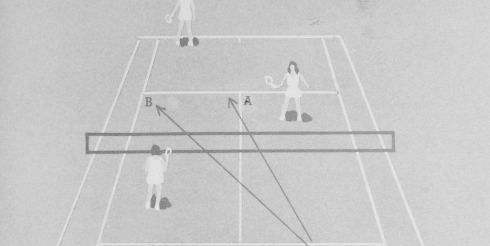
cú giao bóng hai là sự ổn định, đừng trở nên rập khuôn — hãy để đối thủ luôn phải đoán, để anh ta không thể lợi dụng một cú giao bóng hai có thể yếu hơn.
_ second serve is reliability, do not become stereotyped—keep your opponent guessing so he cannot take advantage of a possibly weaker second serve.
Đứng Ở ĐâuWhere to Stand
Vị trí giao bóng tốt nhất của bạn là khoảng giữa vạch giữa sân và hành lang biên (xem Hình 3-2). Điều này áp dụng dù bạn giao vào ô bên phải hay ô bên trái. Từ vị trí này bạn có thể giao sang bất kỳ bên nào của ô giao bóng tương ứng hoặc thậm chí giao thẳng vào đối thủ. Bằng cách giữ vị trí tương tự mỗi lần giao bóng, bạn sẽ không tiết lộ ý đồ của mình qua
Your best serving position is approximately halfway between the center mark and the alley (see Figure 3-2). This applies whether you are serving into the deuce or the ad courts. From this position you can serve to either side of the appropriate service box or even directly at your opponent. By taking up a similar position each time you serve, you will not be telegraphing your intentions in terms of
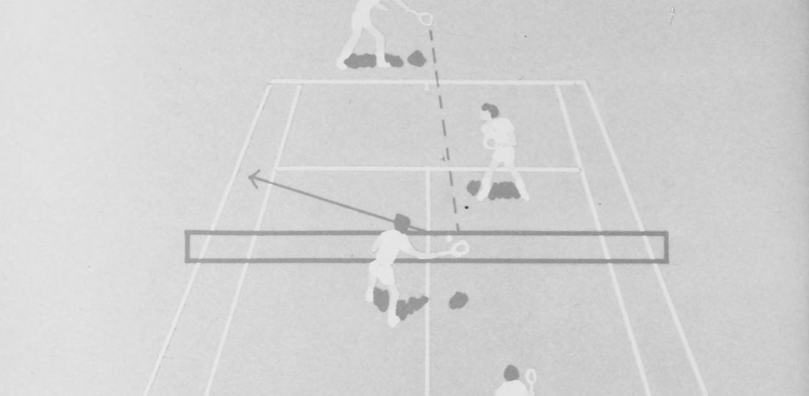
chỗ bạn định đặt cú giao bóng của mình. Những ngoại lệ duy nhất với vị trí giao bóng chính giữa này xảy ra khi bạn đối đầu với một đối thủ có điểm yếu đặc biệt rõ rệt. Ví dụ, nếu đối thủ của bạn gần như không có trái tay, thì việc giao bóng vào trái tay đó sẽ có lợi cho bạn. Do đó, ở ô bên phải (giả sử đối thủ không có trái tay của bạn thuận tay phải), bạn nên đứng gần vạch giữa sân để có thể giao dọc theo giữa sân (xem Hình 3-3). Ở ô bên trái, bạn cũng nên đứng gần giữa sân nhưng giao ra biên vào ô bên trái để ngăn đối thủ chạy vòng qua trái tay của anh ta (xem Hình 3-4).
where you intend to place your serve. The only exceptions to this central serving position occur when you are facing an opponent with a particularly significant weakness. For example, if your opponent has a nonexistent backhand, then it will pay you to serve to that backhand. Thus, in the deuce court (assuming that your backhandless opponent is righthanded), you should stand close to the center mark so you can serve down the center of the court (see Figure 3-3). In the ad court, you would also stay close to the center but serve wide into the ad court to prevent your opponent from running round his backhand (see Figure 3-4).
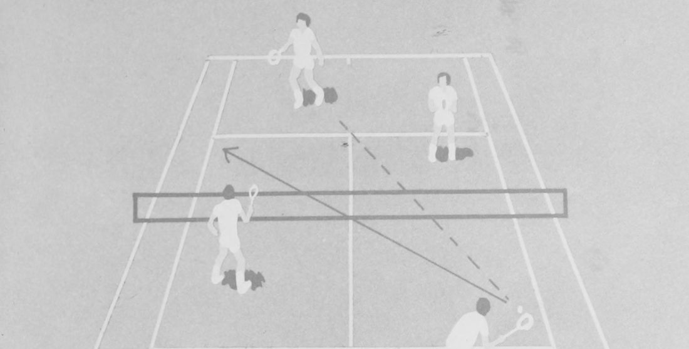
Bằng cách giao bóng từ khoảng giữa vạch giữa sân và hành lang biên, bạn sẽ ở chính giữa khu vực mình phải bao quát. Bạn cũng sẽ ở vị trí có thể chạy thẳng lên lưới (Hình 3-2). Vậy nên dù bạn ở lại cuối sân sau khi giao bóng hay quyết định vào lưới, bạn sẽ ở vị trí tốt nhất để đáp trả cú đỡ giao bóng của đối phương. Cũng như vị trí giao bóng của bạn có thể cho người đỡ bóng biết bạn định giao dọc giữa sân hay ra biên, đôi khi bạn có thể lợi dụng một người đỡ bóng đứng sai vị trí. Ví dụ, nếu người đỡ bóng đứng gần vạch giữa sân ở ô bên phải — có lẽ để ngăn bạn giao vào trái
E By serving from midway between the center mark and the alley, you will be in the center of the area you have to cover. You will also be in a position to run directly up to the net (Figure 3-2). So whether you stay back after serving or decide to rush the net, you will be in the best position to reply to the receiver's return of serve. Just as your position as a server might tell the receiver whether you intend to serve down the middle or wide, you can sometimes take advantage of a receiver who positions himself incorrectly. For example, if the receiver stands close to the center mark in the deuce court—perhaps to discourage you from hitting to his back-
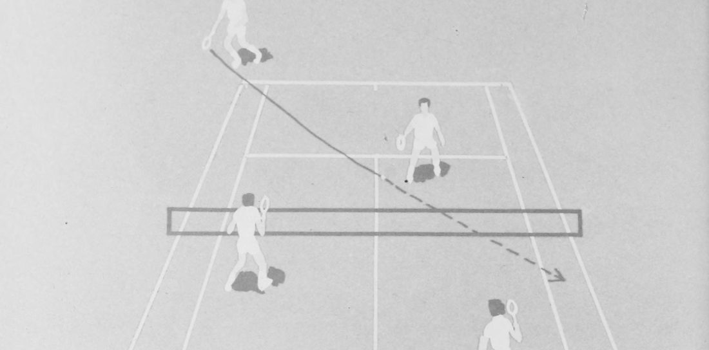
tay của anh ta — bạn có thể lợi dụng sai lầm chết người đó bằng cách giao một cú xoáy ngang rất rộng ra biên (xem Hình 3-5). Tuy nhiên, hãy coi chừng một cái bẫy, vì cú giao bóng ra biên có thể chính là điều người đỡ bóng mong muốn; anh ta sẽ di chuyển ngay khi bạn giao, sẵn sàng đỡ cú giao bóng ra biên của bạn bằng một cú thuận tay dọc hành lang vượt qua người chơi lưới của bạn (xem Hình 3-6). Như đã nói, đánh đôi là trò chơi của những người biết suy nghĩ!
hand—you can take advantage of his fatal move by serving a very wide slice (see Figure 3-5). However, beware of a trap, since a wide serve may be exactly what the receiver had in mind; he will move as you serve, ready to return your wide serve with a forehand down the alley past your net man (see Figure 3-6). As we said before, doubles is a thinking man's game!
Đặt Cú Giao Bóng Ở ĐâuWhere to Place Your Serve
Việc đặt cú giao bóng ở đâu là quyết định bạn phải đối mặt mỗi lần bước lên giao bóng trong trận. Và mỗi lần các điều kiện lại hơi khác — bạn có thể đang dẫn trước, cú giao bóng của bạn có thể không tốt,
The placement of your serve is a decision you will face every time you come up to serve in a match. And each time the conditions will differ slightly—you may be ahead, your serve might be off,
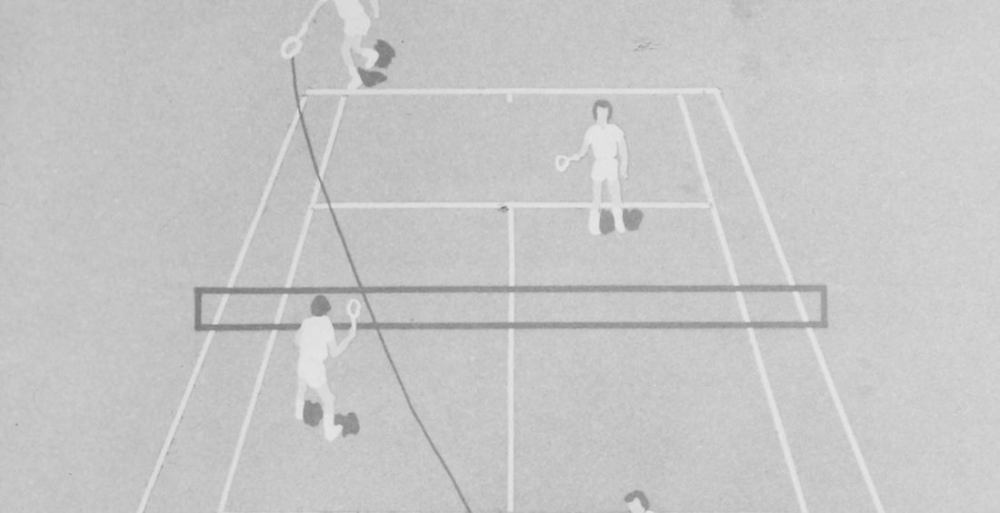
đối thủ của bạn có thể hôm nay đặc biệt mạnh ở trái tay, hay bất cứ điều gì. Nên khi bước lên giao bóng, bạn phải dừng lại một lát, tập hợp mọi thông tin mình có, đưa ra quyết định, rồi thực hiện. Tôi không thể cho bạn một bộ quy tắc cứng nhắc cho mọi tình huống có thể xảy ra, nhưng tôi có thể cho bạn vài ý tưởng cho những tình huống phổ biến hơn — phần còn lại tùy thuộc vào bạn và kinh nghiệm của bạn. Hầu hết những nhận xét sau đây áp dụng cho người giao bóng và người đỡ bóng thuận tay phải (mọi thứ sẽ đảo ngược nếu bạn là tay vợt thuận trái). Trước hết, hãy xét việc giao bóng vào ô bên phải. Về cơ bản, bạn có hai lựa chọn: giao dọc giữa sân vào trái tay của đối thủ
* your opponent may be unusually strong on his backhand today, or whatever. So when you come up to serve, you must stop for a moment, put together all the information at your disposal, make your decision, then go ahead and do it. I cannot give you a set of hard and fast rules for every possible situation, but 1 can give you a few ideas for the more common situations—the rest is up to you and your experience. Most of the following remarks apply to right-handed servers and receivers (everything will be reversed if you're a lefty). First of all, let's consider serving into the deuce court. Basically, you have two choices: to serve down the center to your opponent's backhand
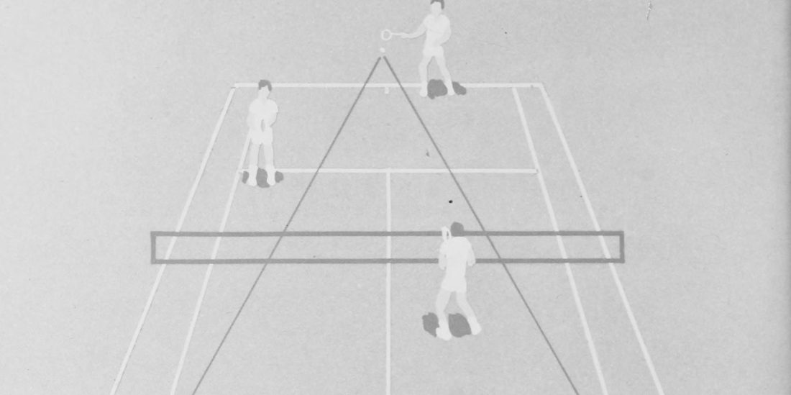
(A) hoặc giao ra biên vào thuận tay của anh ta (B) (xem Hình 3-7). Vì hầu hết đối thủ của bạn sẽ yếu hơn ở trái tay, phần lớn cú giao bóng của bạn nên đi dọc giữa sân vào ô bên phải. Nếu bạn giao dọc giữa sân, hầu như mọi cú đỡ bóng sẽ đi chéo sân về phía bạn, người giao bóng đang tiến lên (tôi giả định rằng nhìn chung người giao bóng sẽ vào lưới theo cú giao bóng của mình). Nếu người đỡ bóng cố đánh bóng dọc giữa sân, đồng đội của bạn có thể xê dịch sang và đập bóng bằng một cú vô-lê ra xa đối phương (xem Hình 3-8). Nếu bóng bay chéo sân về phía bạn khi bạn tiến lên lưới, hãy vô-lê bóng trả chéo sân về phía người chơi xa lưới nhất (xem Hình 3-9). Bằng cách đó, bóng
(A) or wide to his forehand (B) (see Figure 3-7). Since most of your opponents will be weaker on the backhand, a majority of your serves should go down the center into the deuce court. If you serve down the center, virtually all the returns will be crosscourt toward you, the oncoming server (I am assuming that generally the server will follow his serve to the net). Should the receiver try to hit the ball down the middle, your partner can drift over and smash the ball with a volley away from your opponents (see Figure 3-8). If the ball flies crosscourt to you as you come up toward the net, volley the ball back crosscourt towards the player who is farthest from the net (see Figure 3-9). That way, the ball
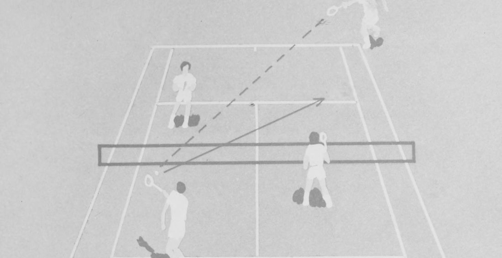
sẽ đang rơi xuống nếu người đỡ bóng đang cố vào lưới. Người đỡ bóng vô-lê bóng hướng lên khó hơn nhiều so với người chơi lưới vô-lê bóng hướng xuống. Nếu bạn quyết định giao bóng ra biên vào thuận tay của đối thủ, lúc này bạn phải xử lý một tình huống khác thường hơn nhiều. Bạn phải sẵn sàng chạy lên nhanh để lo cú bóng ngắn ra biên vào hành lang của mình (xem Hình 3-10). Đối thủ của bạn cũng có thể đánh một cú xoáy lên sâu vào đúng vị trí bạn vừa giao bóng (xem Hình 3-11). Người giao bóng sẽ phải đặc biệt cảnh giác và nhanh nhẹn để vô-lê kiểu bóng trả đó. Vậy nên, khi giao bóng ra biên vào thuận tay của đối thủ, bạn mất đi một phần lợi thế
* will be dropping if the receiver is trying to rush the net. It is much harder for the receiver to volley up than for the net man to volley down. Should you decide to serve wide to your opponent's forehand, you now have a much more out-of-the-ordinary situation to deal with. You must be prepared to run up quickly to take care of the short shot wide into your own alley (see Figure 3-10). Your opponent can also hit a topspin drive deep to the position that you have just served from (see Figure 3-11). The server will have to be especially alert, and fast, to volley that kind of return. Thus, by serving wide to your opponent's forehand, you lose a little of the
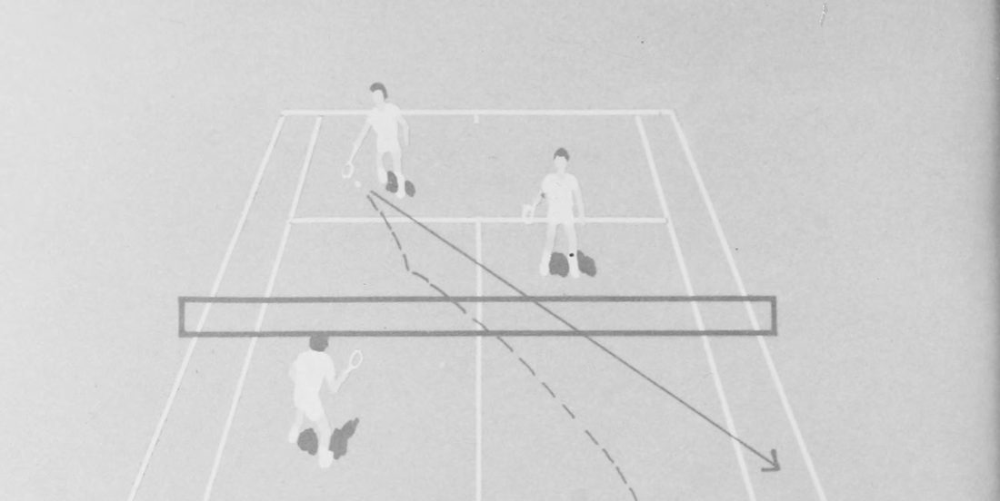
mà việc giao bóng mang lại cho bạn. Tất nhiên, nếu đối thủ của bạn có thuận tay yếu, thì cứ thoải mái dồn bóng vào đó với hy vọng buộc những cú đỡ bóng yếu để người chơi lưới của bạn dứt điểm. Khi bạn giao bóng vào ô bên trái, các lựa chọn của bạn cân bằng hơn giữa cú giao bóng dọc giữa sân và cú giao bóng ra biên. Một cú giao bóng dọc giữa sân vào thuận tay của đối thủ sẽ giảm bớt các góc mà anh ta có thể tạo ra khi đỡ bóng, nên dễ xử lý hơn cho đội giao bóng (xem Hình 3-12). Một cú giao bóng ra biên vào trái tay của đối thủ sẽ mở sân rộng hơn cho anh ta, nhưng trừ khi anh ta có trái tay rất tốt, nhiều khả năng anh ta sẽ không đủ khả năng tận dụng hết những khoảng trống đó. Nhiều khả năng, một cú giao bóng ra biên
edge that serving gives you. Of course, if your opponent has a weak forehand, then by all means batter away at it in the hope of forcing weak returns that your net man can put away. When you are serving to the ad court, your choices are more equal between the down-the-center serve and the wide serve. A serve down the center to your opponent's forehand will reduce the angles that he can get on his return and so be easier for the serving team to deal with (see Figure 3-12). A serve wide to your opponent’'s backhand will open up the court more for him but, unless he has a very good backhand, chances are he won't have the ability to take full advantage of those openings. Most likely, a wide serve
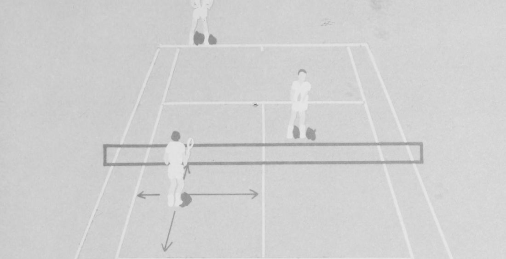
vào trái tay sẽ tạo ra một cú đỡ bóng chéo sân, ra xa người chơi lưới của người giao bóng. Một người giao bóng đang vào lưới sẽ có thể vô-lê kiểu bóng trả đó dễ dàng (xem Hình 3-13). Ở đây cũng nên nói một đôi lời về độ sâu. Dù bạn quyết định đặt cú giao bóng ở đâu — hãy đánh thật SÂU. Khoảng hai feet bên trong vạch giao bóng là vừa đúng. Một cú giao bóng rơi nhẹ tênh vào giữa ô giao bóng chẳng khác nào mời người đỡ bóng chạy lên và đánh bóng sang hành lang của bạn để gần như chắc chắn thắng điểm (xem Hình 3-14). Hoặc anh ta có thể đỡ bóng gọn gàng vào chân bạn, nơi bạn hầu như không có cơ hội đỡ bóng theo bất kỳ cách nào khác ngoài một cú nửa vô-lê phòng thủ. Giao một cú bóng ngắn là dâng điểm cho
to his backhand will produce a crosscourt return, away from the servers net man. A net-rushing server should be able to volley such a return easily (see Figure 3-13). A word or two about depth is in order here. No matter where you decide to place your serve—hit it DEEP. About two feet inside the service line is just right. A dolly drop of a serve in the middle of the service box is just asking for the receiver to come running up and hit the ball over to your alley for an almost certain winner (see Figure 3-14). Or he might return the ball neatly to your feet where you have little chance of making any sort of return at all other than a defensive half volley. Hitting a short serve is handing the point to
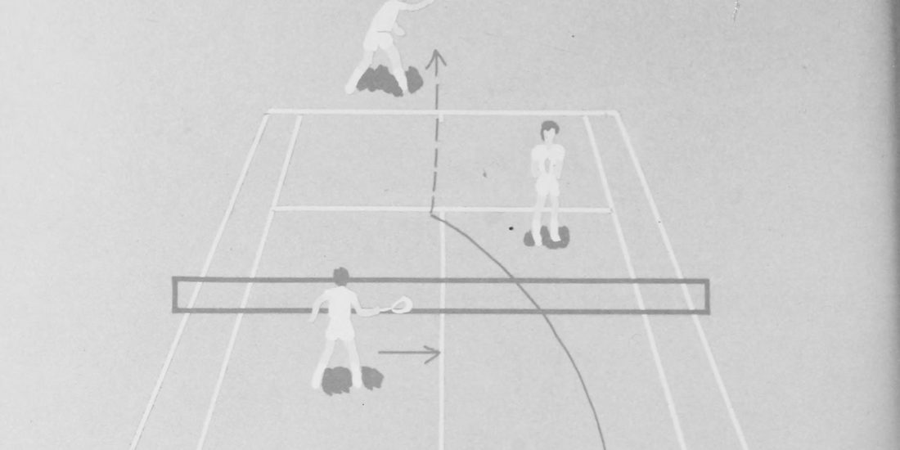
đối thủ trên một cái đĩa. Cứ tiếp tục giao bóng ngắn thì chẳng bao lâu đối thủ cũng sẽ có đầu bạn trên đĩa. Mọi cú giao bóng của bạn đều phải sâu. Bạn cũng nên xen kẽ các cú giao bóng. Sự đa dạng là nỗi khổ của người đỡ bóng. Nếu bạn có thể thay đổi tốc độ, xoáy và điểm đặt bóng mỗi lần giao, người đỡ bóng hiếm khi đoán đúng ý bạn — thực tế, anh ta sẽ rất bực bội. Một lý do chính cho thành công của John Newcombe với tư cách một tay vợt đánh đôi là khả năng thay đổi cú giao bóng của anh, dù anh nổi tiếng là người giao bóng mạnh. Newcombe có thể tăng hoặc giảm tốc độ giao bóng tùy ý. Anh có thể thêm xoáy ngang hoặc xoáy lên khi cần và có thể đặt cú giao bóng chính xác vào nơi anh muốn.
your opponent on a plate. Continue to hit short serves and your opponent will soon have your head on a plate, too. All your serves must be deep. You should also mix up your serves. Variety is the bane of the receiver's life. If you can alter speed, spin and placement every time you serve, the receiver will rarely outguess you—in fact, he'll become very frustrated. A major reason for John Newcombe’s success as a doubles player is his ability to vary his serve, despite his well-deserved reputation as a power server. Newcombe can speed up or slow his serve at will. He can add slice or topspin as necessary and he can put the serve exactly where he wants it.
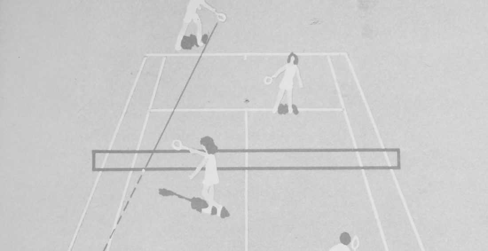
Đồng Đội Của Người Giao BóngThe Server's Partner
Chỉ vì người giao bóng có lợi thế khi giao bóng, người chơi lưới không nên đứng yên vô ích. Nếu đồng đội của bạn đang giao bóng, bạn, với tư cách người chơi lưới, phải sẵn sàng đưa ra vài quyết định trong tích tắc và di chuyển nhanh. Trách nhiệm sau là quan trọng nhất. Người chơi lưới phải luôn di chuyển ngay khi người đỡ bóng chạm bóng và sẵn sàng cắt bóng trả mỗi khi có thể. Khi đồng đội của bạn giao bóng, bạn nên ở gần giữa phần sân của mình, hơi gần hành lang biên hơn so với giữa và hơi gần lưới hơn so với vạch giao bóng (xem Hình 3-15). Hãy chờ, thăng bằng trên đầu mũi bàn chân, vợt giơ cao và hướng ra
Just because the server has the advantage in serving, the net man should not idly stand by. If your partner is serving, you, as the net player, have to be ready to make a few split-second decisions and move fast. The latter responsibility is most important. The net player should always move the moment the receiver touches the ball and be ready to cut off the return whenever possible. When your partner serves, you should be near the center of your court, slightly closer to the alley than the center and slightly closer to the net than the service line (see Figure 3-15). Wait, poised on the balls of your feet, with your racquet up and out in
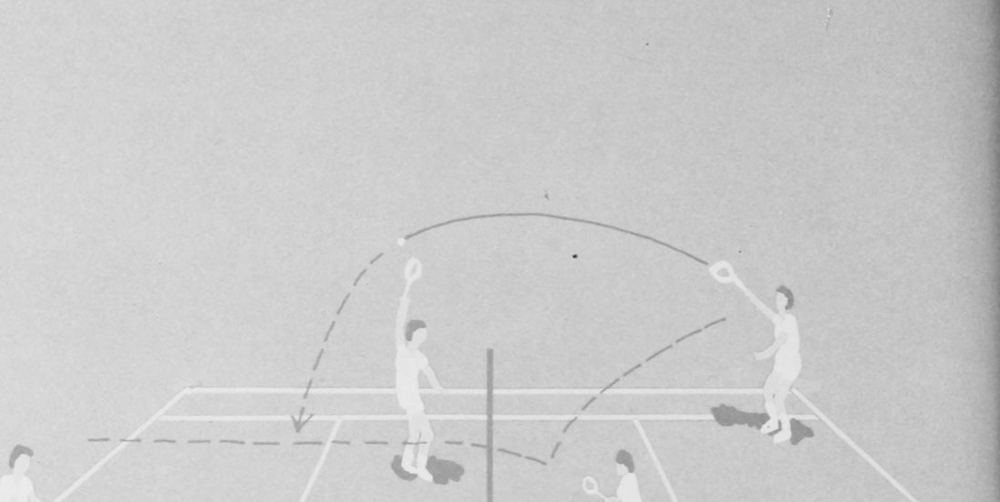
phía trước, sẵn sàng vung vào vị trí. Trong khi chờ, hãy chăm chú quan sát người đỡ bóng. Thực tế, một trong những nhiệm vụ của bạn là nghiên cứu người đỡ bóng liên tục suốt trận để bạn có thể đoán trước tốt hơn những cú đỡ bóng của họ — và làm gì đó với chúng. Đừng nhìn người giao bóng — đó là cách dễ ăn bóng vào mặt. Hãy nhìn người đỡ bóng và sẵn sàng cho cú nảy của bóng trong ô giao bóng. Nếu bóng nảy về bên phải bạn (xem Hình 3-16), hãy sẵn sàng di chuyển sang phải và cắt cú đỡ bóng. Nếu bóng nảy về bên trái bạn, hãy sẵn sàng di chuyển sang trái. Tuy nhiên, đừng di chuyển cho đến khi người đỡ bóng đã quyết tâm đánh bóng. Nếu bạn di chuyển quá sớm, bạn có nguy cơ bị đánh vượt dọc biên
front of you, ready to swing into position. While waiting, watch the receiver intently. In fact, one of your jobs is to study the receivers continuously throughout a match so that you can better anticipate their returns—and do something about them. Don't watch the server—that's a good way to get a ball in the face. Watch the receiver and be ready for the bounce of the ball in the service box. If the ball bounces to your right (see Figure 3-16), be ready to move to your right and cut off the return. If the ball bounces to your left, be ready to move to the left. Don't make your move, however, until the receiver is committed to hitting the ball. If you move too soon, you run the risk of being passed down the line
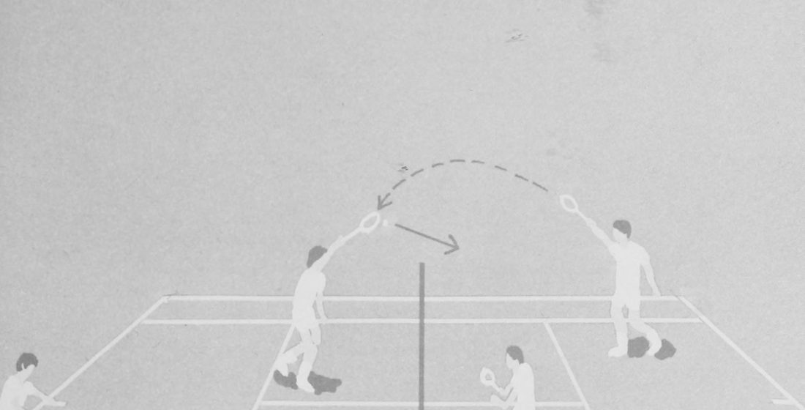
(xem Hình 3-17). Hãy di chuyển khi người đỡ bóng đánh bóng. Nếu người giao bóng giao bóng sâu, người chơi lưới nên giữ nguyên vị trí, nhưng với một cú giao bóng nông, người chơi lưới nên tiến lên vài bước để đánh vô-lê hướng xuống — nhưng không lên quá nhiều để tránh mời một cú bóng bổng qua đầu mình (xem Hình 3-18). Người chơi lưới đôi khi có thể buộc người đỡ bóng phải làm một động tác cụ thể. Ví dụ, bằng cách áp sát lưới, người chơi lưới có thể khiến người đỡ bóng muốn đánh một cú bóng bổng. Nếu người chơi lưới đoán đúng cú bóng bổng, anh ta có thể lùi lại nhanh và đánh một cú đập bóng (xem Hình 3-19).
_ (see Figure 3-17). Move as the receiver hits the ball. If the server hits his serve deep, the net player should hold his position, but on a shallow serve the net man should move up a couple of steps to hit down with his volley — but not so much as to invite a lob over his head (see Figure 3-18). The net player can sometimes force the receiver to take a particular action. For example, by crowding the net, the net man may tempt the receiver into hitting a lob. If the net player correctly anticipated the lob, he can move back quickly and hit a smash (see Figure 3-19).
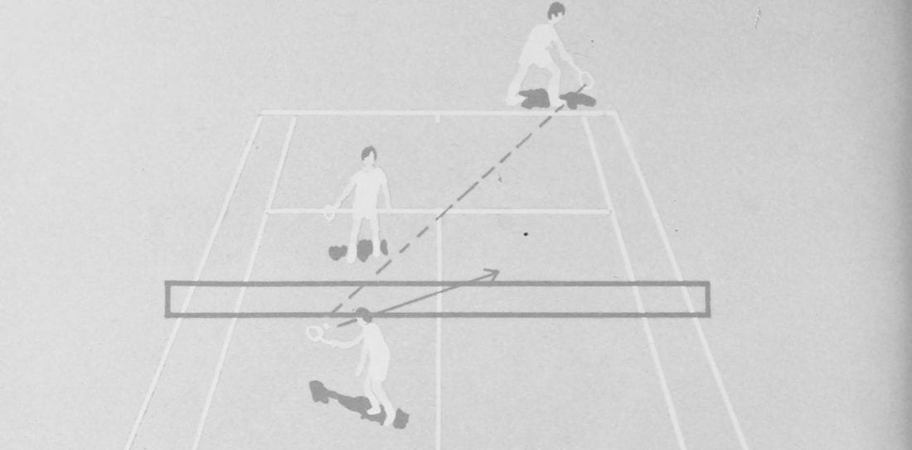
Thế Đứng ÚcThe Australian Formation
Bạn sẽ nhớ rằng một trong những nguyên tắc đánh đôi của chúng ta là thay đổi lối chơi, đặc biệt khi đang thua. Đôi khi, bạn có thể muốn thay đổi thế đứng giao bóng để xử lý một người đỡ bóng cụ thể. Thế đứng giao bóng thay thế phổ biến nhất là thế Úc, gọi như vậy vì nó được các đội đánh đôi người Úc sau Thế chiến thứ nhất sử dụng lần đầu. Trong thế đứng Úc, người chơi lưới chơi ở cùng nửa sân với người giao bóng, sẵn sàng đối phó với một người đỡ bóng liên tục trả bóng chéo sân ngắn vào hành lang (xem Hình 3-20). Mục đích của thế đứng này là ngăn người đỡ bóng đánh một cú đỡ bóng chéo sân, vì giờ đây cú đó có thể bị người chơi lưới vô-lê nhanh chóng. Nếu, đúng như dự đoán, người đỡ bóng thử một cú dọc biên,
You will remember that one of our doubles axioms is to vary your game, especially in a losing situation. Very occasionally, you may wish to alter your serving formation to handle a particular receiver. The most common alternative serving formation is the Australian, so-called because it was first used by post-World War I Aussie doubles teams. In the Australian formation, the net man plays on the same half of the court as the server, ready to play against a receiver who persistently returns crosscourt short into the alley (see Figure 3-20). The intent of the formation is to dissuade the receiver from hitting a crosscourt return which can now quickly be volleyed by the net man. If, as expected, the receiver tries a shot down the line,
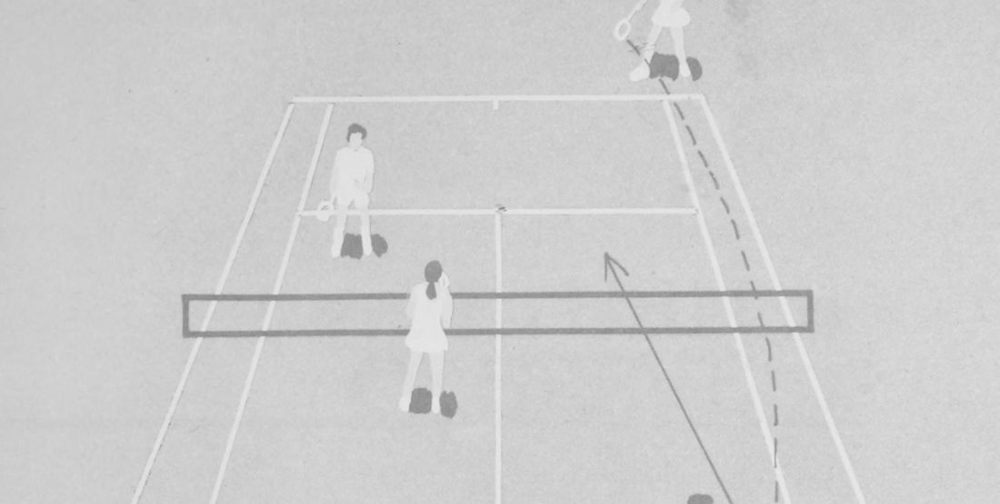
người giao bóng, người băng ngang sang sau khi giao bóng, sẽ chặn và trả cú đánh đó (xem Hình 3-21). Nhìn chung, thế đứng Úc sẽ buộc người đỡ bóng trả bóng yếu vì anh ta thích cú đỡ bóng chéo sân hơn nhiều. Vậy nên người giao bóng sẽ có thể trả cú dọc biên khá dễ dàng. Thế đứng Úc có thể dùng ở cả hai ô, tùy khả năng của người đỡ bóng, nhưng thường được dùng nhất ở ô bên trái để đối phó với một tay vợt có trái tay mạnh. Nếu thế Úc hiệu quả, bạn nên xen kẽ nó với một vị trí truyền thống hơn để người đỡ bóng luôn phải cảnh giác. Thực tế, bạn không nên lạm dụng thế Úc — đừng trở nên rập khuôn — vì đội bên kia sẽ sớm nhận ra.
_ the server, who crosses over after serving, will intercept and return the shot (see Figure 3-21). Generally, the Australian formation will force a weak return from the receiver since he much prefers the crosscourt return. So the server will be able to return the down-the-line shot quite easily. The Australian formation can be used in either court, depending on the ability of the receiver, but it is most often used in the ad court against a player with a strong backhand. If the Aussie formation works, you should vary it with a more conventional position just to keep the receiver on his toes. In fact, you should not overuse the Aussie formation—don't become stereotyped—because the other team will soon become wise to it.
eis
4. CÚ ĐỠ GIAO BÓNG
Hướng Tới Sự Ổn ĐịnhAim for Consistency
Đỡ giao bóng là một cú đánh cực kỳ quan trọng trong đánh đôi. Giả sử bạn luôn thắng được các game giao bóng của mình, thì mục tiêu của bạn trong đánh đôi là phá được game giao bóng của đối phương. Thực tế, ở trình độ đánh đôi đỉnh cao, bạn sẽ thường thấy mỗi ván chỉ có một lần phá giao bóng, nhưng chỉ cần thế là đủ để thắng ván. Vì vậy bạn phải có một cú đỡ giao bóng đáng tin cậy để phá được game giao bóng của đối phương.
The return of serve is a very critical shot in doubles play. Assuming that you consistently win your own service games, your objective in doubles is to break the serve of your opponents. In fact, in top-level doubles play, you will often see that only one break of serve occurs in each set but it is all that’s needed to win the set. So you must have a reliable return of serve to break your opponents’ serve.
Từ khóa ở đây là "đáng tin cậy". Việc đầu tiên cần làm khi đỡ giao bóng là đơn giản đưa được bóng qua lưới trong mọi lần. Đỡ giao bóng mà không đưa bóng vào lưới hay ra ngoài sân cũng giống như ném một trận no-hitter trong bóng chày – nhưng khó hơn! Hãy cố đưa ít nhất 90 phần trăm số cú đỡ giao bóng của mình qua lưới, và bạn sẽ hiếm khi thua trận. Khi John Hennessey và tôi giành danh hiệu Đánh đôi Quốc gia Mỹ năm 1928 trước hai nhà vô địch Wimbledon lúc bấy giờ là Henri Cochet và Jacques Brugnon, ở ván đầu Hennessey không mắc lỗi nào còn tôi chỉ mắc hai lỗi. Tôi ngờ rằng chưa ai tiến gần tới kỷ lục đặc biệt đó, dù ở nội dung đánh đôi hay đánh đơn. Nhưng trải nghiệm ấy cho thấy sự ổn định có thể đánh bại những đối thủ được cho là mạnh hơn bạn. Tất nhiên, chỉ đưa bóng trả lại là chưa đủ khi bạn đối đầu với những đối thủ biết chơi bóng và có thể biến những cú đỡ giao bóng yếu ớt của bạn thành mồi ngon. Nếu bạn chỉ đưa trả lại những quả bóng lơ lửng để đối phương vồ lấy, bạn sẽ không phá được giao bóng của họ. Bạn phải có khả năng đỡ giao bóng theo cách gây cho đối phương chút khó khăn. Hãy dùng cú đỡ giao bóng như một cú chuẩn bị hay cú dọn đường, có thể buộc đối phương phải đánh bóng lên để bạn có thể tiến lên lưới và dứt điểm bằng một cú vô-lê. Vậy nên bạn phải lên kế hoạch cho các cú đỡ giao bóng của mình, cũng như bạn lên kế hoạch cho các cú giao bóng. Đương nhiên, bạn sẽ không biết trước khi người giao bóng đánh bóng là anh ta đang đánh vào thuận tay hay trái tay của bạn, hay đánh xoáy ngang hay xoáy lên. Tuy nhiên, mỗi lần chuẩn bị đỡ giao bóng, bạn nên có sẵn kế hoạch trong đầu và sẵn sàng thực hiện những kế hoạch đó để thắng điểm. Sẽ rất hữu ích nếu đồng đội của bạn cũng nắm rõ
The key word is “reliable.” The first order of business when returning serve is to simply get the ball back over the net every time. Returning serve without hitting the ball into the net or out of court is the tennis equivalent of pitching a no-hitter—but harder! Try to get at least 90 percent of your returns over the net and you'll rarely lose a match. When John Hennessey and I won the U.S. National Doubles title in 1928 against the then Wimbledon champions Henri Cochet and Jacques Brugnon, in the first set Hennessey made no errors and I made only two. I doubt that anyone has come close to that - particular record in either doubles or singles. But that experience shows consistency can beat opponents who are supposed to be stronger than you. Of course, it's not enough to merely get the ball back when you are facing opponents who can play the game and, make mincemeat out of your weak returns. If you poop back floaters that your opponent can pounce on, youre not going to break your opponent's serve. You should be able to return serve in a way that will give your opponents some difficulty. Use your return of serve as a preparatory or setup shot that will perhaps force your opponent to hit up so you can move up to the net and land a winning volley. So you must plan your returns of serve, just as you plan your serves. Naturally, you will not know until the server hits the ball whether he is hitting to your forehand or backhand or with sidespin or topspin. However, each time you prepare to receive serve, you should have plans in your mind and be ready to execute those plans to win the point. It will help if your partner has a good idea of
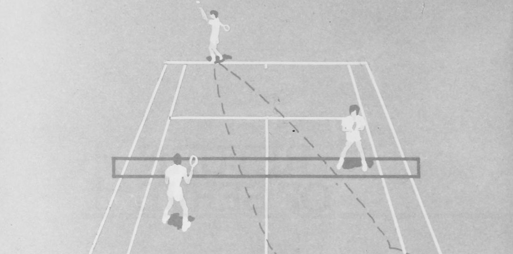
những kế hoạch của bạn. Tôi sẽ nói thêm về điều này ở phần sau. Cuối cùng, một nguyên tắc áp dụng cho mọi cú đánh của bạn lại đặc biệt quan trọng với cú đỡ giao bóng. Bạn nên nhanh chân và chậm tay. Ý tôi là bạn nên vào đúng vị trí và chuẩn bị sớm – nhanh chân – nhưng đừng đánh vội vàng – hãy chậm tay và đánh bóng một cách chủ động và tự tin. Ken Rosewall là bậc thầy của kỹ thuật này – ông nhanh như chớp trên đôi chân và đánh bóng bằng một cú vuốt vững vàng, kiểm soát. Nhờ đó, các cú đánh của ông luôn chắc chắn nhưng quan trọng hơn với đánh đôi là chúng rất ổn định. Rosewall biết mình có thể tin vào những cú đánh nhất định khi thế trận trở nên khó khăn. Dù không chơi đôi nhiều, Jimmy Connors sở hữu một trong những cú đỡ giao bóng hay nhất làng quần vợt hiện nay. Anh ấy có được phần lớn
your plans, too. I'll say more about that later. Finally, a principle that applies to all your shots is especially important for returning serve. You should be quick with your feet and slow with your racquet. By that I mean you should get into position and prepare early—be quick with your feet—but don't make any hurried shots—be slow with your racquet and hit the ball deliberately and with confidence. Ken Rosewall is a master of this technique—he is lightning fast on his feet and hits the ball with a steady, controlled stroke. Consequently, his strokes are always hit solidly but, more important for doubles, they are consistent. Rosewall knows he can depend on certain shots when the going gets tough. Although he does not play much doubles, Jimmy Connors has one of the best service returns in the game today. He gains much of
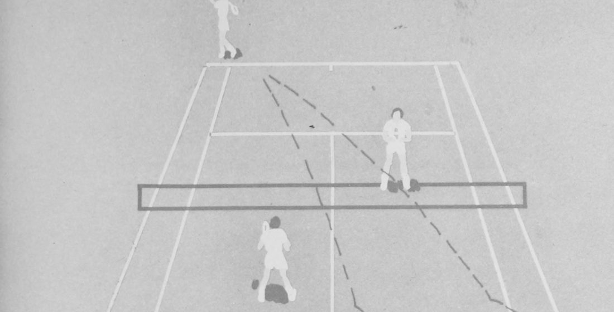
lợi thế của mình từ việc tấn công bóng bằng cách đón bóng sớm và nhanh chóng tiến vào lưới. Đó là một mục tiêu rất đáng theo đuổi nhưng khó đạt được với người chơi quần vợt cuối tuần. Nếu bạn muốn phát triển một cú đỡ giao bóng tốt, hãy bám chắc lấy sự ổn định và gây cho đội giao bóng càng nhiều khó khăn càng tốt mà không làm giảm tỷ lệ đỡ giao bóng thành công của mình.
his advantage from attacking the ball by meeting it early and moving quickly into the net. That's a very worthwhile objective but one that's hard to attain for the weekend tennis player. If you are going to develop a good return of serve, stick to consistency and give the serving team as much difficulty as you can without reducing your percentage of successful service returns.
Đứng Ở Đâu Để Đỡ Giao BóngWhere To Receive Serve
Chọn vị trí để đỡ giao bóng phần lớn là vấn đề cân đối giữa những khả năng của người giao bóng và thế mạnh đánh bóng của chính bạn. Người giao bóng có thể thường nhắm vào trái tay của bạn, vì anh ta biết đó là cú đánh yếu hơn của bạn. Ngược lại, bạn có thể muốn đón phần lớn các cú giao bóng bằng thuận tay mạnh của mình, nên việc chọn vị trí
Positioning yourself to receive serve is largely a matter of matching the server's possibilities to your own stroking strengths. A server may frequently aim at your backhand, because he knows that that is a weaker shot for you. On the other hand, you may wish to take most of the serves on your strong forehand, so positioning yourself
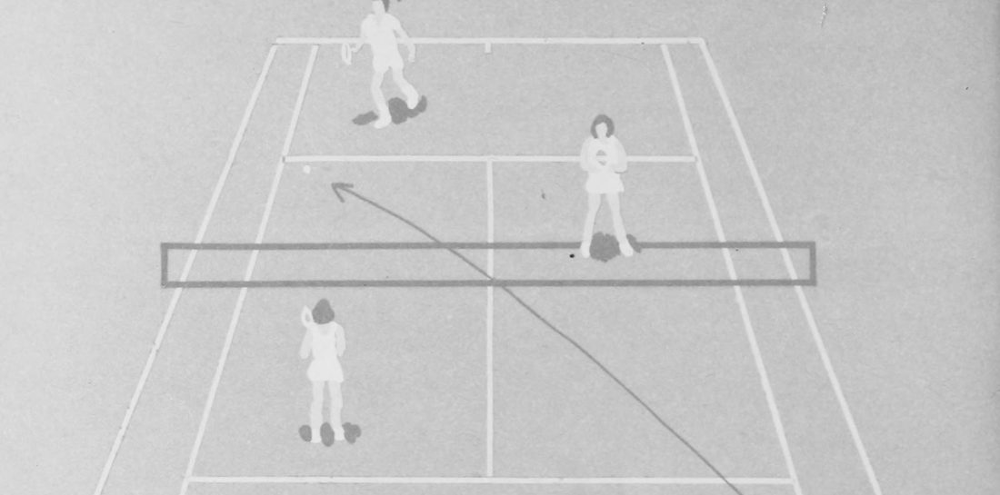
để đỡ giao bóng là vấn đề cân nhắc xác suất khi đối đầu với một người giao bóng cụ thể. Với quả giao bóng thứ nhất, hãy đứng ở vạch cuối sân hoặc lùi sau vạch đó vài inch, gần vạch biên đơn, giả định rằng người giao bóng giao từ khoảng giữa vạch giữa sân và vạch biên đơn (xem Hình 4-1). Nếu bạn mạnh như nhau ở cả hai bên, bạn nên đứng vào khoảng giữa các góc giao bóng khả dĩ của đối phương. Nếu người giao bóng đứng lệch ra ngoài, bạn có thể điều chỉnh vị trí của mình cho phù hợp (xem Hình 4-2). Một số người chơi lùi lại một chút khi đối đầu với một người giao bóng đặc biệt mạnh. Tôi không tán thành điều đó. Nếu quả giao bóng có chút xoáy nào, việc lùi lại chỉ cho xoáy thêm thời gian phát huy tác dụng, từ đó khiến quả giao bóng khó đỡ hơn. Thực tế, khi bạn
for the serve is a question of weighing up the odds of facing a particular server. For a first serve, stand on the baseline or a couple of inches behind it, close to the singles sideline, assuming that the server is serving from midway between the center mark and the singles sideline (see Figure 4-1). If you are equally strong off both sides, you should be standing about midway between your opponent's possible angles of serve. If the server moves wider, you can adjust your position accordingly (see Figure 4-2). Some players move back a little when facing an exceptionally strong server. I do not advocate that. If the serve has any spin at all, by moving back you are giving the spin more time to take effect, thereby making the serve more difficult to return. In fact, when you
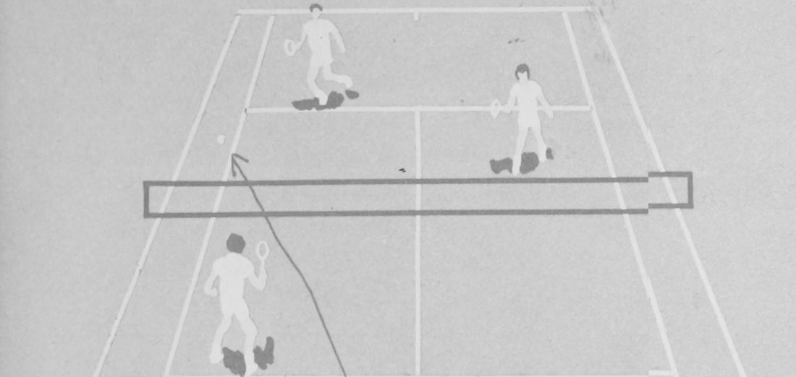
gặp phải một người giao bóng có thể đặt nhiều xoáy lên bóng, tôi khuyên bạn nên tiến lên một chút và đón bóng càng sớm càng tốt, trước khi xoáy kịp kéo bạn ra thật rộng. Tuy nhiên, đón bóng sớm đòi hỏi khả năng phán đoán nhạy bén và sự tự tin tuyệt đối vào cú đánh của mình, và đó là điều sẽ đến khi trình độ của bạn tiến bộ. Đừng vội! Với quả giao bóng thứ hai, bạn nên tiến lên một hai bước khi người giao bóng đánh bóng. Rất ít người có quả giao bóng thứ hai tốt như quả thứ nhất, nên bạn nên tận dụng mọi lợi thế có thể. Jack Kramer là một trong số ít tay vợt hàng đầu có quả giao bóng thứ hai đặc biệt mạnh. Bí quyết của Kramer là đặt thật nhiều xoáy lên quả giao bóng thứ hai để chắc chắn đưa được bóng vào, nhưng ông vẫn đánh bóng rất mạnh, nên sự kết hợp giữa tốc độ và xoáy
are up against a server who can put a lot of spin on the ball, I'd suggest you move in a little and take the ball as early as you Ca": before the spin has a chance to pull you wide. However, takir!9 the ball early requires keen anticipation and absolute confider'ce your stroke and is something that will come as your game improves. Don't push it! On the second serve, you should move in a step or two d§ the server hits the ball. Very few servers have a second serve that $ as good as the first, so you should take all the advantage you caf get. Jack Kramer was one of the few top players with an exceptionally hard second serve. Kramer's secret was to put plenty of topsp!2 on his second serve so that he could be sure of getting it in. HoWeVer. he still hit the ball very hard, so the combination of speed and spin
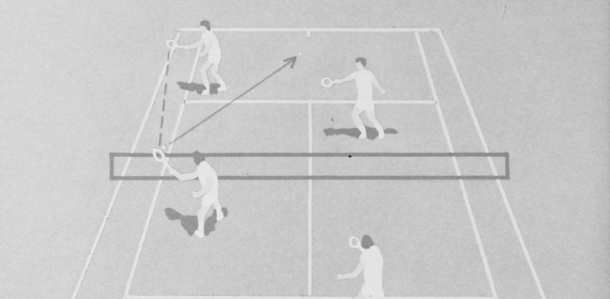
một cú trả bóng yếu ớt mà người đứng lưới có thể vô-lê để dứt điểm. đã tạo nên một quả giao bóng thứ hai đầy sát thương. Tiến lên đón quả giao bóng thứ hai sẽ đưa bạn tới gần lưới hơn. Nhiều khả năng người giao bóng sẽ đứng lại phía sau với một quả giao bóng thứ hai yếu, nên bạn sẽ có thể theo cú đỡ giao bóng của mình lên lưới và có lẽ dứt điểm bằng một cú vô-lê ở cú đánh tiếp theo. Như tôi đã nói trước đó, tình huống mà sau đó bạn có thể tạo ra một nước đi thắng điểm hoặc buộc đối phương mắc lỗi. Khi bạn đỡ giao bóng, vị trí của đồng đội bạn do kế hoạch đã định trước của bạn và khả năng của đối phương quyết định. Nếu bạn có cú đỡ giao bóng tốt, bóng đi thấp qua lưới, có lẽ nhắm vào chân đối phương, bạn nên sẵn sàng lên lưới. Trong trường hợp đó, đồng đội của bạn nên đứng ở vị trí lưới thông thường của mình (xem
a weak reply that can be volleyed by the net player for a winner. made for a lethal second serve. Moving in on a second serve will get you closer to the net. Chances are that the server will stay back on a weak second serve so you will be able to follow your return to the net and perhaps make a winning volley with your next shot. As I said before, the situation where you can later make a winning move or force your opponents into error. When you receive serve, your partner's position is dictated by your prior planning and the ability of your opponents. If you have a good return of serve that stays low over the net, perhaps to the feet of your opponent, you should be prepared to go to the net. In that case, your partner should stand in his normal net position (see
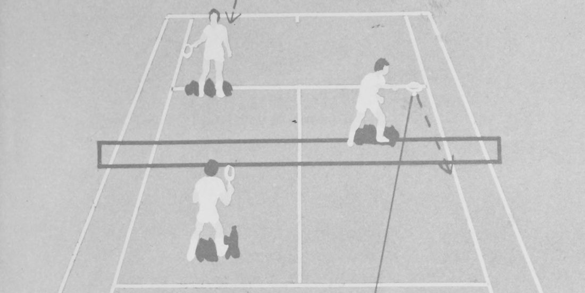
Hình 4-3). Tuy nhiên, nếu cú đỡ giao bóng của bạn không tốt lắm, hoặc nếu bạn đang đối đầu với một người giao bóng đặc biệt mạnh, đồng đội của bạn nên đứng lại phía sau ở vạch cuối sân, sẵn sàng che phần sân của mình. Nhiều người mới chơi cảm thấy thoải mái hơn khi đứng lại phía sau lúc đồng đội đỡ giao bóng. Nếu vậy, bạn có thể đứng lại phía sau và chỉ tiến lên lưới khi cơ hội thích hợp xuất hiện. Khi đã có kỹ năng đánh bóng và đủ kinh nghiệm, chắc chắn bạn sẽ muốn lên lưới càng nhiều càng tốt, vì đó là nơi các trận đánh đôi được định đoạt. Nhưng nếu đối phương không phải là những người ào lên lưới, thì cũng ít lý do để lúc nào cũng lao thẳng lên lưới. Với quả giao bóng thứ hai, tôi cho rằng đội đỡ giao bóng nên sẵn sàng nắm quyền kiểm soát lưới, nên đồng đội của người đỡ giao bóng nên chiếm vị trí người đứng lưới thông thường.
Figure 4—3). However, if your return is not very good, or if you are facing a particularly strong server, your partner should stay back on the baseline ready to cover his half of the court. Many beginning players feel more comfortable if they stay back when their partner receives serve. If so, you can stay back and only go up to the net when the right opportunity occurs. When you have the stroking skills and enough experience, you will undoubtedly want to go to the net as much as possible , since that is where doubles matches are won. But if your opponents are not net-rushers, there is less reason to always make a beeline for the net On second serve, | do think that the receiving team should be ready to take command of the net, so the receiver's partner should take up the usual net player's position.
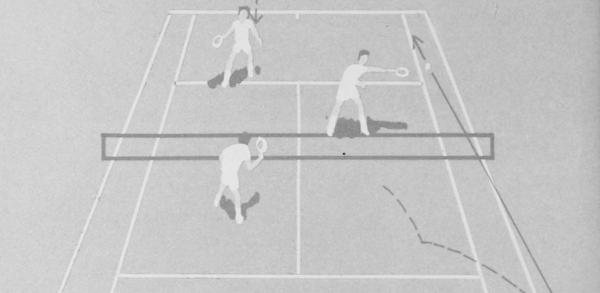
Lối Đánh Trên LướiNet Play
Đỡ Giao Bóng Ở Ô Bên PhảiReturning Serve in the Deuce Court
Ở ô bên phải, bạn có thể expect phần lớn các quả giao bóng đi xuống giữa vào trái tay của bạn (nếu bạn thuận tay phải). Cú đỡ hiệu quả nhất cho quả giao bóng này là một cú đánh nhẹ tay chéo sân ra hành lang đối diện (xem Hình 4-4). Cú đánh này sẽ nằm ngoài tầm với của người đứng lưới đối phương, trừ khi anh ta là một tay cướp bóng nhanh nhẹn đặc biệt. Cú đỡ nhẹ tay này cũng sẽ buộc người giao bóng phải chạy hết sức để có thể vô-lê dứt điểm (xem Hình 4-5). Cú đánh nhẹ tay ra hành lang khá khó; nếu bạn thấy quá khó, tôi khuyên bạn nên thử một cú đỡ chéo sân nhắm vào chân người giao bóng đang tiến lên. Nếu bạn có thể đánh cú này với chút xoáy lên thì càng tốt. Xoáy lên sẽ giúp đưa bóng xuống nhanh hơn.
In the deuce court, you can expect most serves to come down the center to your backhand (if you are right-handed). Your most effective return of this serve is a dinked shot crosscourt to the opposite alley (see Figure 4-4). This shot will be well out of the reach of the opposing net player unless he is an exceptionally fast poacher. This dinked return will also force the server to run hard to make the can volley for a winner (see Figure 4-5). The dink shot to the alley is quite difficult; if you find it too hard, I'd suggest you try a crosscourt return aimed on the feet of the oncoming server. If you can hit this shot with a little topspin, so much the better. The topspin will help bring the ball down faster.
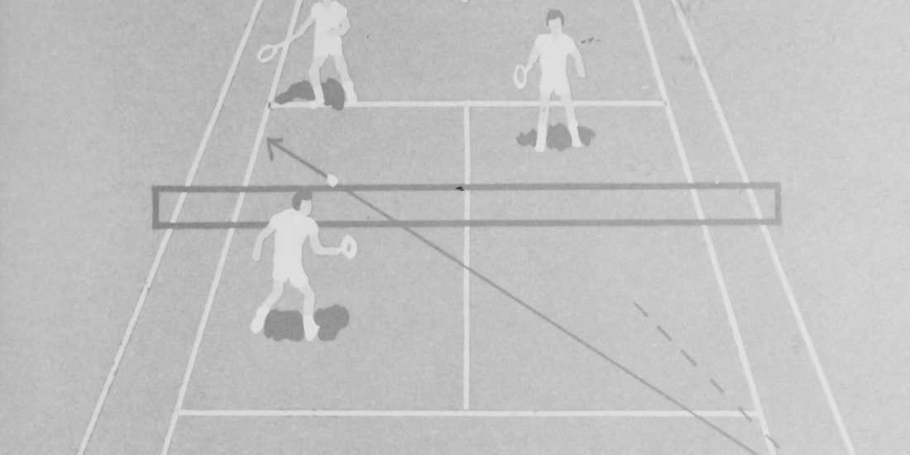
Ý tưởng, dĩ nhiên, là buộc người giao bóng phải đánh bóng lên để bạn hoặc đồng đội có thể tiến vào lưới và vô-lê bóng xuống. Một cú đỡ chéo sân tốt vào chân người giao bóng thường sẽ buộc người giao bóng phải thử một cú bán vô-lê—một cú đánh thực hiện ngay sau khi bóng nảy, và là cú khó đánh tốt. Cú đỡ kém hiệu quả nhất của bạn là dọc biên (xem Hình 4-6). Đồng đội của người giao bóng không chỉ đứng ngay đó chờ vô-lê cú đánh của bạn, mà bạn còn phải đánh bóng cao hơn so với một cú đỡ chéo sân (lưới thấp hơn ở giữa sân sáu inch so với ở cột lưới). Do đó, khả năng là bóng vẫn đang bay lên khi tới chỗ đồng đội của người giao bóng. Nếu anh ta có chút kỹ năng nào, anh ta sẽ dứt điểm bóng ngay. Nếu quả giao bóng vào góc thuận tay của ô bên phải, người
The idea, of course, is to force the server to hit up so that you or your partner can move into the net and volley the ball down. A good crosscourt return to the server's feet will often force the server into attempting a half volley—a shot hit immediately after the ball has bounced, and one that is difficult to hit well. Your least effective return is down the line (see Figure 4-6). Not only will the server's partner be right there waiting to volley your shot, but you will also have to hit the ball higher than for a crosscourt return (the net is six inches lower at the center than at the net posts). Thus, chances are the ball will still be rising as it reaches the server's partner. If he has any skill he'll put the ball away promptly. If the serve is to the forehand corner of the deuce court, the
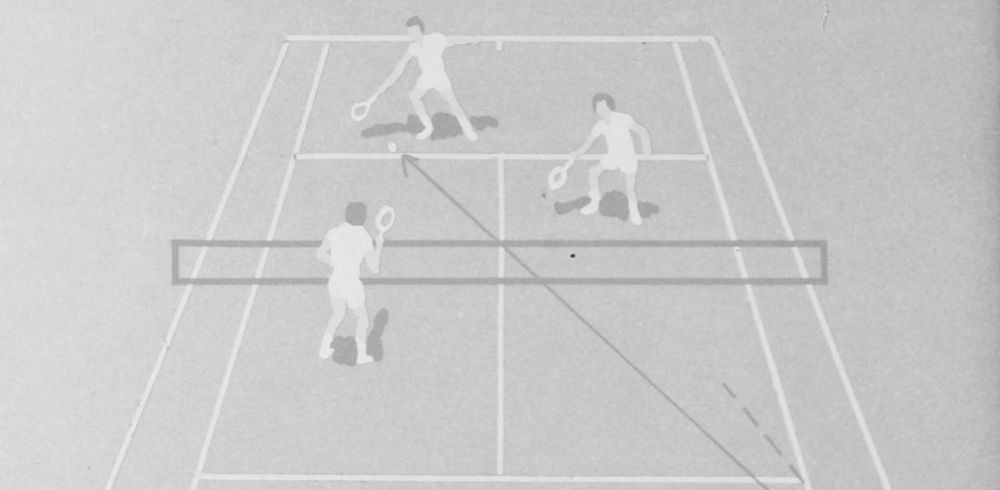
người đỡ giao bóng có nhiều lựa chọn đỡ bóng hơn. Cú đỡ thuận tay dọc biên trở nên dễ hơn vì ở góc độ này cơ hội đánh bóng qua người đứng lưới cao hơn, và vì người đỡ giao bóng thường sẽ đánh một cú thuận tay mạnh hơn (xem Hình 4-7). Tuy nhiên, cú đỡ hay nhất vẫn là cú đánh chéo sân ra hành lang đối diện (xem Hình 4-8). Đây là cú gây cho người giao bóng nhiều rắc rối nhất. Đáng tiếc, một cú thuận tay chéo sân từ hành lang có nhiều thời gian bay hơn một cú trái tay nhẹ tay từ gần giữa sân, nên nguy cơ bị cướp bóng thành công cao hơn. Một cú đỡ gần như hiệu quả tương đương là cú đánh chéo sân thấp vào chân người giao bóng đang tiến lên (xem Hình 4-9). Vì cú này
receiver has a wider range of possible returns open to him. The forehand down-the-line return becomes easier because there is a greater chance of passing the net player at this angle, and because the receiver will usually be hitting a stronger forehand return (see Figure 4-7). The best return, however, is still the crosscourt shot to the opposite alley (see Figure 4-8). This is the shot that will give the server the most trouble. Unfortunately, a forehand crosscourt from the alley has more time to travel than a backhand dink from close to the center of the court, so there is more risk of a successful poach. An almost equally effective return is the low crosscourt drive to the feet of the approaching server (see Figure 4-9). Because this
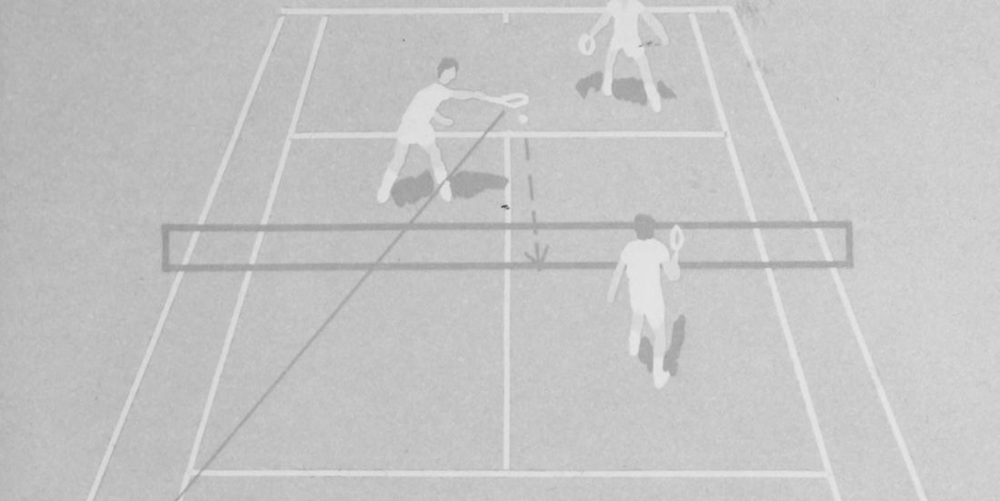
cú này cũng mở ra cho một người cướp bóng giỏi và bóng phải được đánh mạnh để tới được vạch giao bóng đối diện, bạn nên đánh một quả bóng thấp, nhanh, sẽ khó cướp.
shot is also open to a good poacher and the ball has to be hit hard to reach the opposing service line, you should hit a low, fast ball that will be difficult to poach.
Đỡ Giao Bóng Ở Ô Bên TráiReturning Serve in the Ad Court
Nếu quả giao bóng vào góc trái tay của ô bên trái, cú đỡ tốt nhất của bạn là đánh một cú trái tay tấn công vào chân người giao bóng (xem Hình 4-10). Dùng một chút xoáy lên để đưa bóng xuống trong sân đối thủ và giữ bóng thấp qua lưới để ngăn người đứng lưới cướp bóng.
If the serve is to the backhand corner of the ad court, your best return is to hit a backhand drive to the feet of the server (see Figure 4-10). Use a little topspin to bring the ball down in your opponent's court and keep the ball low over the net to discourage the net player from poaching.
Một lựa chọn thay cho cú đỡ tấn công là cú bạt nhẹ ra hành lang đối diện (xem Hình 4-11). Nếu bạn có cú trái tay cắt bóng tốt, đây
An alternative to the drive return is the chip shot to the opposite alley (see Figure 4-11). If you have a good sliced backhand, this is
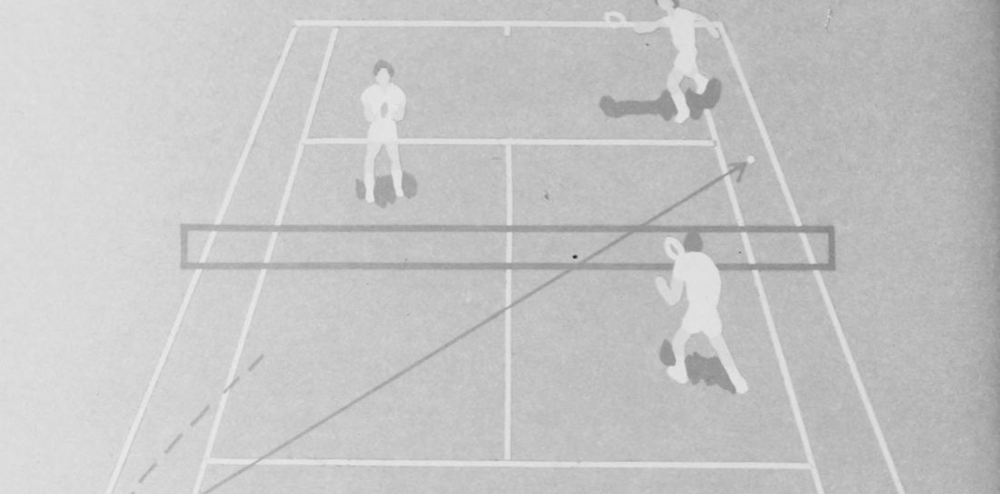
không phải là cú đánh khó. Nhiều tay vợt người Úc, như John Newcombe và Ken Rosewall, dùng cú đỡ cắt bóng hoặc bạt nhẹ này cả trong đánh đơn lẫn đánh đôi. Người giao bóng không chỉ phải chạy hết sức để tới được bóng, mà một tay vợt thuận tay phải còn bị buộc phải đánh một cú vô-lê trái tay khó nhằn hoặc thậm chí là một cú bán vô-lê. Trừ khi người đứng lưới ở quá gần giữa sân, cú đỡ trái tay dọc biên là quá mạo hiểm với phần lớn người chơi (xem Hình 4-12). Một cú đỡ như vậy chẳng khác nào tự dâng bóng cho người đứng lưới cắt. Nhưng nếu bạn có cú trái tay đặc biệt tốt, thỉnh thoảng bạn có thể thử cú trái tay dọc biên như một vũ khí bất ngờ. Khi quả giao bóng vào bên thuận tay của bạn ở ô bên trái, lựa chọn góc độ của bạn ít hơn, nhưng khả năng tốt nhất là đánh thẳng tới
not a difficult shot. Many Australian players, such as John Newcombe and Ken Rosewall, use this slice or chip return in both singles and doubles play. Not only does the server have to run hard to get to the ball, but a right-handed player will be forced to hit a tough backhand volley or even a half volley. Unless the net player is too close to the center of the court, the down-the-line backhand return is too risky for most players (see Figure 4-12). Such a return is simply asking to be cut off by the net player. But if you have a particularly good backhand, you might try the backhand down the line occasionally as a surprise weapon. When the serve is to your forehand side in the ad court, your choice of angles is smaller, but the best possibilities are directly to
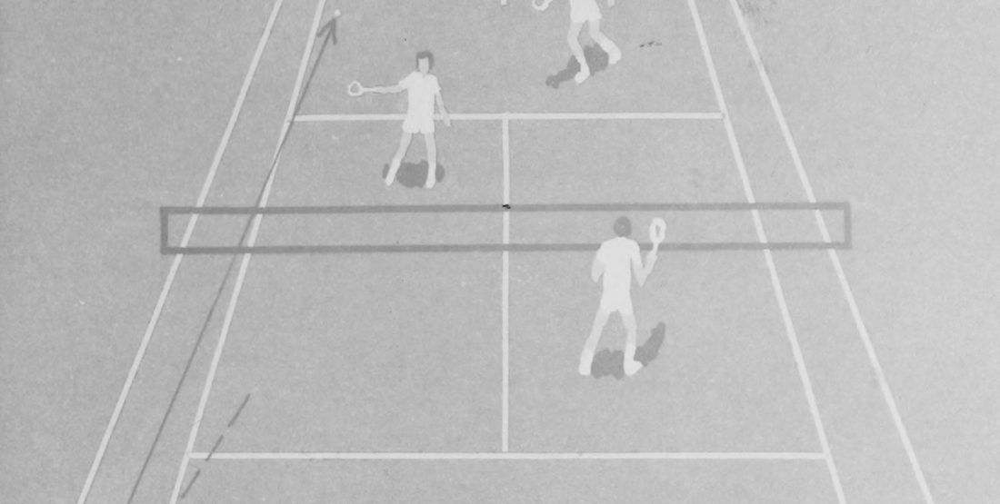
chân người giao bóng (xem Hình 4-13) hoặc ra hành lang (xem Hình 4-14). Tôi không nghĩ rằng bạn nên thử cú đỡ dọc biên từ vị trí giữa sân trừ khi người đứng lưới lệch vị trí nghiêm trọng hoặc hoàn toàn kém cỏi. Hãy nhớ rằng nguyên tắc chung khi đỡ giao bóng là đánh bóng tới phần sân không được bảo vệ. Nếu một khoảng trống lớn xuất hiện, bạn có thể bỏ qua những gợi ý trên; hãy đánh bóng tới phần sân không được bảo vệ. Dĩ nhiên, bạn nên sẵn sàng cho cái bẫy đã được dàn dựng, khi đối thủ cố ý để một khoảng trống lớn cho bạn đánh vào rồi di chuyển để bịt lỗ hổng ngay khi bạn đánh bóng. Nếu điều đó xảy ra với bạn, hãy ghi nhớ tình huống đó. Lần tới khi một lỗ hổng lớn mở ra cho cú đỡ của bạn
the feet of the server (see Figure 4-13) or to the alley (see Figure 4-14). I do not think that you should attempt the down-the-line return from the center position unless the net player is badly out of position or completely incompetent. Remember that the general rule for returning serve is to hit to the unprotected part of the court. If a large open space presents itself, you can ignore the foregoing suggestions; hit the ball to the unprotected part of the court. Of course, you should be ready for the prepared trap where your opponents deliberately leave a large open space for you to hit into and then move to cover the hole just as you hit the ball. If that happens to you, file the situation away in your memory. The next time a large hole opens up for your return
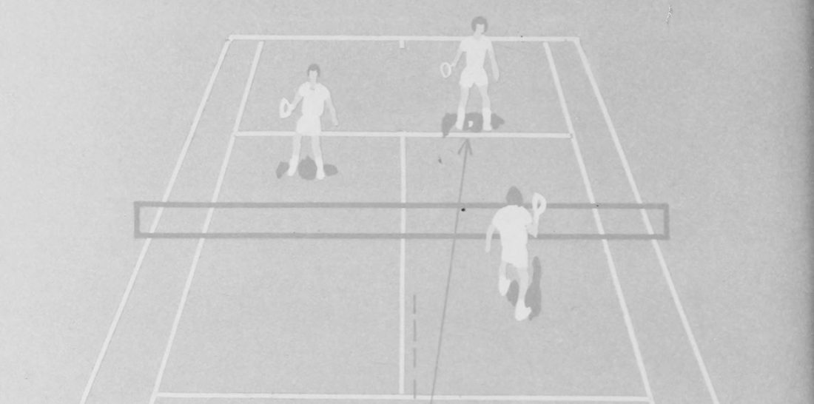
Bạn phải dùng cái đầu khi đỡ giao bóng. Nếu một cú đỡ vào bên vô-lê thuận tay của đối phương tạo ra một cú trả bóng yếu, thì đó chính là cú nên thử lại. Hãy ghi nhớ tình huống đó và dùng lại sau này trong trận. Suốt trận đấu, bạn nên quan sát phản ứng của đối phương trước các kiểu đỡ giao bóng khác nhau của mình và lên kế hoạch cho phù hợp. Cũng như người giao bóng sẽ cố tấn công những cú đánh yếu hơn của bạn, bạn có thể dùng các cú đỡ giao bóng để tấn công những điểm yếu mới phát hiện của đối phương.
You must use your head in returning serve. If a return to your opponent's forehand volley produces a weak reply, then that is the shot to try again. Remember the situation and use it again later in the match. Throughout the match you should watch your opponents’ reactions to your various returns and make your plans accordingly. Just as a server will try to attack your weaker strokes, you can use your service returns to attack your opponents’ newly discovered weaknesses.
Bóng Bổng Như Một Cú Đỡ Giao BóngThe Lob as a Return of Serve
Ngày nay bóng bổng ít được dùng trong đánh đôi chuyên nghiệp, chủ yếu vì các tay vợt hàng đầu thường có khả năng phán đoán tuyệt vời và
The lob is seldom used today in professional doubles play, mainly because the top players usually have excellent anticipation and
một quả giao bóng xuống giữa ở ô bên trái. những cú đập bóng trên đầu đầy uy lực. Tuy nhiên, tôi cho rằng bóng bổng có chỗ đứng xác đáng trong lối chơi của người chơi bình thường để đỡ giao bóng. Tôi sẽ bàn kỹ hơn về bóng bổng ở Chương 7, nhưng sau đây là vài gợi ý về việc dùng cú đánh này để đỡ giao bóng. Khi người đỡ giao bóng bị kéo ra thật rộng bởi một quả giao bóng xoáy tốt, thường thì cách duy nhất khả thi là một cú bóng bổng phòng ngự cao và sâu (xem Hình 4-15). Nếu người đỡ giao bóng phải chật vật chạy đỡ bóng, cơ hội đánh thành công một cú drive là rất mong manh, nên trong tình huống đó bóng bổng là cú đánh có xác suất thành công cao hơn. Một cú bóng bổng phòng ngự sâu không chỉ buộc đội đối phương phải rời xa lưới, mà còn cho người đỡ giao bóng đủ thời gian để hồi phục và quay lại vị trí che phần sân của mình. Một cú bóng bổng tấn công hơn, tức là cú chỉ vừa vượt qua
a down-the-center serve in the ad court. powertul overheads. However, | think the lob has a definite place in the average player's game for returning serve. I'll discuss lobbing in more detail in Chapter 7, but here are a few pointers on using the stroke for returning serve. When the receiver is pulled wide by a good spin serve, often the only possible answer is a high and deep defensive lob (see Figure 4-15). lf the receiver has to scramble for the ball, the chances of hitting a succesful drive are pretty slim, so the lob is a higher percentage shot in that situation. A deep defensive lob will not only force the opposing team away from the net, but it will also give the receiver enough time to recover and get back into position to cover his half of the court. A more offensive lob, that is, one that just clears the out-
cây vợt vươn dài của đối phương, rất hữu ích khi đối phương đang dồn lên lưới hoặc khi người đứng lưới mắc lỗi tiến quá gần lưới (xem Hình 4-16). Ở đây, bạn có thể đánh một cú bóng bổng thấp để giữ người đứng lưới tránh xa lưới. Tuy nhiên, bóng bổng tấn công là cú đánh có xác suất thành công khá thấp với phần lớn người chơi, nên tôi chỉ khuyên dùng khi bạn có cảm giác bóng tốt hoặc đang dẫn trước khá xa. Nếu cú bóng bổng tấn công của bạn ngắn, đối phương sẽ đập bóng trả lại và gần như chắc chắn dứt điểm.
stretched racquet of your opponent, is useful when your opponents are crowding the net or when the net man makes a mistake in coming too close to the net (see Figure 4-16). Here, you can hit a low lob to keep the net player away from the net. However, the offensive lob is a relatively low percentage shot for most players, so I'd recommend it only if you have good touch or are well ahead. If your offensive lob is short, your opponent will smash the ball back for an almost certain winner.
Đồng Đội Của Người Đỡ Giao BóngThe Receiver's Partner
Khi đồng đội của bạn đỡ giao bóng, bạn không chỉ là người đứng ngoài cuộc. Nhiệm vụ của bạn là bảo đảm độ che phủ sân dựa trên
When your partner receives serve, you are not merely an innocent bystander. Your job is to provide court coverage based on the
hành động của đồng đội bạn. Điều này đòi hỏi bạn phải hiểu rõ phản ứng của đồng đội mình trước các kiểu giao bóng khác nhau và phải trao đổi tốt trước cũng như sau mỗi điểm. Khi bạn ở vị trí đứng ở vạch cuối sân hay tiến lên lưới, bạn nên quan sát quả giao bóng nảy lên và sẵn sàng di chuyển ngay khi đồng đội bạn chạm bóng. Ví dụ, nếu khi đỡ giao bóng, đồng đội bạn đánh bóng chéo sân, bạn nên bắt đầu lệch dần sang hướng đó (xem Hình 4-17). Bạn sẽ che phía hành lang còn đồng đội bạn sẽ che phía giữa sân. Ở lưới, bạn nên giữ nguyên vị trí cho đến khi bóng qua lưới. Nếu bóng thấp và đồng đội bạn đang tiến lên lưới, thì
actions of your partner. This calls for a good knowledge of your partner's reactions to various types of serves and good communication before and after each point. When you are in position either at the baseline or up at the net, you should watch the served ball bounce and be ready to make your move as soon as your partner hits the ball. For example, if, when receiving, your partner hits the ball crosscourt, you should begin to drift over in that direction (see Figure 4-17). You will cover toward the alley and your partner will cover toward the center of the court. At the net, you should hold your position until the ball clears the net. If the ball is low and your partner is advancing to the net, then
bạn có thể tiến lên để ở vị trí kiểm soát hơn, sẵn sàng vô-lê đưa bóng xuống với bất kỳ quả bóng nào đang nổi lên (xem Hình 4-18). Nếu đồng đội bạn đứng lại phía sau với cú đỡ giao bóng của mình, hãy sẵn sàng lùi lại để che một cú bóng bổng qua đầu bạn. Người đứng lưới cũng nên động viên người đỡ giao bóng. Nếu người đỡ giao bóng đang gặp vấn đề với cú đỡ giao bóng của mình, có thể cần một hai phút trao đổi và góp ý để giúp anh ta trở lại đúng hướng. Thường thì đồng đội có thể nhận ra những vấn đề mà bản thân người chơi đang dồn hết sức tập trung vào quả giao bóng có thể không thấy rõ. Và nếu bạn, với tư cách người đứng lưới, đang mắc lỗi, hãy bàn với đồng đội bạn – anh ta có thể điều chỉnh cú đỡ giao bóng của mình để tránh đặt bạn vào tình huống bạn không xử lý nổi.
you can move up to be in a more commanding position, ready to volley down on any rising ball (see Figure 4-18). If your partner stays back on his return, be ready to move back to cover a lob over your head. The net player should also lend encouragement to the receiver. If the receiver is having problems with his return of serve, a moment or two of consultation and advice may be necessary to get him back on track. Often a partner can spot problems that may not be obvious to a player concentrating desperately on the serve. And, if you, as the net player, are making errors, discuss them with your partner—he may be able to alter his returns to avoid putting you in a situation you cannot cope with.
Vài Lời CuốiSome Last Words
Khi đỡ giao bóng, hãy luôn đưa được bóng trở lại nhưng phải làm sao để tạo ra những tình huống mà bạn là người chiếm ưu thế. Mục tiêu của một người đỡ giao bóng giỏi là phá được giao bóng của đối phương, và bạn chỉ làm được điều đó bằng cách làm cán cân nghiêng về phía mình. Cũng hãy nhớ rằng những cú đánh xác suất thấp sẽ không mang về cho bạn nhiều điểm khi đỡ giao bóng. Người mắc ít lỗi nhất sẽ thắng nhiều điểm nhất. Hãy dùng cú đỡ giao bóng như một cú dọn đường giúp bạn thắng điểm bằng cú đánh kế tiếp, hoặc thậm chí trước hai ba cú đánh nữa. Nhưng trên hết, hãy đưa được bóng trở lại!
When you return serve, always get the ball back but do so to create situations where youre the favorite. The objective of a competent receiver is to break the opponent's serve and you can do that only by tipping the scales in your favor. Remember, too, that low percentage shots will not win you many points on return of serve. The player who commits the least number of errors will win the most points. Use the return of serve as a setup shot that will help you win the point with your next stroke or even two or three shots ahead. But, above all, get that ball back!
ge Ca» wey gk ae et Raber resign «ron ieee rane ED Co é are Le, i an gated aa seamed rc
Vì Sao Phải Lên Lưới? Lối đánh trên lưới là chìa khóa để thắng trong đánh đôi. Khi mọi yếu tố khác đại khái ngang bằng nhau, đội thường xuyên lên lưới sẽ thắng trận. Tôi từng thấy một vài đội đánh đôi thường xuyên thắng nhờ chơi từ vạch cuối sân, nhưng trình độ của họ khá thấp. Một sự thật đơn giản của đánh đôi là đội ở trên lưới sẽ có thể đánh bóng hướng xuống so với các cú đánh của đối phương. Nếu bạn có thể đánh bóng vào chân đối phương, bạn sẽ hoặc thắng điểm ngay hoặc buộc họ mắc lỗi. Đơn giản chỉ có vậy. Ở trên lưới, bạn sẽ đánh bóng hướng xuống còn đối phương sẽ đánh bóng hướng lên. Tuy nhiên tôi không gợi ý rằng bạn phải lao lên lưới sau mỗi quả giao bóng hay cú đỡ giao bóng. Những chiến thuật đó phù hợp hơn với các tay vợt chuyên nghiệp. Đánh đôi là chuyện tạo ra những tình huống khiến đội bạn trở thành người được đánh giá cao hơn để thắng ở cú đánh tiếp theo. Vì vậy lối chơi của bạn nên nhắm tới việc lên lưới và trụ lại đó cho đến khi thắng điểm. Nếu bạn không có kỹ năng để chơi một trận mạnh mẽ, tấn công, hãy đứng lại phía sau cho đến khi cơ hội lên lưới xuất hiện. Khi cơ hội đến, hãy nắm lấy. Tôi sẽ sớm chỉ cho bạn những cơ hội cần tìm. Nhiều người mới chơi thực sự sợ lối đánh trên lưới. Những người như vậy có thể chưa bao giờ thử đánh trên lưới, hoặc nếu có thì họ có thể đã đánh hỏng nhiều cú vô-lê hơn số cú thành công. Sự tự tin vào khả năng đánh trên lưới của bạn đến từ kinh nghiệm. Điều đó nghĩa là phải tập luyện các cú vô-lê (xem Chương 10) và tập tiến lên lưới. Nếu bạn sợ lưới, tôi chỉ có thể khuyên bạn hãy tập cho đến khi tự tin vào cú vô-lê của mình, rồi tập dượt việc lên lưới với một người bạn tập thông cảm. Hãy nhớ đánh vô-lê bằng động tác ngắn, đẩy tới. Đương nhiên, nhịp độ chơi trên lưới nhanh hơn một loạt đánh bóng kéo dài từ vạch cuối sân, nên đánh trên lưới đòi hỏi khả năng phán đoán tốt, phản xạ nhanh và di chuyển nhanh nhẹn. Đó là những khả năng có thể cải thiện nhờ tập luyện nhưng chúng có thể khác nhau rõ rệt... Hãy đánh trên lưới tùy theo khả năng của chính bạn. Nhiều tay vợt câu lạc bộ lớn tuổi thấy rằng họ thích một lối chơi cơ bản là từ vạch cuối sân, chỉ thỉnh thoảng đột phá lên lưới. Tuy nhiên, họ nhận ra rằng mình nên lên lưới khi cơ hội xuất hiện và họ làm điều đó thành công.
Why Go to the Net? Net play is the key to winning doubles. All other things being more or less equal, the team that consistently goes to the net will win the match. I have seen a few doubles teams who consistently won by playing from the baseline, but whose standard of play was pretty low. It's a simple fact of doubles life that the team at the net will be ‘able to hit down on their opponents’ shots. If you can hit shots to your opponents’ feet, you'll either win the point outright or force them to make errors. It’s as simple as that. At the net, you will be hitting down and your opponents will be hitting up. I'm not suggesting, though, that you rush the net after every serve or return of serve. Those tactics are more suited to professional tennis players. Doubles play is a matter of setting up situations that will make your team the favorites to win on a subsequent shot. So your play should be aimed at getting to the net and staying there until you win the point. If you do not have the skills to play a strong, aggressive game, stay back until the opportunity to go to the net presents itself. When the opening occurs, go for it. I'll show you shortly the opportunities to look for. Many novice players have a genuine fear of playing at the net. Such players may never have tried net play or if they have, they may have missed more volleys than they've hit. Confidence in your ability to play at the net comes with experience. That means practicing your volleys (see Chapter 10) and approaching the net. If you have a fear of the net, I can only suggest that you practice until you are confident of your volley and then rehearse going to the net with a sympathetic practice partner. Remember to hit your volleys with a short, punching motion. Naturally, the pace of play at the net is faster than a drawn-out baseline rally, so net play calls for good anticipation, fast reactions and quick movement. Those are abilities that can be improved with practice but they can differ markedly from person to person. If your reactions are a little slow and you are not as fast on your feet as you used to be, don't expect to develop a good net game in a
vài tuần. Hãy chơi trên lưới theo khả năng của chính bạn. Nhiều tay vợt câu lạc bộ lớn tuổi thấy rằng họ thích một lối chơi cơ bản là từ vạch cuối sân, chỉ thỉnh thoảng đột phá lên lưới. Tuy nhiên, họ nhận ra rằng mình nên lên lưới khi cơ hội xuất hiện và họ làm điều đó thành công.
couple of weeks. Play at the net according to your own abilities. Many older club players find that they enjoy what is basically a baseline game with only occasional forays to the net. However, they do realize they should go to net when the opening presents itself and they do so successfully.
Theo Giao Bóng Lên LướiFollowing Your Serve to the Net
Trừ khi bạn đang chơi trên một mặt sân rất chậm, con đường đơn giản nhất lên lưới là theo quả giao bóng của mình. Đồng đội của bạn lúc đó đã ở đúng vị trí lưới, và động tác giao bóng của bạn nhiều khả năng sẽ đưa bạn bắt đầu di chuyển về phía trước. Đồng thời, người đỡ giao bóng sẽ đứng lại ở vạch cuối sân nên không thể tiến lên trừ khi anh ta đánh một cú đỡ buộc người giao bóng phải ở lại phía sau.
Unless you are playing on a very slow court, the simplest way to the net is to follow your serve. Your partner will already be in the proper net position and your service motion will, most likely, get you started moving forward. At the same time, the receiver will be back on the baseline and so will not be able to move up unless he hits a return that keeps the server back.
5. CHƠI Ở LƯỚI
Trong hầu hết các tình huống, bạn nên theo quả giao bóng thứ nhất vào lưới để có thể vô-lê quả đỡ giao bóng ngay tại hoặc trước vạch giao bóng (xem Hình 5-1). Hãy chạy thật nhanh để tiến được xa nhất có thể trước khi người đỡ giao bóng đánh bóng. Khi người đỡ giao bóng đánh bóng, dừng lại một khoảnh khắc, phán đoán bóng đi đâu rồi tiến chéo về phía đó để vào vị trí đánh quả vô-lê đầu tiên (xem Hình 5-2). Dĩ nhiên tôi giả định rằng người đỡ giao bóng đỡ chéo sân về phía người giao bóng. Nếu người đỡ giao bóng dại dột đỡ dọc biên về phía đồng đội của người giao bóng, thì bạn cứ tiếp tục tiến vào lưới và để đồng đội lo quả đỡ đó. Nói chung, khi bạn đánh quả vô-lê đầu tiên, bạn sẽ chưa ở vị trí vô-lê tốt nhất, tức khoảng giữa vạch giao bóng và
Under most situations, you should follow your first serve up to - the net so you can volley the return of serve either on or in front of the service line (see Figure 5-1). Run rapidly to get as far as you can before the receiver hits the ball. As the receiver hits the ball, pause momentarily, decide where the ball is going and advance diagonally toward that side to get into position to hit your first volley (see Figure 5-2). I'm assuming, of course, that the receiver returns serve crosscourt toward the server. If the receiver is foolish enough to return serve down the line at the server's partner, then you can continue toward the net and let your partner take care of the return. Generally, when you hit your first volley you will not be in the best volleying position about halfway between the service line and
lưới. Bạn sẽ ở gần vạch giao bóng. Trong trường hợp đó, quả vô-lê đầu tiên của bạn sẽ không phải là một cú nhằm ghi điểm. Hãy bằng lòng với việc đánh một quả vô-lê chắc chắn về phía chân người đỡ giao bóng. Điều đó sẽ buộc người đỡ giao bóng phải đánh bóng lên. Sau đó bạn sẽ có thể tiến gần lưới hơn để dứt điểm bằng quả vô-lê thứ hai của mình (xem Hình 5-3). Quả vô-lê đầu tiên hầu như luôn nên là một cú dọn đường. Bạn thậm chí có thể phải đánh vài quả vô-lê trước khi tiến đủ gần lưới để đánh bổng xuống dứt khoát vào một trong các cú đánh của đối phương. Trừ khi bạn có quả giao bóng thứ hai rất tốt, tôi không khuyên bạn vào lưới sau quả đó. Hãy bằng lòng với việc đưa quả giao bóng vào sân, sâu nếu có thể, và chuẩn bị cho quả đỡ
the net. You'll be close to the service line. In that case, your first volley will not be an attempt to hit a winning shot. Be content with hitting a solid volley back toward the receiver's feet. That will force the receiver to hit the ball up. You will then be able to get closer to the net so you can hit a winner off your second volley (see Figure 5-3). The first volley should almost always be a setup shot. You may even have to hit a couple of volleys before you can get close enough to the net to hit down decisively on one of your opponent's shots. Unless you have a very good second serve, I would not advocate going in after it. Content yourself with getting the serve in, with good depth, if you can, and prepare yourself for the return of
giao bóng. Nếu quả đỡ đi chéo sân về phía bạn, chỉ cần đưa bóng trả lại sâu một lần nữa. Bạn nên chờ một quả bóng ngắn, tức quả nảy gần vạch giao bóng hơn là gần vạch cuối sân (xem Hình 5-4). Tiến vào đánh quả bóng ngắn đó, đánh một cú lên lưới sâu về phía đối phương rồi tiếp tục tiến lên một vị trí vô-lê tốt gần lưới hơn (xem Hình 5-5). Lúc này, nếu một trong các đối thủ của bạn đánh một quả bóng đang lên, bạn hoặc đồng đội có thể vô-lê dứt điểm. Phải mất hơi lâu hơn mới thắng được điểm từ quả giao bóng thứ hai và điểm đó có thể cần chút toan tính. Tuy nhiên, không có lý do gì để việc mất quả giao bóng thứ nhất lại đặt bạn vào thế bất lợi lớn. Hãy luyện tập cách toan tính với quả giao bóng thứ hai và bạn vẫn có thể thắng điểm. Hãy nhớ rằng mục tiêu của cuộc chơi là thắng các game giao bóng của mình.
serve. If the return is crosscourt to you, just get the ball back deep - again. You should wait for a short ball, one that bounces closer to the service line than to the baseline (see Figure 5-4). Move in on the short ball, hit an approach shot deep to your opponent and continue on up to a good volleying position closer to the net (see Figure 5-5). Now, if one of your opponents hits a rising ball, you or your partner can volley the ball away for a winner. It takes a little longer to win the point off a second serve and the point may take a little planning. However, there is no reason why losing your first serve should put you at a big disadvantage. Work on your planning with the second serve and you can still win the point. Remember the name of the game is to win your service games.
Theo quả đỡ giao bóng vào lưới Vào lưới là công việc khó khăn hơn nhiều đối với người đỡ giao bóng so với người giao bóng. Khi đỡ giao bóng, người giao bóng là người điều khiển thế trận nên bạn phải chờ đúng cơ hội để ra tay. Điều đó không có nghĩa là bạn không nên toan tính đôi chút để tạo ra tình huống thích hợp cho việc vào lưới và kết thúc điểm. Cũng như người giao bóng muốn thắng các game giao bóng của mình, bạn, với tư cách người đỡ giao bóng, sẽ muốn bẻ gãy game giao bóng đó. Vào lưới sẽ giúp bạn thắng điểm hoặc ít nhất buộc đối phương phải mắc lỗi. Như tôi đã nhấn mạnh ở Chương 4, cú đỡ giao bóng hiệu quả nhất là đánh chéo sân vào hành lang của người giao bóng. Điều đó thường buộc người giao bóng phải chạy đuổi bóng và đánh một cú trả bóng tương đối yếu (xem Hình 5-6). Nếu quả đỡ ngắn, bạn sẽ có cơ hội lý tưởng
Following Your Return of Serve to the Net Getting to the net is a much tougher job for the receiver than for the server. When you are receiving, the server is calling the shots so you must wait for the right opportunity to make a move. That's not to say that you shouldn't do a little planning to set up the right situation for getting to the net and closing out the point. Just as the server wants to win his own service games, you, as the receiver, will want to break that service. Going to the net will help you win points or at least force your opponents into committing errors. As Iemphasized in Chapter 4, the most effective return of serve is crosscourt into the server's alley. That will often force the server to scramble for the ball and hit a relatively weak return (see Figure 5-6). If the return is short, you will have an ideal oppor-
để tiến vào đánh quả bóng đó, có lẽ đánh trả về phía chân đối thủ rồi tiếp tục tiến lên lưới (xem Hình 5-7). Khi đã ở lưới, hãy tìm quả bóng đang lên và vô-lê bổng xuống dứt điểm, hoặc cố buộc một trong các đối thủ mắc lỗi. Nghe có vẻ khá đơn giản, nhưng không phải vậy. Đối thủ của bạn cũng đang cố thắng điểm, nên bạn sẽ phải đưa ra những quyết định trong tích tắc, vừa đoán trước động thái của đối phương vừa quyết định động thái của mình. Sẽ tốt cho lối chơi của bạn nếu bạn có sẵn trong đầu một kế hoạch như kế hoạch tôi vừa mô tả (và cả trong đầu đồng đội bạn nữa). Trừ khi đối mặt với một người giao bóng rất yếu, tôi không nghĩ bạn nên cố theo quả đỡ giao bóng vào lưới. Nhưng nếu người giao bóng có quả giao bóng thứ hai yếu, chỉ rơi vào ô giao bóng, thì nhất định hãy theo quả đỡ của bạn vào đó. Nếu người giao bóng giao lỗi
tunity to come in on the ball, hitting it back to your opponent's feet perhaps and then continuing on up to the net (see Figure 5-7). Once at the net, look for the rising ball and volley it down for a winner, or try to force an error by one of your opponents. All that may sound rather simple, but it isn't. Your opponents are also trying to win the point, so you will have to make some split-second decisions in anticipating your opponents’ moves and deciding your own. It will help your game if you have a plan like the one I've just described in your mind (and in your partner's, too). Unless you are facing a very weak server, I don't think you should try to follow your return of serve up to the net. But if the server has a weak second serve that just drops into the service box, by all means try to follow your return up there. If the server faults
quả giao bóng thứ nhất, hãy tiến vào hai hoặc ba bước trong vạch cuối sân. Khi quả giao bóng đến, tiến vào và đón bóng sớm (xem Hình 5-8). Rất có thể người giao bóng sẽ ở lại phía sau trước quả giao bóng thứ hai yếu, nên bạn nên đỡ bóng sâu về phía chân người giao bóng để giữ anh ta ở vạch cuối sân (xem Hình 5-9). Lúc này bạn có thể tiến lên lưới và sẵn sàng đánh một quả vô-lê dứt điểm. Khi người giao bóng ở lại phía sau, bạn cũng có thể đánh một cú cắt bóng ngắn buộc người giao bóng phải chạy lên đánh trả. Rất có thể cú trả này sẽ yếu nên bạn sẽ có thể vô-lê bổng xuống dứt điểm. Mục tiêu của bạn khi đỡ giao bóng là thay đổi thế cân bằng lợi thế, vốn ban đầu thuộc về người giao bóng. Nếu người giao bóng không tận
on his first serve, move in two or three steps inside the baseline. When the serve comes, move in and take the ball early (see Figure 5-8). Chances are the server will stay back behind a weak second serve, so you should return the ball deep to the server's feet to keep him at the baseline (see Figure 5-9). Now you can approach the net and be ready to hit a winning volley. When the server stays back, you can also hit a short chip shot so that the server is forced to run up to make a return. Chances are this return will be weak so you will be able to volley down for a winner. Your objective in returning serve is to alter the balance of power which, initially, is with the server. If the server does not take
dụng tình huống này bằng cách vào lưới, thì bạn, với tư cách người đỡ giao bóng, nên trở thành bên tấn công vì thế trận giờ đã cân bằng. Nếu bạn có thể vào lưới và buộc đội giao bóng phải ở lại phía sau, thì thế lợi đã nghiêng về phía bạn và bạn nên thắng điểm đó.
advantage of this situation by coming to the net, then you, as the ' receiver, should become the aggressor since the equation is now even. If you can get to the net and force the serving team to stay back, the balance of power is now in your favor and you should win the point.
Cú Vô-LêThe Volley
Chơi ở lưới đòi hỏi rất nhiều ở bất kỳ tay vợt nào, dù bạn là một tay vợt chuyên nghiệp có hạt giống hay chỉ là người chơi cuối tuần. Nó đòi hỏi phản xạ nhanh và một cú vô-lê đã được luyện tập. Có thể lao vào lưới cũng vô ích nếu bạn không xử lý được bóng khi đã tới đó, hoặc vì phản xạ quá chậm hoặc vì cú vô-lê của bạn chưa đạt yêu cầu.
Net play is very demanding of any tennis player, whether you are a seeded professional or a weekend sport. It calls for some rapid reactions and a practiced volley. Being able to rush the net is no good if you can't handle the ball once you get there, either because your reactions are too slow or your volleying is not up to scratch.
Bạn phải vô-lê tự tin mới thắng được điểm ở lưới. Tôi sẽ không dạy bạn cách đánh vô-lê trong cuốn sách này — chỉ cần nói rằng các cú vô-lê của bạn nên ngắn, gọn và dứt khoát. Nếu bạn không thể vô-lê tự tin, có rất nhiều sách dạy quần vợt sẵn sàng hướng dẫn bạn. Tốt hơn nữa, vài buổi học với một giáo viên giỏi chắc chắn sẽ giúp bạn tiến bộ. Hoặc bạn chỉ cần dành nhiều thời gian hơn để luyện vô-lê trong các buổi tập thường lệ hoặc trong lúc khởi động. Khi vô-lê ở lưới, mục tiêu của bạn là giữ bóng thấp và buộc đối phương phải đánh bóng lên. Điều này có nghĩa là bạn không nhất thiết lúc nào cũng phải đánh những quả vô-lê mạnh. Dĩ nhiên sẽ có
You must be able to volley confidently to win points at the net. I'm not going to tell you how to hit a volley in this book—suffice it to say that your volleys should be short, crisp strokes hit with authority. If you can't hit a volley confidently, plenty of tennis books are available to instruct you. Better still, a few lessons from a good teaching professional would surely help you improve. Or you might simply devote more time to practicing your volleys during regular practice sessions or during your warm-ups. When you volley at the net, your objective is to keep the ball low and force your opponents to hit up. This means that you do not have to hit hard volleys all the time. Of course, there will be
những cơ hội khi bên phía đối phương xuất hiện một khoảng trống và bạn có thể đánh một quả vô-lê sâu xuyên qua đó (xem Hình 5-10). Nhưng, đặc biệt khi cả bốn người chơi đều ở gần lưới, tôi khuyên bạn nên đánh vô-lê với sự kiểm soát và hướng đi chính xác. Hãy giảm chút tốc độ của quả vô-lê để nó rơi xuống khi bay qua lưới. Bằng cách đó, bạn sẽ buộc đối phương phải đánh bóng lên kể cả khi họ ở rất gần lưới. Thường thì bạn sẽ có thể giảm chút lực quả vô-lê rồi tiến gần lưới hơn để vô-lê dứt điểm quả tiếp theo (xem Hình 5-11). Bạn cũng có thể dùng kỹ thuật vô-lê nhẹ hơn này để tạo ra tình huống dứt điểm. Chẳng hạn, đánh một quả vô-lê nhẹ hơn, xéo góc, ra xa khỏi
opportunities when a hole appears on your opponents’ side and you can hit a deep volley through it (see Figure 5-10). But, especially when all four players are close to the net, I recommend that you hit your volleys with control and precise direction. Take a little speed off your volley so it drops as it crosses the net. That way, you Il force your opponents to hit up even if they are very close to the net. Frequently, you will be able to take a little off your volley and then move in closer to the net to volley the next ball away (see Figure 5-11). You can also use this softer volley technique to set up a winning situation. For example, hit a softer, angled volley away from your
đối thủ để buộc một người vào hành lang (xem Hình 5-12). Điều này có tác dụng tách hai đối thủ ra xa nhau và tạo ra một khoảng trống mà qua đó bạn hoặc đồng đội giờ có thể đánh một quả vô-lê sâu, mạnh hơn nhiều để dứt điểm. Chiêu chia để trị này là điều bạn nên dùng thường xuyên trong đánh đôi, nhưng đặc biệt ở lưới, nơi rất khó đưa bóng qua mặt đối phương. Cũng lưu ý rằng bạn thường có thể đánh một quả vô-lê xéo góc từ một quả bóng tương đối thấp, nhưng khi đó bạn sẽ buộc đối phương đánh trả một quả bóng đang lên mà bạn có thể dứt điểm dễ dàng hơn nhiều. Khi vô-lê ở lưới, không có quy tắc nào về việc ai đánh quả nào. Không có thời gian cho màn nhường nhau kiểu khách sáo — ai đánh được bóng thì đánh. Cũng không có thời gian để
opponents to force one player into the alley (see Figure 5—12). This will have the effect of separating your opponents and creating a hole through which you or your partner can now hit a deep, much harder volley for a winner. This divide-and-conquer trick is something you should often employ in doubles, but particularly so at the net where it's hard to get a ball past your opponents. Note, too, that you can often hit an angled volley off a relatively low ball, but you will then force a rising return you can put away much more easily. When you are volleying at the net, there are no rules for who takes which ball. There's no time for an Alphonse-and-Gaston routine—whoever can hit the ball takes it. Neither is there time for
một trong hai người hét lên "Của cậu!" Khi bạn nói xong câu đó và đồng đội đáp lại thì bóng đã bay qua người bạn và bạn đã mất điểm. Nếu bạn với được bóng, cứ tới đánh và thực hiện cú đánh đó. Đôi khi cả hai bạn có thể cùng lao vào một quả bóng và va vợt vào nhau. Ngay cả các tay vợt chuyên nghiệp cũng thỉnh thoảng gặp chuyện đó. Thà rằng cả hai cùng lao vào bóng còn hơn cả hai đều không cố đánh. Cách chữa duy nhất cho chuyện này là hiểu rõ đồng đội mình đủ để tin nhau rằng người này sẽ chủ động hoặc nhường nhịn khi cần. Những cặp đôi giỏi phát triển được một giác quan thứ sáu về việc đón bóng — tập luyện cùng nhau nhiều hơn và nhiều hơn nữa là câu trả lời duy nhất.
either one of you to shout “Yours!” By the time you've done that and “your partner has responded, the ball has passed you and you've lost the point. If you can get to the ball, get to it and make the shot. Occasionally, both of you may go for the same ball and you'll meet with a clashing of racquets. Even the pros do that from time to time. Better that you both go for the ball than neither of you try to hit it. The only cure for this sort of thing is to know your partner well enough so you can depend on each other to take the initiative or hold back as necessary. Good doubles teams develop a sixth sense about taking the ball—practice and more practice together is the only answer.
Bao SânCovering the Court
Khi chơi ở lưới, bạn phải nhanh chân để vào vị trí cho cú đánh tiếp theo và bao quát mọi khoảng trống lớn có thể xuất hiện bên phần sân của mình. Chìa khóa của việc bao sân là dịch chuyển theo bóng. Nếu bạn đánh bóng sang trái, thì cả bạn và đồng đội đều nên dịch chuyển sang trái (xem Hình 5-13). Nếu đối thủ đánh bóng khiến đồng đội bạn bị kéo ra tận hành lang, thì bạn cũng nên dịch chuyển theo dù bạn không phải người sắp đánh bóng (xem Hình 5-14). Bạn không chỉ nên dịch chuyển ngang theo bóng mà còn phải tiến lên và lùi lại tùy theo tình huống. Chẳng hạn, nếu bạn đánh một quả vô-lê thấp xuống chân đối thủ khiến anh ta phải đánh bóng lên, bạn có thể đoán trước một quả bóng sẽ đang lên khi bay qua lưới, nên cả hai
When playing at the net, you must be fast on your feet to get into position for the next shot and cover any large openings that may appear on your side of the court. The key to court coverage is to drift with the ball. If you hit the ball to the left, then both you and your partner should drift over to the left (see Figure 5-13). If your opponent hits the ball so as to take your partner over to the alley, then you should also move over even though you are not about to hit the ball (see Figure 5-14). Not only should you move laterally with the ball but move up and back as the situation dictates. For example, if you hit a volley that goes low to your opponent's feet so that he has to hit up, you can expect a ball that will be rising as it crosses the net, so the two
người nên tiến lên tương ứng (xem Hình 5-15). Thời điểm của kiểu di chuyển này rất khó. Nếu tiến lên quá sớm, bạn có thể thấy đối thủ đánh một quả bóng bổng qua đầu cả hai người, buộc bạn phải tháo chạy vội vàng. Vì vậy hãy chọn đúng thời điểm. Có một lúc mà đối thủ của bạn buộc phải đánh bóng — đó là lúc bạn thực hiện vài bước nhanh áp sát lưới hơn. Sự di chuyển của bạn ở lưới nên giống như của một võ sĩ quyền Anh hay một nghệ sĩ ba lê. Hãy nhẹ nhàng trên đôi chân và dùng những bước ngắn, nhanh giữ cho bạn thăng bằng hoàn hảo. Nếu muốn dịch chuyển ngang, hãy bước ngang bằng những bước ngắn. Nếu muốn tiến lên, đừng sải những bước dài. Một hai bước ngắn là đủ để đưa bạn tới gần hơn và đánh bổng xuống vào bóng.
of you should move up accordingly (see Figure 5-15). The timing of this kind of move is difficult. If you move up too soon, you may find your opponent hitting a lob over both your heads, forcing you to beat a hasty retreat. So pick your time. There's a point at which your opponent will be committed to hitting the ball—that's when you take a couple of quick steps closer to the net. Your movement at the net should be like that of a boxer or a ballet dancer. Be light on your feet and use short, quick steps that keep you perfectly in balance. If you wish to move laterally, skip sideways with short steps. If you wish to move up, don't take giant strides. One or two short steps will be enough to get you closer to hit down on the ball.
Cướp Bóng và Giả VờPoaching and Faking
Cú cướp bóng — người ở lưới của bên giao bóng chạy ngang sang vô-lê dứt điểm quả đỡ giao bóng đánh chéo sân — là một miếng chiến thuật rất giá trị trong đánh đôi. Nó hữu ích cả khi thực hiện thật lẫn khi dùng làm mối đe dọa. Nếu người đỡ giao bóng biết mình đang đối mặt với một đội đôi có thể cướp bóng hiệu quả, anh ta sẽ trở nên do dự hơn khi đỡ giao bóng, do đó hoặc mắc nhiều lỗi hơn hoặc đánh những quả đỡ yếu dễ bị dứt điểm. Trong cú cướp bóng cơ bản, người giao bóng giao vào ô bên phải và người đỡ giao bóng đáp lại bằng một quả đỡ chéo sân lướt qua lưới gần giữa sân. Ngay khi người đỡ giao bóng đánh bóng, đồng đội của người giao bóng bắt đầu chạy sang nơi anh ta đoán quả đỡ sẽ đến và vô-lê quả đỡ đó ra xa khỏi người đỡ giao bóng cùng đồng đội của anh ta,
The poach—the server's net man running over to volley away a crosscourt return of serve—is a very valuable maneuver in doubles. It is useful both in actuality and as a threat. If the receiver knows he is facing a doubles team which can poach effectively, he will become more tentative with his returns of serve and so either commit more errors or hit weak returns that can easily be put away. In the basic poach, the server hits into the deuce court and the receiver replies with a crosscourt return that skates over the net close to the center. As soon as the receiver hits the ball, the server's partner starts to run over to where he expects the return to arrive and volleys the return away from the receiver and his partner,
thường là để dứt điểm (xem Hình 5-16). Đồng thời, người giao bóng, thay vì theo quả giao bóng vào lưới, lại di chuyển vào phần sân mà đồng đội vừa bỏ trống để bao quát mọi quả đỡ dọc biên có thể xảy ra. Khi cướp bóng, người ở lưới nên ra tay và kiên định với quyết định đó, đến mức cứ tiếp tục lao đi kể cả khi bỏ lỡ bóng hoàn toàn. Một người giao bóng nhạy bén vẫn sẽ có thời gian phản ứng và bao quát quả bóng đó. Người giao bóng, dĩ nhiên, nên biết rằng đồng đội mình sắp cướp bóng. Một số tay vợt dùng tín hiệu tay sau lưng để báo hiệu cướp bóng. Tôi không nghĩ điều đó là cần thiết. Một lời nói nhanh giữa các điểm là đủ — rất khó có chuyện đội kia nghe thấy hay hiểu được. Không nên lạm dụng cướp bóng. Nếu người đỡ giao bóng cảm thấy rằng người wit
usually for a winner (see Figure 5-16). At the same time, the * server, instead of following his serve to the net, moves over into the court just vacated by his partner so he can cover any possible down-the-line return. When he is poaching, the net player should make his move and stick to it, even to the point of keeping going and missing the ball completely. A sharp server will still have time to react and cover the ball. The server, of course, should be aware that his partner is about to poach. Some players resort to using hand signals behind their backs to key a poach. | don’t think that's necessary. A quick word between points is enough—it's highly unlikely that the other team will either hear or understand. Poaching should not be overdone. If the receiver feels that the wit
người ở lưới sắp cướp bóng, thì việc đánh một quả đỡ mạnh hiệu quả là chuyện tương đối dễ.
net man is about to poach, it's a relatively easy matter to hit a hard
Vì vậy nên dùng cướp bóng một cách chừng mực, chỉ để nhắc người đỡ giao bóng rằng nó hoàn toàn có thể xảy ra. Như tôi đã đề cập, đôi khi chỉ riêng mối đe dọa về cú cướp bóng là đã đủ. Nếu đội bạn đã cướp bóng thành công vài lần, bạn có thể thử một cú giả vờ cướp bóng. Trong cú này, người ở lưới bắt đầu nhích ngang sớm hơn một chút để người đỡ giao bóng nhận ra động thái đó. Thường thì điều này sẽ khiến người đỡ giao bóng đổi ý và đánh dọc biên. Tuy nhiên, vì người đỡ giao bóng thực ra không đi theo hướng đó, anh ta có thể đón quả đỡ dọc biên khá dễ dàng (xem Hình 5-17). Một lần nữa, giả vờ là một chiến thuật nên dùng một cách chừng mực. Nếu
effective return. So the poach should be used sparingly just to remind the receiver that it can be done. As I have mentioned, sometimes the threat of a poach is sufficient. If your team has poached successfully a couple of times, you can try out a fake poach. In this, the net player begins to edge over just a fraction too soon so that the receiver is aware of the movement. Often this will cause the receiver to change his mind and go down the line. However, since the receiver does not actually go, he can take the down-the-line return quite easily (see Figure 5-17). Again, faking is a tactic that should be used sparingly. If your
đối thủ nhận ra được những khuôn mẫu trong lối chơi của bạn, họ sẽ đoán trước và hành động theo đó. Dĩ nhiên, bạn có thể tinh tế hơn nữa và thậm chí thử cú giả vờ kép. Trong miếng này, người ở lưới bắt đầu di chuyển, quay lại rồi cuối cùng mới thực sự lao đi. Miếng này gần như chắc chắn sẽ làm người đỡ giao bóng rối trí và tạo ra một cú đánh yếu, dù là chéo sân hay dọc biên. Tuy nhiên, nó đòi hỏi thời điểm chuẩn và sự phối hợp tốt giữa hai đồng đội. Cả cú cướp bóng lẫn cú giả vờ cướp bóng đều có thể được đội đỡ giao bóng sử dụng, đặc biệt là từ quả vô-lê đầu tiên yếu của một người giao bóng đang lao vào lưới (xem Hình 5-18). Cách làm hoàn toàn giống nhau và cần được đội đỡ giao bóng lên kế hoạch trước. Một lần nữa, đừng lạm dụng!
opponents can spot patterns in your play, they will predict them and act accordingly. Of course, you can be extra subtle and even try the double fake. In this play, the net man starts to move, comes back and then finally goes. This play will almost certainly confuse the receiver and produce a weak shot, whether crosscourt or down the line. However, it does call for good timing and good collaboration between partners. Both the poach and the fake poach can be used by the receiving team also, especially off the weak first volley by a net-rushing server (see Figure 5-18). The procedure is exactly the same and should be planned in advance by the receiving team. Once again, don't overdo it!
Vài Nguyên Tắc Cơ BảnA Few Basic Principles
Như tôi đã nhấn mạnh ở chương trước, đánh đôi là trò chơi phần lớn được định đoạt ở lưới. Khi chơi ở lưới, bạn là bên tấn công. Khi chơi ở vạch cuối sân, bạn ở thế phòng ngự và phải phản ứng cho phù hợp. Tuy vậy, sẽ có nhiều lúc bạn buộc phải chơi từ vạch cuối sân. Hãy coi lối chơi ở vạch cuối sân như thể bạn là một kỳ thủ cờ đang chờ đúng thế khai cuộc để ra đòn tấn công. Lối chơi của bạn ở vạch cuối sân nên mang tính phòng ngự trong khi bạn gây cho đối phương càng nhiều khó khăn càng tốt. Đừng mất kiên nhẫn nếu bạn bị đẩy vào một loạt đánh qua lại dài từ vạch cuối sân với đối thủ. Thế nào họ cũng sẽ đánh một quả bóng ngắn để bạn có thể tiến vào, đánh một cú lên lưới rồi vào lưới (xem Hình 6-1). Trong lúc chờ quả bóng ngắn đó, hãy cứ giữ bóng trong cuộc. Hầu hết các trận quần vợt đều thua vì lỗi, chứ không phải thắng nhờ một đội đánh liên tiếp những cú dứt điểm tuyệt đẹp. Điều này đặc biệt đúng ở trình độ chơi câu lạc bộ. Hãy đánh bóng mượt mà và ổn định để bóng luôn trở lại qua lưới. Giữ bóng trong cuộc nghĩa là bạn nên đánh những cú bạn luôn có thể tin cậy — những cú có tỷ lệ thành công cao với bạn. Đừng thử những quả bóng rơi tinh xảo hay bóng bổng xoáy lên. Hãy bằng lòng với một trong ba cú đánh cơ bản của đánh đôi — cú đánh mạnh, cú bóng bổng hoặc cú đẩy nhẹ. Và hãy dùng kỹ thuật đánh giấu mặt để đối thủ không dễ nhận ra bạn sắp dùng cú nào. Bạn có thể làm điều này bằng cách trì hoãn chuyển động vung vợt ra trước càng lâu càng tốt. Đương nhiên, khi bạn chơi phía sau, rất có thể đối thủ của bạn sẽ ở trên lưới. Vì họ rất dễ thắng điểm từ vị trí đó, một trong những mục tiêu của bạn nên là buộc họ rời khỏi đó. Mỗi khi bạn ở phía sau và đối thủ ở gần lưới, hãy dùng cú bóng bổng và sẵn sàng áp sát lưới nếu quả bóng bổng thành công (xem Hình 6-2). Tôi sẽ nói thêm về việc dùng bóng bổng ở chương sau. Cuối cùng, hãy tận dụng mọi cơ hội để vào lưới.
As Il emphasized in the previous chapter, doubles is a game that is largely won at the net. When you play at the net you are the attacking team. When you play at the baseline, you are in the defensive position and must react accordingly. Nonetheless, there will be many occasions when you have to play from the baseline. Treat baseline play as though you were a chess player waiting for the correct opening to make an attacking move. Your baseline play should be defensive while you give your opponents as much trouble as possible. Do not become impatient if you are pushed into a long baseline rally with your opponents. Inevitably, they will hit a short ball you can move in on, hit an approach shot and then go to the net (see Figure 6-1). While you are waiting for that short ball, just keep the ball in play. Most tennis matches are lost on errors, not won by one team hitting a succession of splendid winners. This is especially true at the club level of play. Hit your shots smoothly and consistently so the ball always goes back over the net. Keeping the ball in play means you should hit the shots that you can always rely on—shots that have a high percentage of success for you. Don't try any fancy drop shots or topspin lobs. Be satisfied with one of the three basic strokes of doubles—the drive, the lob or the dink. And employ disguise techniques so your opponent cannot easily tell which shot you are about to use. You can do this by delaying the forward motion of the racquet as long as possible. Naturally, when you are playing back, chances are that your opponents will be up at the net. Since they are very likely to win the point from that position, one of your objectives should be to force them away from it. Whenever you are back and your opponents are close to the net, use your lob and be prepared to close in on the net if the lob is successful (see Figure 6-2). I'll say more on using the lob in the next chapter. Finally, do take advantage of any opportunity to go to the net.
Khi quả bóng ngắn đó đến, hãy tiến vào nhanh và sẵn sàng đánh một quả vô-lê bằng cú đánh tiếp theo. Đồng đội của bạn nên tiến lên cùng bạn khi bạn đánh cú lên lưới và tiếp tục tiến về phía lưới. Tuy nhiên, đừng làm quá bằng cách tới quá gần lưới — đối thủ sẽ chỉ việc bóng bổng qua đầu bạn và bạn lại phải lùi về vạch cuối sân. Hãy vào một vị trí vô-lê tốt bên trong vạch giao bóng và chờ đối thủ đánh một quả bóng đang lên để bạn hoặc đồng đội có thể dứt điểm. Hãy nhớ rằng khu vực sân sau là nơi kém mong muốn nhất trên sân quần vợt. Dù nhiều người chơi cuối tuần dường như chơi gần như hoàn toàn từ vạch cuối sân, họ không thể làm vậy thành công khi gặp những tay vợt giỏi hơn. Một lối chơi sân sau hiệu quả là thiết yếu với bất kỳ tay vợt nào, nhưng nó chỉ là một phần trong toàn bộ lối chơi của bạn. Bạn nên cố trở thành một tay vợt toàn sân, thoải mái như nhau ở mọi vị trí trên sân.
then advance to the net. When that short ball comes, move in quickly and be ready to hit a volley with your next shot. Your partner should move up with you as you hit your approach and continue up toward the net. Don't overdo things by getting too close to the net, however—your opponents will simply lob over your heads and you'll have to retreat to the baseline again. Get into a good volleying position inside the service line and wait for your opponents to hit a rising ball that you or your partner can put away. Remember that the backcourt is the least desirable place to be on a tennis court. Even though many weekend players seem to play almost entirely from the baseline, they cannot do so successfully once they come up against better players. An effective backcourt game is essential for any tennis player, but it is only part of your overall game. You should try to become an all-court player, equally at home anywhere about the court.
Ở Lại Phía Sau Sau Khi Giao BóngStaying Back After Serving
Vì luật quần vợt buộc bạn phải đứng sau vạch cuối sân mới được giao bóng, người giao bóng luôn bắt đầu điểm bằng việc quyết định theo quả giao bóng vào lưới hay ở lại phía sau. Đây là quyết định nên đưa ra trước khi bóng vào cuộc, chứ không phải sau khi bóng đã bay qua lưới. Vì vậy bạn nên nghĩ về tình huống trước khi đánh bóng. Chẳng hạn, nếu bạn chơi trên mặt sân chậm như đất nện, nơi bóng nảy lên chậm và cho người đỡ giao bóng nhiều thời gian đánh một quả đỡ hiệu quả, lựa chọn tốt nhất của bạn có thể là ở lại phía sau sau quả giao bóng và chờ vào lưới từ một quả bóng ngắn (xem Hình 6-3). Hãy giao quả thứ nhất vào càng sâu càng tốt và chờ ngay sau vạch cuối sân, khoảng giữa phần sân của bạn. Trừ khi bạn có một đồng đội yếu, rất có thể người đỡ giao bóng sẽ đỡ chéo sân về phía bạn, người giao bóng. Lúc này bạn có lựa chọn
Since the rules of tennis require that you must be behind the baseline to serve, the server will always start the point by deciding whether to follow his serve or to stay back. This is a decision that should be made before the ball is put into play, not after the ball has already crossed the net. So you should think about the situation before you hit the ball. For example, if you are playing on a slow surface like clay, where the ball sits up and gives the receiver plenty of time to hit an effective return, your best bet may be to stay back after the serve and wait to go in on a short ball (see Figure 6-3). Get your first serve in as deep as possible and wait just behind the baseline in about the center of your half of the court. Unless you have a weak partner, chances are that the receiver will return crosscourt to you, the server. Now you have a choice of
hành động. Nếu người đỡ giao bóng ở lại phía sau — như anh ta rất có thể sẽ làm trên mặt sân chậm — thì hãy đánh bóng trả lại sâu về phía chân anh ta, nơi anh ta sẽ gặp khó khăn nhất khi đánh trả (xem Hình 6-4). Điều này có thể sẽ khởi đầu một loạt đánh qua lại chéo sân với cả hai bên cùng chờ một quả bóng ngắn hơn để đánh cú lên lưới. Nếu người đỡ giao bóng mắc sai lầm, chẳng hạn nhích quá xa về phía hành lang, mở ra một khoảng trống giữa anh ta và đồng đội, thì hãy nhắm quả trả bóng của bạn vào khoảng trống đó. Đánh bóng mạnh kèm chút xoáy lên và rất có thể bạn sẽ được đền đáp bằng một cú dứt điểm hoặc ít nhất bạn sẽ buộc đối thủ mắc lỗi. Nếu quả giao bóng của bạn không sâu lắm, người đỡ giao bóng có thể quyết định theo quả đỡ vào lưới. Lúc này bạn có cả hai đối thủ đối diện tại đó. Câu trả lời ở đây rất đơn giản — bóng bổng. Hãy đánh một quả bóng bổng tấn công qua đầu họ để một hoặc cả hai người buộc phải lùi về vạch cuối sân (xem Hình 6-5). Nếu bạn đánh quả bóng bổng đủ tốt, bạn và đồng đội có thể tiến lên lưới và nắm thế chủ động của điểm đó.
actions. If the receiver stays back—as he most likely will on a slow surface—then hit the ball back deep to his feet where he'll have the most difficulty returning the ball (see Figure 6-4). This will probably start a crosscourt rally with both of you waiting for a shorter ball to make an approach shot. Should the receiver make a mistake and, say, edge too far over toward the alley, opening up a space between him and his partner, then aim your return toward that opening. Hit the ball hard with some topspin and, most likely, you will be rewarded either with a winner or at least you'll force an error from your opponents. If your serve is not very deep, the receiver may decide to follow his return to the net. Now you have both opponents facing you there. The answer here is simple—lob. Just hit an offensive lob over their heads so that one or both of them is forced to retreat to the baseline (see Figure 6—5). If you hit the lob well enough, you and your partner can go up to the net and take charge of the point.
Khi bạn giao bóng và quyết định ở lại phía sau, tôi không nghĩ đồng đội bạn nên ở lại phía sau cùng bạn. Làm vậy giống như vẫy một lá cờ cho đối phương rằng: "Nhìn kìa! Chúng tôi ở lại phía sau." Hãy để đồng đội bạn vào vị trí thường lệ của anh ta bên trong ô giao bóng ở phần sân của anh ta. Dĩ nhiên, sẽ tốt cho đồng đội bạn nếu bạn nói trước với anh ta rằng bạn định ở lại phía sau trong điểm tiếp theo, nhưng đừng cho đối thủ biết kế hoạch của bạn. Khi bạn ở lại phía sau sau khi giao bóng, đội bạn sẽ ở thế trận "một trên, một dưới", thường bị coi là bất lợi vì khoảng trống lớn giữa hai đấu thủ có thể bị một tay vợt lưới hung hãn khai thác. Chính vì lý do này mà bạn không bao giờ nên đánh bóng về phía đối thủ ở lưới khi bạn ở lại phía sau. Nếu làm vậy, anh ta sẽ dứt điểm bóng vào giữa hai người các bạn (xem Hình 6-6). Đồng đội bạn nên ở trên để sẵn sàng vào đúng vị trí khi cuối cùng bạn tiến lên lưới. Anh ta chỉ nên lùi lại để bao quát những quả bóng bổng qua đầu mình.
When you are serving and decide to stay back, I don't think - your partner should stay back with you. Doing so is like waving a flag to the enemy that says, “Look! We're staying back.’ Let your partner take up his normal position inside the service box on his half of the court. Of course, it will help your partner if you tell him ahead of time that you are intending to stay back on the next point, but don't inform your opponents of your plans. When you stay back after serving, your team will be in the “one-up, one-back" formation, which is often considered undesirable because the big hole between the two players can be exploited by an aggressive net player. It is for this reason that you should never hit to the net player when you are staying back. If you do, he'll put the ball away between the two of you (see Figure 6-6). Your partner should stay up so he will be in the proper position when you finally do come up to the net. He should retreat only to cover any lobs hit directly over his head.
Ở Lại Phía Sau Sau Khi Đỡ Giao BóngStaying Back After Receiving
Khi đỡ giao bóng, bạn cũng sẽ bắt đầu điểm bằng việc ở lại phía sau tại vạch cuối sân. Trừ khi người giao bóng giao một quả đặc biệt ngắn, bạn sẽ có thể ở lại phía sau sau khi đánh
When you are receiving you, too, will be starting the point by staying back at the baseline. Unless the server hiis an exceptionally short serve, you will probably stay back after hitting your
Những lựa chọn của bạn khi đỡ giao bóng đã được đề cập ở Chương 4, nhưng bạn làm gì sau khi đỡ giao bóng? Hành động của bạn phần lớn sẽ do hành động của đội đối phương quyết định. Nếu người giao bóng theo quả giao bóng vào lưới khiến bạn bị giữ ở vạch cuối sân, thì hành động tốt nhất của bạn là bóng bổng và đưa đội kia rời khỏi lưới. Nếu người giao bóng ở lại phía sau, anh ta có thể sẽ đánh những quả chéo sân sâu về phía bạn với ý đồ giữ bạn không tiến được lên lưới. Lúc này bạn phải chơi trò chờ đợi, tìm quả bóng ngắn rơi gần vạch giao bóng để cho phép bạn tiến vào đánh cú lên lưới. Với tư cách người đỡ giao bóng, bạn nên rèn đức tính kiên nhẫn khi đối mặt với một đối thủ thích lao vào
Your choices on return of serve were covered in Chapter 4, but what do you do after returning serve? Your actions will be largely dictated by those of the opposing team. If the server follows his serve to the net so you are kept back on the baseline, then your best action is to lob and get the other team away from the net. If the server stays back, he will probably hit deep crosscourt shots to you with the intention of keeping you from advancing toward the net. Now you have to play the waiting game of looking for the short ball that lands close to the service line and allows you to come in to hit an approach. As receiver, you should cultivate the virtue of patience when facing an opponent who likes to get into a
một loạt đánh qua lại dài. Đừng lo, không ai giữ được một loạt đánh qua lại quá lâu. Hãy cứ giữ bóng trong cuộc và chờ cơ hội. Khi đánh mỗi quả bóng, hãy tự nhủ: "Đây là cú đánh kế cuối của mình." Khi ở lại phía sau với tư cách người đỡ giao bóng, hãy đánh mọi cú về phía đấu thủ ở xa lưới nhất, trừ khi tay vợt ở lưới đặc biệt yếu. Bạn sẽ ở thế trận một trên một dưới, nơi một tay vợt lưới bên đối phương có thể dễ dàng dứt điểm vào giữa đội bạn, trừ khi bạn bao quát giữa sân thật sát. Dù giao bóng hay đỡ giao bóng, lối chơi sân sau của bạn luôn phải ổn định. Lý do những tay vợt như Harold Solomon và Eddie Dibbs thành công với lối chơi sân sau là họ luôn xoay xở đưa được bóng trở lại và để đối thủ mắc lỗi. Nhất định hãy dùng sự đa dạng từ vạch cuối sân nhưng đừng làm vậy với nguy cơ mắc lỗi. Chơi theo tỷ lệ an toàn nên là chìa khóa cho lối chơi sân sau thành công của bạn.
long rally. Don't worry, no one can keep up a rally for too long. Just . keep the ball in play and wait for your opportunity. As you hit each ball, say to yourself, ‘This is my next to last shot.” When you stay back as a receiver, hit all your shots to the player farthest away from the net unless the net player is exceptionally weak. You will be in the one-up, one-back formation where an opposing net player can easily put the ball away between your team unless you cover the center closely. Whether you are serving or receiving, your backcourt play should always be consistent. The reason players such as Harold Solomon and Eddie Dibbs have been successful with their backcourt games is that they always manage to get the ball back and let their opponents make the errors. By all means use variety from the baseline but do not do so at the risk of making an error. Percentage play should be the key to your successful baseline play.
6. CHƠI Ở CUỐI SÂN
Một cú đánh bị đánh giá thấp và một cú đánh được đánh giá quá caoAn Underrated and an Overrated Shot
Bóng bổng là một trong những cú đánh bị đánh giá thấp nhất và ít được dùng nhất trong quần vợt. Nếu người chơi quần vợt cuối tuần biết cách dùng và biết khi nào nên dùng cú đánh này, chất lượng của các trận đánh đôi ở câu lạc bộ sẽ sớm được cải thiện rõ rệt — và trở nên thú vị hơn cho những ai chơi nó. Đồng thời, tôi cho rằng cú bóng trên đầu là một trong những cú đánh được đánh giá quá cao nhất trong đánh đôi. Rất nhiều lần tôi thấy một người chơi còn khá non kinh nghiệm vung tay đánh bóng trên đầu, rồi hoặc đánh hỏng hoàn toàn hoặc đưa bóng vào lưới. Đánh một cú bóng trên đầu tốt đòi hỏi thời điểm chính xác và rất nhiều luyện tập; đánh thành công một cú bóng trên đầu còn khó hơn nữa. Đó là lý do tôi muốn bàn kỹ hơn về chủ đề bóng bổng và bóng trên đầu.
The lob is one of the most underrated and underused shots in tennis. If the weekend tennis player could learn how and when to use it, the quality of club doubles would soon show marked improvement—and become more enjoyable for those playing it. By the same token, I think the overhead smash is one of the most overrated shots in doubles play. Too often I see a relatively , inexperienced player whaling away at an overhead smash and either flubbing the shot completely or hitting it into the net. Hitting a good overhead takes timing and plenty of practice; hitting a successful overhead is even tougher. That's why I want to discuss more thoroughly the subject of lobs and overheads.
Các loại bóng bổngTypes of Lobs
Bóng bổng được chia thành ba loại — bóng bổng phòng ngự, bóng bổng tấn công và bóng bổng xoáy lên. Bóng bổng phòng ngự là cú bạn đánh khi bị kéo ra khỏi vị trí và cần thời gian để quay lại thế trận. Bóng được đánh cao và sâu tới vạch cuối sân bên đối phương, buộc họ phải lùi về và cho bạn thời gian hồi phục (xem Hình 7-1).
There are three classifications of lobs—the defensive, the offensive and the topspin. The defensive lob is the one you hit when you are pulled out of position and need time to get back into the point. It is hit high and deep to your opponents’ baseline, forcing them to retreat and giving you time to recover (see Figure 7-1).
Bóng bổng tấn côngThe Offensive Lob
lưới. Đó là một cú đánh thấp hơn, chỉ vừa vượt qua cây vợt đang vươn ra của một đối thủ và khiến người đó phải chạy ngược trở lại để đỡ bóng (xem Hình 7-2). Cú này thường sẽ là một điểm dứt điểm nếu thực hiện tốt. Bóng bổng xoáy lên là một cú bóng bổng tấn công được đánh với độ xoáy lên lớn. Khi bóng rơi xuống phía sau đối thủ, nó nảy vọt đi, gần như chắc chắn là một điểm dứt điểm (xem Hình 7-3). Bóng bổng xoáy lên rất khó đánh tốt và chỉ một sai sót nhỏ cũng sẽ khiến bóng bị đối thủ trả lại bằng một cú bóng trên đầu dứt điểm. Rất ít tay vợt có thể đánh cú này tốt — Vic Seixas, Rod Laver và Ilie Nastase là những cái tên đầu tiên tôi nghĩ đến. Tất cả những tay vợt đó đều có cảm giác bóng tuyệt vời và cổ tay rất khỏe để có thể đánh ra những cú bóng bổng xoáy lên dứt điểm. Tuy nhiên, với hầu hết người chơi, bóng bổng xoáy lên là một cú đánh có tỷ lệ thành công rất thấp và tôi cho rằng bạn không nên thử nó trừ khi bạn có một lối chơi xoáy lên mạnh mẽ.
the net. It is a lower shot that just clears one opponent's outstretched racquet and makes him scramble back to make a return (see Figure 7-2). It will often be a winner if executed well. The topspin lob is an offensive lob hit with excessive topspin. When it lands behind your opponents, it kicks away for an almost certain winner (see Figure 7-3). The topspin lob is very difficult to hit well and the slightest error will result in the ball being returned as a winning smash by your opponents. Very few players have been able to hit this shot well—Vic Seixas, Rod Laver and Tlie Nastase being the only ones who come quickly to my mind. All those players have great touch and very strong wrists with which they can hit winning topspin lobs. For most players, though, the topspin lob is a very low percentage shot and I don't think you should try it unless you have a heavy topspin game.
Bóng bổng phòng ngựThe Defensive Lob
Như tôi đã nói trước đó trong cuốn sách này, mục đích của tôi không phải là dạy bạn cách đánh một quả bóng tennis. Tuy nhiên, tôi cho rằng bóng bổng phòng ngự nên là một cú đánh cắt dưới — tức là đánh kèm một chút xoáy xuống. Xoáy xuống sẽ giúp bạn kiểm soát bóng và có lẽ giúp bạn không đánh quá mạnh. Cũng hãy nhớ rằng bạn hiếm khi cần bận tâm đến việc che giấu một cú bóng bổng phòng ngự — thay vào đó, bạn nên tập trung vào việc đánh một cú bóng tốt và giữ được thế trận. Vậy nên hãy giữ bóng cao và đánh sâu. Điều đó có nghĩa là phải tiếp xúc bóng chắc chắn.
As I've noted before in this book, my purpose is not to tell you how to hit a tennis ball. I do think, however, that the defensive lob should be an undercut shot—one hit with a little underspin. The underspin will help you control the ball and perhaps prevent you from overhitting it. Remember, too, that you should rarely concern yourself with disguising a defensive lob—rather, you should be concerned about hitting a good shot and staying in the point. So keep the ball high and hit it deep. That means hitting solidly through the ball.
Bạn có thể dùng bóng bổng phòng ngự bất cứ khi nào bị kéo ra thật rộng và cần thời gian trở lại vị trí (xem Hình 7-4). Hãy đánh bóng bổng qua đầu người chơi gần lưới nhất và bắt đầu hồi phục vị trí ngay lập tức. Nếu bóng bay qua đầu đối thủ — đúng như nó phải thế, tất nhiên — hãy tiếp tục di chuyển lên lưới. Người chơi cuối tuần thường cho rằng sau một cú bóng bổng sẽ là một cú bóng trên đầu, nên họ phải lùi về vạch cuối sân hoặc thậm chí ra sau đó để đối phó với cú bóng trên đầu được dự đoán trước. Một cú bóng bổng chỉ bị trả lại bằng bóng trên đầu nếu ngay từ đầu nó quá thấp, đến mức đối thủ có thể đánh bóng ngay khi bóng còn đang bay mà chưa chạm đất. Trong trường hợp
You can use the defensive lob anytime you are pulled wide and need time to get back into position (see Figure 7-4). Hit the lob back over the head of the player closest to the net and start your recovery immediately. If the ball goes over the head of your opponent—as it should, of course—continue your recovery toward the net. Weekend players often assume that a lob will be followed by an overhead smash, so they should retreat to the baseline or even behind it to counter the expected smash. A lob will only be returned with a smash if the lob is too low in the first place so that your opponent can hit the ball before it bounces on the fly. In that
đó, bạn sẽ khôn ngoan nếu ở lại phía sau (xem Hình 7-5). Nếu bóng nảy sâu, đối thủ khó có thể đánh được một cú bóng trên đầu, đơn giản vì bóng sẽ không nảy đủ cao. Cú trả bóng nhiều khả năng hơn là một cú thuận tay hoặc trái tay. Vào lúc đối thủ của bạn đánh bóng, bạn và đồng đội của bạn hẳn đã ở một vị trí tốt để đánh vô-lê. Tôi cũng ủng hộ việc dùng bóng bổng phòng ngự khi đỡ giao bóng. Mỗi khi bị một người chơi có cú giao bóng tốt kéo ra thật rộng, hãy thử một cú bóng bổng phòng ngự dọc biên qua đầu người chơi ở lưới bên đối phương (xem Hình 7-6). Bạn sẽ hoặc buộc người chơi ở lưới phải lùi về
aes case, you'll be wise to stay back (see Figure 7-5). If the ball bounces deep, it’s unlikely that your opponents will be able to hit a smash simply because the ball will not bounce high enough. The more likely reply is a forehand or backhand drive. By the time your opponent hits the ball, you and your partner should be in a good position to hit a volley. I also favor using the defensive lob on a return of service. Whenever you are pulled wide by a player with a good serve, try a defensive lob down the line over the head of the opposing net player (see Figure 7-6). You will either force the net player back to
vạch cuối sân, hoặc buộc người giao bóng phải băng ngang sang đỡ bóng bổng. Dù theo cách nào, bạn cũng sẽ có đủ thời gian để vào vị trí tấn công. Và tất nhiên, bạn sẽ nhắc nhở người chơi ở lưới rằng anh ta không thể cho phép mình áp sát lưới quá khi bạn đang đỡ giao bóng. Trừ khi bạn biết người giao bóng có cú bóng trên đầu yếu, tôi không khuyên bạn đỡ giao bóng bằng một cú bóng bổng chéo sân, vì anh ta nhiều khả năng sẽ đón bóng ngay khi đang bay bằng một cú bóng trên đầu (xem Hình 7-7). Vậy nên hãy giữ những cú bóng bổng của bạn theo hướng dọc biên khi đỡ giao bóng. Bạn cũng có thể dùng bóng bổng như một cách trả bóng hiệu quả trước một cú bóng bổng khác. Nếu một
the baseline or make the server cross over to return the lob. Either way, you will be gaining enough time to get into an attacking position. And, of course, you will be reminding the net player that he cannot afford to get too close to the net when you are returning serve. Unless you know the server has a weak overhead, I do not recommend returning serve with a crosscourt lob because he will probably take it on the fly with an overhead smash (see Figure 7-7). So keep your lobs down the line when returning serve. You can also use the lob as an effective reply to another lob. If a
cú bóng bổng sâu đẩy bạn ra sau vạch cuối sân và đối thủ bắt đầu chạy lên chiếm lưới, hãy đánh bóng bổng trở lại qua đầu họ để họ cũng phải quay về vạch cuối sân (xem Hình 7-8). Điều này có thể dẫn tới một loạt bóng bổng qua lại kéo dài — Harold Solomon là bậc thầy của kiểu đánh bổng không dứt này — nhưng tất cả những gì bạn phải làm là chờ một quả bóng ngắn hơn rồi tiến lên tấn công. Nếu đối thủ ở cuối sân và đánh một cú bóng bổng ngắn, bạn có thể hoặc đánh bóng trên đầu trả lại, hoặc để bóng nảy rồi đánh một cú thuận tay mạnh vào chân đối thủ. Sau đó hãy tiến lên để đón cú trả bóng yếu mà bạn
deep lob forces you behind the baseline and your opponents start to run up to cover the net, lob the ball back over their heads so that they, too, have to head back to the baseline (see Figure 7-8). This can lead to a long exchange of lobs—Harold Solomon is an expert at this type of endless lobbing—but all you have to do is wait for a shorter ball and come in to attack it. If your opponents are back at the baseline and they hit a short lob, you can either smash it back or let it bounce and hit a powerful forehand drive to your opponent's feet. Then move up for the expected weak return that you
có thể vô-lê để ghi điểm (xem Hình 7-9). Một số người chơi ngần ngại dùng bóng bổng phòng ngự trong điều kiện có gió vì gió có thể thổi bóng ra ngoài. Nếu bạn đánh ngược gió thì không có vấn đề gì — gió sẽ cho bạn thêm một biên độ an toàn. Nếu bạn đánh xuôi gió hoặc nếu gió rất giật, thì cần thận trọng đôi chút. Và hãy nhớ rằng gió cũng sẽ gây khó chịu cho đối thủ của bạn. Thật khó đánh một cú bóng trên đầu với quả bóng đang bị thổi lệch hướng. Vậy nên đừng mặc định cho rằng bạn không thể dùng bóng bổng khi trời có gió — bạn hoàn toàn có thể.
can volley for a point (see Figure 7-9). Some players are reluctant to use a defensive lob in windy conditions because the wind may blow the ball out. If you are hitting into the wind, there’s no problem—it will give you an extra ’ margin of safety. If you are hitting with it or if the wind is very gusty, some caution is called for. And remember that the wind will be troublesome for your opponents, too. It’s hard to hit a smash off a ball that is being blown off course. So don't automatically assume you can't use the lob in windy conditions—you can.
Bóng bổng tấn công Đúng như tên gọi, bóng bổng tấn công được dùng khi bạn muốn nắm quyền kiểm soát thế trận ở lưới. Bóng bổng tấn công được dùng để đối phó với một đội đang dồn lên lưới. Đây là một cú bóng bổng tương đối thấp, sẽ bay qua cây vợt của đối thủ và buộc họ phải lùi khỏi lưới để đỡ bóng. Làm tốt, bóng bổng tấn công có thể là một điểm dứt điểm. Làm dở, bóng bổng tấn công sẽ quá thấp và bị đánh bóng trên đầu trả ngược lại ngay vào bạn để ghi điểm cho đội đối phương. Vì vậy, bóng bổng tấn công đòi hỏi chút kỹ năng và sự cẩn trọng khi sử dụng. Việc che giấu ý đồ là cực kỳ quan trọng khi thực hiện loại bóng bổng này. Nếu đối thủ
The Offensive Lob As its name implies, the offensive lob is used when you want to take charge of the action at the net. The offensive lob is used against a team that is crowding the net. It is a relatively low lob that will go over the racquets of your opponents and cause them to retreat from the net to return the lob. Done well, the offensive lob can be a winner. Done poorly, the offensive lob will be too low and so be smashed right back at you for a winner by the opposing team. Thus, the offensive lob calls for some skill and care in its use. Disguise is vital in executing this type of lob. If your opponents
có chút linh cảm nào rằng bạn sắp dùng nó, họ sẽ lùi về để có thể đánh bóng trên đầu ngay khi bóng đang bay. Vì phần lớn những cú bóng bổng tấn công của bạn sẽ được đánh ở đâu đó giữa vạch cuối sân và vạch giao bóng, tôi khuyên bạn nên chuẩn bị cho cú đánh này giống như chuẩn bị cho một cú thuận tay hoặc trái tay. Khi vung vợt ra trước, vào khoảnh khắc cuối cùng, hãy hất vợt lên dưới bóng và đưa bóng qua đầu đối thủ. Tôi thích thêm một chút xoáy lên vào cú bóng bổng tấn công để bóng không dựng đứng lên nhiều sau khi chạm đất. Như tôi đã nói trước đó, người chơi đánh đôi giỏi nên có thể đánh bằng gần như cùng một động tác: cú thuận tay, cú bóng bổng tấn công và
have any hint you are about to use it, they will retreat so they can smash the lob on the fly. Since most of your offensive lobs will be hit somewhere between the baseline and the service line, I suggest you prepare for the shot just as you would for a forehand or backhand drive. As you swing forward, at the last moment lift up under the ball and send it over your opponents. I favor putting a little overspin on the offensive lob so that the ball does not stand up much after bouncing. As I've noted before, the good doubles player should be able to hit with almost the same motion: the drive, the offensive lob and
cú đánh nhẹ đặt bóng sang hành lang đối diện. Vậy nên hãy luyện những cú bóng bổng tấn công của bạn cho đến khi bạn có thể đánh chúng bằng cùng một động tác như những cú thuận tay, trái tay của mình. Phần lớn những cú bóng bổng tấn công của bạn nên được đánh dọc biên — đánh chéo sân sẽ cho đối thủ thêm chút thời gian phản ứng (xem Hình 7-10). Sau khi bạn đánh cú bóng bổng, và giả sử nó thành công, bạn nên tiến lên gần lưới hơn để sẵn sàng vô-lê xuống bất kỳ cú trả bóng nào mà đối thủ có thể thực hiện. Nếu được lựa chọn, thường tốt nhất là đặt những cú bóng bổng tấn công của bạn vào bên trái tay của người chơi gần bạn nhất (xem Hình 7-11).
the soft dink shot to the opposite alley. So work on your offensive lobs until you can hit them with the same motion as your drives. Most of your offensive lobs will be hit down the line—hitting crosscourt would give your opponents a little more time to react (see Figure 7-10). After you hit the lob, and assuming it is successful, you should move up closer to the net to be ready to volley down on any return that your opponents may make. If you have any choice in the matter, it is often best to place your offensive lobs on the backhand side of the player nearest you (see Figure 7-11).
Bằng cách đó, nếu cú bóng bổng hơi thấp và người chơi kia thử một cú bóng trên đầu, nhiều khả năng cú đánh đó sẽ không hiệu quả lắm. Rất ít người chơi có cú bóng trên đầu trái tay tốt. Bóng bổng tấn công là một vũ khí rất hữu ích nhưng cũng là cú đánh dễ bị lạm dụng. Hãy dùng nó khi bạn đã nắm khá rõ các kiểu đánh của đối thủ. Ví dụ, nếu đối thủ thường xuyên lên lưới và áp sát sau mỗi cú vô-lê, hãy chuẩn bị dùng bóng bổng tấn công. Chỉ cần chờ đến khi đối thủ bắt đầu di chuyển vào gần và đánh bóng qua đầu họ. Tuy nhiên, nếu
That way, if the lob is a little low and the other player attempts a smash, chances are the shot will not be very effective. Very few players have a good backhand overhead smash. The offensive lob is a very useful weapon but one that can easily be overused. Use it when you have a good idea of the playing patterns of your opponents. For example, if your opponents regularly come to the net and close in after each volley, prepare yourself to use the offensive lob. Just wait until the opponents begin to move in close and hit the ball over them. However, if
chiến thuật đó khiến họ thận trọng không dám áp sát quá, thì hãy tạm gác lại việc dùng bóng bổng tấn công một thời gian. Hãy dùng nó một cách chừng mực và nó sẽ hoặc ghi điểm cho bạn, hoặc tạo ra những tình huống để bạn có thể ghi điểm bằng một cú đánh sau đó. Bạn cũng có thể đánh bóng bổng từ những cú vô-lê của mình — gọi là vô-lê bổng. Vô-lê bổng là một cú đánh khá khó, trừ khi bạn có cảm giác bóng tốt, nên tôi khuyên bạn hãy để cú đánh đó cho các chuyên gia. Cùng lắm, bạn có thể dùng một cú vô-lê bổng khi đang ở trong tình huống cực kỳ chật vật trước hai người vô-lê xuất sắc. Nhưng ngay cả thế thì theo tôi đó vẫn là một nước đi liều lĩnh.
the tactic makes them cautious about getting too close, hold off using the offensive lob for a while. Use it sparingly and it will either win points for you or set up situations where you can win on a later shot. You can also hit lobs off your volleys—the so-called lob volley. The lob volley is a pretty tough shot unless you have good touch, so I'd suggest you leave that shot to the experts. At best, you might use a lob volley when you are in a very tight spot against two exceptional volleyers. But even that would be a desperate move in my mind.
Bóng trên đầuThe Overhead Smash
Với hầu hết người chơi ở câu lạc bộ, cú bóng trên đầu có vẻ như là một cú đánh có tỷ lệ thành công thấp. Bao lâu bạn mới thấy một người chuẩn bị đánh cú này, vung tay thật mạnh vào bóng rồi hoặc đánh trượt hoàn toàn hoặc đưa bóng vào lưới? Lỗi này đặc biệt nặng ở nam giới, những người cảm thấy mình phải chứng tỏ bản lĩnh bằng một pha đánh uy lực. Dù may mắn hay không, bạn phải có một cú bóng trên đầu đáng tin cậy nếu muốn trở thành một người chơi đánh đôi thành công. Và điều đó có nghĩa là cú đánh mà bạn có thể đưa vào sân 99 phần trăm số lần. Vị trí là chìa khóa để đánh một cú bóng trên đầu tốt. Như tôi đã nói
For most club players, the overhead smash seems like a low percentage shot. How often do you see someone prepare to hit this shot, take a huge swipe at the ball and then either miss the ball completely or hit the ball into the net? The fault is particularly bad among men who feel they have to prove their masculinity by making a devastating play. Unfortunately or otherwise, you must have a reliable overhead if you are to be a successful doubles player. And that means one you can get in 99 percent of the time. Position is the key to hitting a good overhead. As I've noted
trước đó với những cú đánh khác, bạn phải nhanh chân và chậm vợt. Hãy vào sau bóng càng nhanh càng tốt, rồi điều chỉnh vị trí bằng những bước nhỏ khi bóng ngày càng đến gần. Cuối cùng, hãy đánh bóng chậm rãi và dứt khoát. Đừng chỉ vung tay thật mạnh vào bóng. Hãy đặt bóng trên đầu vào đúng nơi bạn muốn, giống như bạn làm với một cú giao bóng. Trong đánh đôi, sức mạnh không phải là tất cả với cú bóng trên đầu — vị trí mới là điều quan trọng. Nguyên tắc cơ bản khi đặt bóng trên đầu là đánh vào những khoảng trống rộng. Nếu đối thủ không phủ kín sân, hãy đánh vào khoảng trống lớn (xem Hình 7-12). Hãy đánh bóng trên đầu sâu, trừ khi bạn
before for other strokes, you must be fast with your feet and slow with your racquet. Get behind the ball as quickly as you can and then make small adjustments in your position as the ball comes closer and closer. Finally, hit the ball slowly and deliberately. Don't simply whale away at the ball. Put the overhead where you want it, just as you would with a serve. In doubles, power isn't everything with the overhead—placement is. The basic rule in placing your overhead is to hit to the wide open spaces. If your opponents are not covering the court, hit to the large hole (see Figure 7-12). Hit your overheads deep unless you
ở gần lưới và có thể tạo một góc rất nhọn để dứt điểm bóng một cách dứt khoát. Khi đối thủ làm đúng nhiệm vụ của họ và phủ sân đầy đủ, bạn nên đánh bóng trên đầu theo hướng chung về phía người chơi ở sâu hơn (xem Hình 7-13). Hãy giữ bóng tránh xa người chơi ở lưới — tất cả những gì anh ta phải làm là chạm vợt vào bóng và bạn sẽ nhận lại một cú trả bóng có thể là điểm dứt điểm. Khi cú bóng bổng ngắn, hãy thêm lực vào cú bóng trên đầu và cố dứt điểm (xem Hình 7-14). Hãy đánh bóng vừa đủ mạnh để dứt điểm, hoặc để bóng nảy đủ cao đến mức không thể trả lại. Thật
are close to the net and can get a very sharp angle on the ball to put it away decisively. When your opponents are doing their job properly and covering the court adequately, you should hit your overhead in the general direction of the deeper player (see Figure 7-13). Keep the ball away from the net man—all he has to do is get his racquet on the ball and you will have a return that might well be a winner. When the lob is short, add power to your overhead and try to put the ball away (see Figure 7-14). Hit the ball just hard enough to put it away or bounce high enough so that it is unreturnable. It is
thú vị khi thắng điểm cũng như khi đánh bong tróc cả lông bóng. Khi cú bóng bổng sâu, hãy bằng lòng với việc đánh một cú bóng trên đầu sâu và giữ bóng trong cuộc (xem Hình 7-15). Nhất định hãy để bóng nảy và thong thả với cú đánh. Chỉ cần hy vọng rằng cú bóng bổng tiếp theo sẽ ngắn hơn để bạn có thể dứt điểm. Quá nhiều người chơi cuối tuần vội vàng khi dùng cú bóng trên đầu. Hãy kiên nhẫn, thong thả và đánh bóng hiệu quả. Mỗi người chơi nên phụ trách nửa sân của mình khi đỡ bóng bổng. Ngoại lệ duy nhất xảy ra khi một người chơi ở gần lưới một cách bất thường và người kia thì hoặc bị đẩy lùi về sau, hoặc đang ở lại
keep the ball in play. just as satisfying to win the point as it is to hit the fuzz off the ball. When the lob is deep, content yourself with hitting an overhead that is deep and keeps the ball in play (see Figure 7-15). By all means, let the ball bounce and take your time with the shot. Just hope that the next lob is shorter so you can put the ball away. Too many weekend players are hasty in using the smash. Be patient, take your time and hit the ball effectively. Each player should cover his own half of the court for returning lobs. The only exceptions occur when one player is unusually close to the net and the other player is either forced back or is staying
phía sau, ví dụ sau quả giao bóng thứ hai. Trong những trường hợp đó, người chơi ở cuối sân có thể di chuyển sang đỡ bóng bổng và người chơi ở lưới nên đổi sang bên kia để phủ nửa sân đã bỏ trống (xem Hình 7-16). Đôi khi, việc người chơi băng ngang hô to "Đổi bên" với đồng đội cũng hữu ích, mặc dù nếu cả hai bạn đều quan sát bóng thì bạn sẽ biết phải làm gì. Hãy luôn luyện một vài cú bóng bổng và bóng trên đầu khi khởi động. Việc luyện tập không chỉ giúp bạn vào phom, mà còn cho bạn biết liệu đối thủ có xử lý được một cú bóng bổng hay một cú bóng trên đầu hay không. Nếu xử lý được, bạn đang có lợi thế.
back, for example, after the second serve. In those cases, the baseline player can move over to take the lob and the net player should switch sides to cover the vacated half of the court (see Figure 7-16). Sometimes, it’s useful for the player crossing over to yell, “Switch,” to his partner, although if you are both watching the ball, you will know what to do. Always practice a few lobs and overheads when you warm up. Not only will the practice help you get your eye in, it will also tell you whether your opponents can handle a lob or an overhead. If you can, you're ahead.
ar ints Yi vete mu.
ar ints Yi vete mu.
7. BÓNG BỔNG VÀ BÓNG TRÊN ĐẦU
Không phải sân tennis nào cũng giống nhauAll Tennis Courts Are Not Alike
Nếu bạn thi đấu trong màu áo một câu lạc bộ, một đội trung học hay đại học, hoặc nếu bạn thường xuyên đi xa, sẽ có lúc bạn thấy mình chơi trên những sân mới và khác lạ. Mặc dù hình dạng sân tennis được quy định rất chặt chẽ, nhưng mặt sân và môi trường xung quanh thì không, nên bạn sẽ sớm nhận ra rằng không phải sân nào cũng giống nhau. Khác biệt giữa sân quen thuộc của bạn và một sân ở nơi khác có thể nhỏ đến mức không ảnh hưởng đến lối chơi của bạn. Nhưng nhiều khả năng chúng sẽ khác và bạn sẽ phải có vài điều chỉnh nhỏ. Nếu bạn sắp chơi xa nhà, hãy hỏi thăm về sân bãi trước khi lên đường. Ví dụ, nếu bạn quen chơi trên sân đất nện chậm, bạn có thể sẽ không thấy thoải mái với một kỳ nghỉ quần vợt ở một khu nghỉ dưỡng có sân xi măng rất nhanh. Biết trước những gì sẽ gặp giúp bạn chuẩn bị tốt và có thể thấy việc chơi trên một mặt sân khác là một trải nghiệm đầy thử thách và thú vị. Khi thi đấu, việc nắm rõ điều kiện sân còn quan trọng hơn nữa. Một mặt sân hoàn toàn khác sẽ cần chút thời gian để làm quen — đủ để bạn thua vài game, thậm chí một ván, trong lúc thích nghi với môi trường mới. Trong tình huống đó, bạn nên đến sân đối phương thật sớm và có thể chơi một ván tập để bạn và các thành viên khác trong đội điều chỉnh hiệu quả.
If you compete as a member of a club, high school or college team or if you travel frequently, you will at some time find yourself playing on new and different courts. Although the shape of a tennis court is closely specified, the surface and surroundings are not, so you will soon discover that all courts are not alike. The differences between your usual courts and an out-of-town court ‘may be so slight that your play is not affected. But it’s more likely they will differ and you will have to make some minor adjustments. If you are going to play away from home, inquire about the courts before you leave. If you are used to playing on slow clay courts, for example, you may not enjoy a tennis-playing vacation at a resort which has very fast cement courts. By knowing what to expect before you go, you will be prepared and may find playing on a different surface a challenging, enjoyable experience. When you are playing competitively, it's even more important to know the conditions. A completely different surface takes a little getting used to—enough time for you to lose a couple of games or even a set while you are adapting to the new surroundings. In that situation, you should get to the opposition’s courts well ahead of time and perhaps play a practice set so you and the other team members can adjust effectively.
Sân đất nệnClay-type Courts
Sân đất nện, với mặt sân phía trên được làm từ đá nghiền mịn, nén chặt, thường có màu xanh đậm, phổ biến ở nửa phía đông nước Mỹ. Chúng được người chơi ở câu lạc bộ ưa chuộng vì nhịp độ chơi tương đối chậm và mặt sân hạt rời giúp chân và cẳng chân đỡ mỏi. Vì sân đất nện cần được bảo dưỡng thường xuyên để đảm bảo luôn ở tình trạng chơi tốt, chúng thường xuất hiện ở các câu lạc bộ tư nhân nhiều hơn là ở các cơ sở công cộng. Đất nện là mặt sân tuyệt vời cho người chơi đánh đôi cuối tuần. Mặt sân ráp có xu hướng bám bóng, làm bóng chậm lại và nảy tương đối cao. Do đó, nhịp độ chơi thường
Clay courts, where the top playing surface is made from a compacted, finely crushed stone, often dark green in color, are common in the eastern half of the country. They are popular with club players because the pace of play is relatively slow and the loose granular surface is easy on the feet and legs. Because clay courts require frequent maintenance to ensure they are kept in good playing condition, they are more often found in private clubs than in public facilities. Clay is an excellent surface for the weekend doubles player. The gritty surface tends to grip the ball, slowing it down and making it bounce relatively high. Thus, the pace of play is often
khá chậm và người chơi có nhiều thời gian để tiếp cận bóng và đánh bóng đúng cách. Đất nện không tốt lắm cho đánh đơn vì mặt sân này ưu ái những pha đôi công dài ở cuối sân, vốn có thể trở nên cực kỳ nhàm chán. Trên sân đất nện, bạn nên chơi một lối chơi tương đối thận trọng. Hãy chắc chắn đưa quả giao bóng đầu tiên vào sân sâu nhưng chờ đúng cơ hội mới lên lưới. Vì bóng nằm dựng trên sân đất nện, người đỡ giao bóng sẽ có rất nhiều thời gian để đánh một cú trả bóng tốt, nên nếu bạn xông lên lưới ngay sau khi giao bóng, nhiều khả năng người đỡ sẽ đưa bóng trở lại ngay vào chân bạn (xem Hình 8-1). Khi đỡ giao bóng trên sân đất nện, nói chung bạn nên ở lại phía sau sau khi trả bóng. Bạn sẽ có thời gian chuẩn bị đầy đủ cho cú trả bóng của mình để có thể hoặc đánh sâu trở lại vào chân người giao bóng, hoặc đánh rộng vào hành lang (xem Hình 8-2). Đừng xông lên lưới cho đến khi bạn có một quả bóng ngắn để theo lên và đưa bạn vào một vị trí vô-lê tốt.
quite slow and the players have plenty of time to get to the ball and hit it properly. Clay is not very good for singles play since the surface favors long baseline rallies that can become extremely boring. On clay you should play a relatively conservative game. Make sure you get your first serve in deep but wait for the right opportunity to go in to the net. Because the ball sits up on clay, the receiver will have lots of time to hit a good return, so if you rush the net after serving, chances are the receiver will be able to put the ball right back at your feet (see Figure 8-1). When you are receiving serve on clay, you should generally stay back after making your return. You'll have time to prepare properly for your return so you can either hit it back deep to the server's feet or wide into the alley (see Figure 8-2). Don't rush the net until you get a short ball you can follow in and one which will get you into a good volleying position.
Giữ được sự kiên nhẫn là điều quý giá nhất khi bạn chơi trên sân đất nện. Hãy bằng lòng với việc đưa bóng qua lưới với độ sâu tốt nếu đối thủ ở sâu, hoặc thấp qua lưới nếu họ ở gần lưới hơn. Hãy chờ đúng khoảng trống trước khi lên lưới và đừng cố ghi điểm ngay từ cú vô-lê đầu tiên trong mọi tình huống. Bạn có thể sẽ có một pha đôi công dài, ngay cả ở lưới, trước khi có cơ hội dứt điểm.
Exercising patience is most valuable when you play on clay. Content yourself with getting the ball back over the net with good depth if your opponents are deep, or low over the net if they are closer to it. Wait for the right opening before you move to the net and don't try to win the point off your first volley every time. You may have a long exchange, even at the net, before you get an opportunity to put the ball away.
Sân cứngHard Courts
Bạn sẽ cần một chiến thuật gần như ngược lại khi chơi trên sân xi măng hay nhựa đường so với chơi trên sân đất nện. Sân xi măng nói riêng là rất nhanh. Bóng thường đứng thấp, do đó ưu ái lối chơi giao bóng rồi lên lưới hung hăng. Bạn sẽ thấy sân cứng ở khắp nơi trên cả nước, nhưng những sân xi măng nhanh nhất dường như chủ yếu nằm ở miền Tây. Chơi trên những sân như vậy có thể là thử thách với một người miền Đông quen với sân đất nện chậm.
You'll need almost the opposite strategy for playing on a hard cement or asphalt court as you do for clay. Cement courts, in particular, are very fast. The ball often stays low, thus favoring an aggressive serve-and-volley type of game. You will find hard courts all over the country but the fastest cement courts seem to be primarily in the West. Playing on such courts can be tough for an Easterner who is used to slow clay courts.
Đánh đôi trên sân cứng là một trận đấu nhanh, ưu ái người chơi có cú giao bóng mạnh và cú vô-lê nhanh. Mấu chốt là đưa quả giao bóng vào sân sâu kèm chút xoáy cắt để kéo người đỡ ra rộng và cho bạn thời gian vào vị trí đánh vô-lê từ cú đỡ giao bóng (xem Hình 8-3). Các điểm sẽ kết thúc nhanh hơn trên sân đất nện, nên đội nào lên lưới trước thường sẽ thắng điểm. Nhiệm vụ của người đỡ giao bóng khó hơn trên một sân cứng nhanh. Bóng sẽ nảy thấp hơn và rời mặt sân nhanh hơn so với sân đất nện. Do đó sẽ có ít thời gian hơn để chuẩn bị và thực hiện một cú trả bóng tốt. Thường thì cần rút ngắn động tác lấy đà và chỉ chặn bóng để đáp trả, đặc biệt nếu bạn đang đối đầu với một người giao bóng mạnh. Hãy cố giữ cú trả bóng của bạn thấp qua lưới để người giao bóng đang xông lên lưới khó đánh vô-lê. Và tất nhiên, dù bạn làm gì, đừng đánh cú trả bóng về phía người chơi ở lưới, nếu không bạn sẽ mất điểm ngay tại đó. Nhiều khả năng bạn sẽ không thể lên lưới sau cú trả bóng của mình
Doubles on hard courts is a fast game that favors the player with the big serve and the quick volley. The key is to get your serve in deep with some slice that will draw the receiver wide and give you time to get into position to hit a volley off the return of serve (see Figure 8-3). The points will be over faster than on clay and so the team which gets to the net first will usually win the point. The job of the receiver is tougher on a fast hard court. The ball will bounce lower and come off the court faster than on clay. Thus there will be less time to prepare for and execute a good return. It's often necessary to shorten your backswing and just block the ball in response, especially if you are facing a strong server. Try to keep your return low over the net so the net-rushing server has a hard time hitting a volley. And, of course, whatever you do, don't hit your return to the net player or you'll lose the point right there. Chances are you won't be able to go to the net after your return
lưới. Khi điều đó xảy ra, hãy dùng bóng bổng của bạn. Hãy đánh một cú bóng bổng tấn công nếu có cơ hội và tự mình lên lưới (xem Hình 8-4). Hãy nhớ che giấu động tác khi đánh cú bóng bổng như vậy để đối thủ bị bất ngờ.
net. When that happens, use your lob. Hit an offensive lob if you have the opportunity and get up to the net yourself (see Figure 8-4). Remember to disguise your stroke when you hit such a lob so your opponents are caught unaware.
Sân tổng hợpSynthetic Courts
Ngày nay có rất nhiều mặt sân tổng hợp mới được sản xuất, đặc biệt cho thi đấu trong nhà, đến mức khó có thể nói một mặt sân cụ thể sẽ cho cảm giác chơi thế nào. Một số loại sân tổng hợp là thảm trải lên trên một sân nhựa đường — số khác là những lớp đệm tạo thành mặt sân cố định phía trên của sân. Tuy nhiên, nhiều mặt sân mới này dường như được thiết kế nghĩ đến người chơi câu lạc bộ trung bình. Nghĩa là, các mặt sân này phần lớn là chậm vừa phải, làm bóng nảy tương đối cao và có độ bám rất tốt cho chân bạn. Chúng cũng thường dễ bảo dưỡng, đây là một yếu tố quan trọng đối với cả sân công cộng lẫn sân tư nhân ngày nay.
There are so many new synthetic surfaces manufactured today, particularly for indoor play, it's hard to say how a specific surface will play. Some synthetics are carpets that are laid on top of an asphalt court—others are cushiony layers that form the permanent top surface of a court. However, many of these new surfaces seem to have been designed with the average club player in mind. That is to say, the surfaces are for the most part moderately slow, make the ball bounce relatively high and have very good traction for your feet. They're also usually easy to maintain, which is an important consideration for both public and private courts today.
Vì tôi không thể nói cụ thể ở đây về mọi loại sân tổng hợp mà bạn có thể chơi, tôi khuyên bạn nên hỏi ý kiến chuyên gia quần vợt của bạn hoặc chuyên gia ở khu nghỉ dưỡng nơi bạn sẽ đi nghỉ. Họ sẽ có thể tư vấn cho bạn về việc sân chơi thế nào và bạn có thể phải điều chỉnh lối chơi của mình ra sao.
Since | can't be specific here about every type of synthetic court you may play on, I'd suggest you check with your tennis professional or the pro at the resort where you'll be vacationing. They will be able to advise you on how the courts play and how you might have to adapt your own game.
Sân cỏGrass Courts
Quần vợt ban đầu được tạo ra để chơi ngoài trời trên một bãi cỏ. Ngày nay, đáng tiếc thay, sân cỏ đã trở nên khá hiếm. Trên thực tế, hầu hết các cơ quan quản lý quần vợt đã bỏ chữ "lawn" (cỏ) khỏi tên gọi của mình, phản ánh sự suy tàn của sân cỏ. Nếu bạn có cơ hội chơi trên sân cỏ, tôi hết lòng khuyên bạn hãy làm điều đó. Chơi trên một sân cỏ được chăm sóc kỹ, thơm mùi cỏ trong một buổi chiều nắng đẹp là một niềm vui quá hiếm hoi. Hãy tận hưởng nó nếu có thể trước khi những sân như vậy biến mất mãi mãi. Tuy vậy, chơi trên sân cỏ có thể là một phép thử rất khắc nghiệt đối với
Tennis was originally devised to be played outdoors on a grass lawn. Today, unfortunately, grass courts are something of a rarity. In fact, most of the ruling bodies of tennis have dropped “lawn” from their titles, reflecting the demise of the grass court. If you ever have the opportunity to play on grass, I heartily recommend you do so. Playing on a well-kept, sweet-smelling grass court on a sunny afternoon is an all-too-rare pleasure. Savor it if you can before such courts disappear forever. Nonetheless, playing on grass can be a very tough test of your
khả năng chơi quần vợt của bạn. Nhịp độ chơi nhanh, bóng đứng thấp, thường lướt đi trên mặt sân, và chỗ đứng của bạn có thể khá trơn nếu cỏ chỉ hơi ẩm một chút. Vì những lý do đó, giao bóng rồi lên lưới là lối chơi thường thấy trên sân cỏ. Hãy đưa quả giao bóng đầu tiên vào sâu và theo lên lưới để cú đánh tiếp theo của bạn là một cú vô-lê sâu (xem Hình 8-5). Sân cỏ thường có mặt sân không bằng phẳng nên tốt nhất là đánh bóng trước khi bóng nảy. Do đó, chơi trên sân cỏ đặc biệt đề cao những cú vô-lê sắc bén. Các điểm sẽ kết thúc nhanh như trên một sân xi măng nhanh, nên phản xạ của bạn phải nhanh nhạy và kiểu chơi của bạn phải dứt khoát.
tennis-playing abilities. The pace of play is fast, the ball stays low, often skidding across the court, and your footing may be quite slippy if the grass is the slightest bit damp. For those reasons, serve and volley is the usual style of play on grass. Get your first serve in deep and follow it in so your next shot will be a deep volley (see Figure 8-5). Grass courts often have an uneven surface so it's best to hit the ball before it bounces. Thus, grass-court play places a premium on sharp volleys. Points will be over as quickly as on a fast cement court so your reactions should be rapid and your pattern of play decisive.
Gió và nắngWind and Sun
Chơi tennis vào một ngày có gió có thể đặc biệt khó khăn — gió ảnh hưởng đến động tác tung bóng khi giao bóng, bóng bổng có thể thất thường và bóng thường bay dài hoặc rơi ngắn vì những cơn gió mạnh. Tuy nhiên, bạn có thể hãy nhớ rằng nếu gió đang gây khó khăn cho đội của bạn, thì đội kia cũng gặp đúng những vấn đề như vậy. Hãy học cách xử lý những vấn đề đó và có lẽ bạn sẽ có lợi thế trước đối thủ. Vào một ngày có gió, hãy thêm chút xoáy vào các cú đánh của bạn. Xoáy sẽ cho bạn kiểm soát tốt hơn và giúp giữ bóng trong phạm vi sân. Hãy thêm nhiều xoáy vào cú giao bóng khi gió thổi sau lưng bạn. Xoáy sẽ đưa bóng xuống nhanh hơn và do đó giảm khả năng cú giao bóng của bạn bị dài (xem Hình 8-6). Tất nhiên, khi giao bóng ngược gió, hãy cố đánh bóng mạnh hơn để vẫn đưa được cú giao bóng vào sân. Bạn có thể muốn tránh những cú bóng bổng phòng ngự cao vào một ngày đặc biệt giật gió. Nếu sân của bạn có rèm chắn hai bên, sức gió ở mặt sân có thể yếu hơn so với ở độ cao 15 feet trên không. Một khi bóng của bạn lên tới đó, gió có thể nắm quyền kiểm soát. Một cú bóng bổng tấn công, đặc biệt kèm chút xoáy lên, có thể hữu ích vào một ngày có gió, nhưng ngay cả cú đó cũng nên được dùng cẩn trọng. Nếu bạn thử một cú bóng bổng tấn công vài lần không thành công, hãy chờ đến khi gió lặng rồi mới dùng lại. Mặt trời cũng có thể gây khó chịu, đặc biệt vào sáng sớm hoặc cuối ngày khi nó thấp trên bầu trời và mắt bạn khó tránh được nó khi bạn tung bóng lên để giao. Vấn đề có thể được giải quyết nếu một thành viên trong đội của bạn là người thuận tay trái, vì mỗi người có thể giao bóng với lưng quay về phía mặt trời. Nếu không có lựa chọn đó, hãy thay đổi vị trí giao bóng để bạn không phải nhìn thẳng vào mặt trời khi tung bóng. Đừng lo nếu điều này khiến cú giao bóng của bạn kém hiệu quả hơn — nhìn thấy bóng và đánh trúng vẫn tốt hơn là bị mặt trời làm chói mắt.
Playing tennis on a windy day can be especially difficult—the wind affects your service toss, lobs can be erratic and balls will often go long or drop short because of powerful gusts. However, you might remember that if the wind is making things tough for your team, the other team is having exactly the same problems. Learn how to handle those problems and you'll perhaps have an edge over your opponenis. On a windy day, put a little extra spin on your shots. The spin will give you more control and help you keep the ball within the confines of the court. Put plenty of spin on your serve when the wind is behind you. The spin will bring the ball down faster and so lessen the chances of your serve being too long (see Figure 8-6). When you are serving into the wind, of course, try to hit the ball harder so you will still get your serve in. You might want to stay away from high defensive lobs on a particularly gusty day. If your court has side screens, the wind strength may be less at court level than at 15 feet up in the air. Once your ball gets up there, the wind can take control. An offensive lob, especially with a little topspin, may be useful on a windy day, but even that should be used with care. If you try an offensive lob a couple of times unsuccessfully, wait until the wind drops before you use it again. The sun can also be a nuisance, especially early in the morning or at the end of the day when it is low in the sky and hard for your eyes to avoid when you throw the ball up to serve. The problem can be solved if one member of your team is a lefty since you can each serve with your backs to the sun. If that option is not available to you, alter the position of your serve so you do not have to look directly into the sun as you toss the ball. Don't worry if this makes your serve less effective—better to see the ball and hit it than be blinded by the sun.
Sân trong nhàIndoor Courts
Với những ai trong chúng ta sống ở những vùng lạnh giá hơn của đất nước, sân trong nhà giờ đây giúp việc chơi tennis quanh năm trở nên khả thi. Trên thực tế, sân trong nhà có lẽ đã đóng góp rất nhiều vào việc phổ biến lối chơi đánh đôi và đánh đôi nam nữ, vì chi phí thuê một giờ chơi trong mùa đông chỉ trở nên kinh tế khi được chia sẻ bởi bốn người chơi trở lên. Nhiều người chơi bắt đầu thích chơi trong nhà quanh năm. Sân trong nhà không chỉ được sưởi ấm vào mùa đông mà còn được điều hòa vào mùa hè, nên việc chơi trong nhà là khả thi và thoải mái. Điều kiện rất ổn định: ánh sáng giống nhau tuần này qua tuần khác, nhiệt độ nói chung được kiểm soát chặt chẽ và không có ảnh hưởng của gió và nắng. Có lẽ nhược điểm duy nhất của việc chơi trong nhà, đặc biệt với đánh đôi, là chiều cao của tòa nhà. Rất dễ đánh một cú bóng bổng cao chạm trần hoặc chạm vào một bộ đèn treo. Cách giải quyết duy nhất cho vấn đề đó là đánh bóng bổng thấp hơn và có lẽ chủ yếu đánh bóng bổng tấn công khi có cơ hội. Một số người chơi thấy đèn của sân trong nhà là vấn đề khi giao bóng. Nếu đó là trường hợp của bạn, hãy thay đổi vị trí giao bóng như bạn có thể làm khi chơi ngoài trời dưới nắng. Nhiều sân trong nhà mới hơn có hệ thống chiếu sáng gián tiếp, trong đó đèn hướng lên trên vào một trần phản chiếu để đèn không nằm trực tiếp trong tầm nhìn của người giao bóng. Nếu bạn gặp rắc rối với đèn trong nhà, tôi khuyên bạn nên tìm một câu lạc bộ có hệ thống chiếu sáng gián tiếp.
es For those of us who live in the colder parts of the country, indoor =. courts now make it possible to play tennis year-round. In fact, indoor courts have probably done a great deal to popularize doubles and mixed doubles play since the cost of renting an hour of court time during the winter season becomes economical only when shared by four or more players. Many players are beginning to prefer to play indoors all year. Indoor courts are not only heated in winter, they are airconditioned in summer so indoor play is possible and comfortable. The conditions are consistent: the lighting is the same week in and week out, the temperature is generally closely controlled and the effects of wind and sun are absent. Perhaps the only disadvantage of indoor play, especially for doubles, is the height of the building. It is all too easy to hit a high lob that hits the roof or a suspended light fixture. The only answer to that problem is to hit your lobs lower and perhaps hit mostly offensive lobs when you have the chance. Some players find the lights of an indoor court to be a problem when serving. If that is so for you, alter your serving position as you might do when playing outdoors in the sun. Many of the newer indoor courts have indirect lighting where the lights face upward onto a reflective roof so the lights will not be directly in a server's line of vision. If you have trouble with indoor lights, I suggest you look for a club with indirect lighting.
Kiểm tra sân bãiCheck Out the Courts
Dù bạn chơi trong nhà hay ngoài trời, việc kiểm tra một sân lạ trước khi chơi sẽ rất đáng công. Mặt sân có lạ với bạn không? Có chướng ngại vật nào như đèn có thể cản trở việc chơi không? Sân có nhỏ hơn kích thước quy định nên ít khoảng trống hơn giữa các vạch biên và hàng rào, hoặc giữa vạch cuối sân và hàng rào phía sau không? Bản thân sân trông có vẻ ở tình trạng tốt hay bạn có thể phải chịu những cú bóng nảy xấu? Vài phút quan sát sẽ giúp bạn quyết định chiến thuật chơi của mình. Dù bạn làm gì, hãy cố tận dụng điều kiện thi đấu ở bất cứ nơi nào bạn chơi. Xin đừng, như nhiều người chơi tennis vẫn làm, đổ lỗi cho sân bãi hay điều kiện thi đấu về thất bại của mình. Một người chơi giỏi có thể thích nghi với gần như mọi tình huống; hãy biến đó thành mục tiêu của bạn.
Whether you play indoors or out, it will pay to check out an unfamiliar court before playing. Is the surface unfamiliar to you? Are there any obstructions such as lights that might interfere with play? Is the court less than regulation size so there is less room between the sidelines and the fences or between the baselines and the back fences? Does the court itself look in good shape or might you expect to get some bad bounces? A few minutes of observation will help you decide on your game plan. Whatever you do, try to take advantage of the playing conditions wherever you play. Please do not, as many tennis players do, blame your loss on the court or on the playing conditions. A good player can adapt to almost any situation; make that your goal, too.
“ore
“ore
8. ĐIỀU KIỆN THI ĐẤU
Một trò chơi rất mang tính xã hộiA Very Sociable Game
Dù nhiều tay vợt chuyên nghiệp thi đấu lưu động chế giễu đánh đôi nam nữ, tôi cho rằng đó là một trong những biến thể dễ chịu nhất của môn thể thao này. Rất ít môn thể thao cho phép nam và nữ cùng chơi trong "cuộc thi đấu giữa hai giới", ngay cả khi năng lực của họ có thể khác nhau. Đánh đôi nam nữ có thể là kiểu chơi mang tính xã hội mà bạn thường thấy trong các trận đấu buổi chiều cuối tuần ở nhiều câu lạc bộ tennis, hoặc cũng có thể khá mang tính cạnh tranh. Cách đây không lâu, phụ nữ vẫn bị coi là những người chơi kém hơn khi nói đến đánh đôi nam nữ. Nhiều người chơi nam giỏi coi năng lực của một phụ nữ là đủ nếu cô ấy chỉ cần đưa được cú giao bóng vào sân và giữ bóng trong cuộc ở những lần bóng bay thẳng đến chỗ cô ấy. May thay, nhiều người chơi nữ ở câu lạc bộ ngày nay ngang sức với bạn đánh nam của họ và trong không ít trường hợp còn vượt trội hơn hẳn. Khi năng lực của một đội đánh đôi nam nữ khá cân bằng, ít có khác biệt giữa đánh đôi nam nữ và đánh đôi thông thường. Tuy nhiên, vẫn còn rất nhiều đội mà kỹ năng chơi tennis khác nhau, và việc chơi đánh đôi nam nữ giỏi thường là câu hỏi về cách tận dụng những kỹ năng đó một cách tối ưu nhất. Ngay cả khi năng lực khác nhau, vẫn có thể chơi tennis hay và để mọi người chơi có một trận đấu thú vị. Cách để làm được điều đó là điều tôi hy vọng sẽ trình bày cho bạn trong chương này.
Although many of the touring professionals scoff at mixed doubles, I think it’s one of the most pleasant versions of the sport. There are very few sports where men and women can play together in “intersexual competition” even though their abilities may be different. Mixed doubles can be the social variety you often see in the weekend afternoon games at many tennis clubs, or it can be quite ‘competitive. Not too long ago, women were considered to be the lesser players when it came to mixed doubles. Many good male players considered a woman's abilities sufficient if she could merely get her serve in and keep the ball in play on those occasions when the ball came straight to her. Fortunately, many women club players today are the equal of their male partners and in more than a few cases they are definitely superior. Where the abilities of a mixed doubles team are pretty evenly matched, there's little difference between mixed and regular doubles. However, there are still plenty of teams where the tennisplaying skills differ and playing good mixed doubles is often a question of how to use those skills to best advantage. Even when abilities differ, it's still possible to play good tennis and for all the players to have an enjoyable match. How you can do that is what I hope to show you in this chapter.
Chọn đồng độiPicking Your Partner
Tôi xin nói thẳng rằng, trừ rất ít ngoại lệ, khi vợ chồng chơi cùng nhau, chỉ cần một lỗi nhỏ là cơn nóng giận bắt đầu bùng lên và trận đấu gần như lập tức lao dốc. Tôi không chắc vì sao vợ chồng lại nhạy cảm với nhau đến thế trên sân tennis — có lẽ đó là điều gì đó liên quan đến tính cạnh tranh của môn thể thao này — nhưng vợ chồng dường như hiếm khi chơi tốt cùng nhau trong đánh đôi nam nữ. Vậy nên điều thiết yếu đầu tiên là chọn một đồng đội mà bạn hòa hợp cả trên sân lẫn ngoài sân. Nếu bạn là người chơi rất hung hăng, có thể bạn sẽ ăn ý hơn với một đồng đội hung hăng. Nếu bạn thuộc tuýp dễ tính, có lẽ bạn nên chọn một đồng đội có thể cùng bạn cười với chính những sai sót của mình. Yếu tố cân nhắc thứ hai là năng lực. Những đội đánh đôi nam nữ hay nhất là những đội mà kỹ năng khá cân bằng. Đồng đội của bạn nên có một cú giao bóng đáng tin cậy, không bị sụp đổ dưới áp lực. Một cú đỡ giao bóng giỏi cũng hữu ích không kém, đặc biệt nếu bạn biết mình có khả năng phải đối đầu với vài người giao bóng mạnh. Và tất nhiên, đồng đội của bạn không nên sợ lên lưới khi có cơ hội. Bạn có thể không tìm thấy tất cả những năng lực đó ở mức độ ngang nhau nơi một đồng đội, nhưng chúng rất đáng để tìm kiếm nếu bạn muốn chơi mang tính cạnh tranh.
Let me come right out and say that, with very few exceptions, in husband and wife play together, only one small error is needed for tempers to start becoming frayed and the tennis takes an almost immediate nosedive. I'm not sure why spouses are so sensitive to each other on the tennis court—perhaps it's something related to the competitive nature of the sport—but spouses rarely seem to perform well together in mixed doubles play. So the first essential is to pick a partner with whom you get along well on and off the court. If you are a very aggressive player, I ee SL ae a a a a you may fare better with an aggressive partner. If you are the easy-going type, perhaps you ought to pick a partner who can laugh with you at your own mistakes. The second consideration is ability. The best mixed doubles teams are those in which the skills are pretty evenly matched. Your partner should have a reliable serve that won't fall apart under pressure. A competent return of serve ig equally useful especially if you know that you are likely to be facing some strong servers. And, of course, your partner should not be afraid of going to the net when the opportunity occurs. You may not find all those abilities in equal measure in a partner, but they are well worth looking for if you wish to play competitively.
Vài chiến thuật trong đánh đôi nam nữSome Mixed Doubles Tactics
Nhiều gợi ý mà tôi sắp đưa ra cũng áp dụng khá tốt cho đánh đôi thông thường, nhưng tôi nêu chúng ở đây vì tôi cho rằng chúng đặc biệt quan trọng với đánh đôi nam nữ ở cấp câu lạc bộ. Ngay cả khi bạn không có ý định bao giờ chơi đánh đôi nam nữ, tôi nghĩ bạn sẽ thấy những ý tưởng này hữu ích khi chơi với những đối thủ có kỹ năng khác nhau. Hãy để người chơi mạnh hơn giao bóng trước. Tôi cho rằng điều này khá hiển nhiên, vì người giao bóng trước thường sẽ giao bóng nhiều game hơn trong trận. Nếu người nam là người giao bóng mạnh hơn, hãy để anh ấy giao trước. Tuy nhiên, nếu người nữ có cú giao bóng mạnh và đáng tin cậy hơn, thì cô ấy nên giao trước để giảm khả năng thua một game giao bóng sớm trong ván. Hãy đánh vào người chơi yếu hơn. Lại là một ý tưởng thông thường, vì người chơi yếu hơn sẽ có nhiều khả năng mắc lỗi hơn. Cũng có ngoại lệ cho điều này. Một số người chơi yếu hơn có thể khá ổn ở lưới, nên đừng đánh bóng vào người chơi ở lưới trừ khi anh ta vô-lê rất tệ. Và tôi cũng muốn điều chỉnh ý tưởng đánh vào người chơi yếu hơn khi bạn chơi đánh đôi nam nữ thuần túy mang tính xã hội, vì mục đích là để vui. Đúng, bạn có thể thắng điểm bằng cách đánh mạnh vào đối thủ yếu hơn, nhưng như thế thì không ai có thể tận hưởng trận tennis.
Many of the suggestions that I am about to make will apply quite well to regular doubles, but I'm putting them forward here because I think they are especially important for mixed doubles play at the club level. Even if you have no intention of ever playing mixed doubles, I think you'll find these ideas to be useful when you are playing against opponents of differing skills. Let the stronger player serve first. I think that this is fairly obvious, since the player who serves first will usually serve more games in the match. If the man is the stronger server, let him serve first. However, if the woman has a strong serve that is more reliable, then she should serve first to lessen the chances of losing a service game early on in the set. Hit to the weaker player. Again, a commonsense idea since the weaker player will be more likely to make an error. There’san exception to this one, too. Some weaker players may be quite adequate at the net so don't hit the ball to the net player unless he’s _ a terrible volleyer. And 1 would also modify the idea of hitting tothe >» weaker player when you are playing purely social mixed doubles, because the idea is to have fun. Sure, you can win the point by blasting away at the weaker opponent, but that way no one gets to enjoy the tennis.
Hãy đặt người chơi mạnh hơn ở bên trái sân. Có hai lý do chính: thứ nhất, người chơi mạnh hơn sẽ đỡ giao bóng ở những điểm quan trọng, và thứ hai, anh ta sẽ có thể đảm nhận phần lớn các cú bóng trên đầu bằng thuận tay. Nhiều người chơi nữ ở câu lạc bộ yếu hơn bạn nam của họ ở cú bóng trên đầu, nên trong đánh đôi nam nữ tôi cho rằng người nam có thể phải đảm nhận phần lớn các cú bóng bổng. Nhân đây, điều đó cũng có nghĩa là người nữ nên sẵn sàng đổi bên nếu người nam chạy ngược về đánh một cú bóng trên đầu trên nửa sân của cô ấy. Hãy dùng bóng bổng. Đây là mặt đối ứng của nguyên tắc tôi vừa nêu. Nếu người nữ có cú bóng trên đầu yếu, một cú bóng bổng thường sẽ tạo ra một cú trả bóng yếu khi cô ấy đỡ những cú bóng bổng trong nửa sân của mình. Nếu người nam theo thói quen đảm nhận bóng bổng trên gần như toàn sân, thì một cú bóng bổng ở bất cứ đâu cũng sẽ buộc anh ta rời xa lưới và do đó cho đội bạn cơ hội nắm thế chủ động và lên lưới. Khi bạn chơi với một đội đánh đôi nam nữ mà người nam nhất quyết đảm nhận phần lớn các cú bóng bổng, bạn có thể dùng cú đánh này để làm anh ta mệt — hãy cứ đánh bổng liên tục để anh ta lúc nào cũng phải chạy ngược về sau. Đó là việc tấn công một điểm yếu của đội mà có thể họ không coi là một trở ngại. Hãy di chuyển người chơi mạnh hơn để mở sân. Một chiến thuật tương đối khó nhưng rất hiệu quả. Dù tôi đã gợi ý rằng nói chung bạn nên đánh vào người chơi yếu hơn, có những lúc bạn nên chủ động đánh vào người chơi mạnh hơn để kéo anh ta ra thật rộng khỏi sân, để sau đó bạn có thể đánh vào khoảng trống mà bạn vừa tạo ra. Ví dụ, bạn có thể đánh bóng rộng về phía người chơi mạnh hơn để buộc một cú trả bóng chéo sân mà người chơi ở lưới của bạn có thể cắt được, và người này nên dứt điểm bằng một cú vô-lê vào khoảng trống bạn vừa tạo ra. Tất cả những gì bạn làm là gạt người chơi mạnh hơn ra khỏi đường bóng đủ lâu để bạn ghi điểm. Hãy ở lại phía sau trước một người chuyên cắt bóng kiên quyết. Đây là câu trả lời cho người nam rất hung hăng, người chuyên cắt bóng từ cú đỡ giao bóng của một người chơi yếu hơn. Bạn sẽ thấy rằng mình thường có thể chạm được vào cú vô-lê của một người cắt bóng và đánh một cú bóng bổng phòng ngự, cú này sẽ hoặc buộc anh ta rời xa lưới, hoặc cũng dễ xảy ra như vậy, khiến cả hai người phải luống cuống chạy đuổi theo bóng. Vài cú bóng bổng sẽ sớm khiến một người chơi ở lưới không dám áp sát lưới quá. Người chơi ở lưới càng xa lưới, khả năng cắt bóng thành công của anh ta càng thấp. Hãy chơi ổn định. Đặc biệt nếu bạn đang bị lấn át bởi một người chơi có lối giao bóng rồi lên lưới mạnh. Trên hãy chắc chắn rằng bạn giữ bóng tránh xa đồng đội của người giao bóng. Chỉ đánh những cú mà bạn biết mình có thể tin cậy. Ngay cả khi đối đầu với một người chơi mạnh, nhịp độ của đánh đôi nam nữ thường sẽ cho bạn thời gian đánh một cú thuận tay khi bạn ở cuối sân. Hãy giữ bóng trong cuộc bằng cách không thử bất kỳ cú đánh hoa mỹ nào — hãy để chúng cho đối thủ và họ sẽ sớm bắt đầu mắc lỗi, những lỗi có thể mang lại cho bạn cả trận thắng.
Put the stronger player in the left court. There are two major reasons for this: first, the stronger player will be returning serve on the critical points and, second, he'll be able to take most of the overheads on his forehand. Many women club players are weaker on the overhead than their male partners, so in mixed doubles play I think the man may have to cover most of the lobs. Incidentally, that does mean the woman should be prepared to switch sides if the man runs back to hit an overhead on her half of the court. Use the lob. This is the counterpart of the principle I've just stated. If the woman has a weak overhead smash, a lob will often produce a weak reply when she takes the lobs in her half of the court. If the man habitually covers lobs over most of the court, then a lob anywhere will force him away from the net and so allow your team to take the initiative and come in. When you are playing against a mixed doubles team where the man insists on taking most of the lobs, you can use the shot to tire him out—just keep on lobbing so that he has to run back all the time. That's attacking a weakness of the team that they may not consider to be a handicap. Move the stronger player about to open up the court. A relatively difficult but very effective strategy. Although I've suggested that you should generally hit to the weaker player, there are _times when you should deliberately hit to the stronger player to pull him wide out of court so you can then hit into the opening you have created. For example, you can hit wide to the stronger player to force a crosscourt return that can be intercepted by your net player, who should put the ball away by volleying into the hole you ve just created. All you are doing is getting the stronger player out of the way long enough for you to win the point. Stay back against a determined poacher. This is an answer to the very aggressive male who poaches off a weaker player's return of serve. You'll find that you can often get to the volley of a poacher and hit a defensive lob that will either force him away from the net or, equally likely, have both players scurrying about trying to get to the ball. A couple of lobs will soon keep a net player from getting too close to the net. The farther the net player is from the net, the less likely he will be able to make a successful poach. Make your play consistent. Especially if you are being overpowered by a player with a strong serve-and-volley game. On the sure that you keep it away from the server's partner. Hit only those shots you know you can rely on. Even when you are facing a strong player, the pace of mixed doubles will often give you time to hit a forehand when you are back on the baseline. Keep the ball in play by not trying any fancy shots—leave those to your opponents and they will soon begin to make errors that might well give you the match.
Sự phối hợp trong đánh đôi nam nữMixed Doubles Teamwork
Có lẽ còn hơn cả đánh đôi thông thường, lối chơi đánh đôi nam nữ đòi hỏi sự phối hợp đồng đội mang tính hỗ trợ. Một người nam rất dễ kỳ vọng ở bạn đánh nữ của mình nhiều như ở bạn đánh đôi nam thường xuyên của anh ta. Nếu đồng đội của anh ta đáp ứng được kỳ vọng của anh ta — thì tốt thôi. Nhưng nếu người nữ đang gặp khó khăn, đồng đội của cô ấy nên có thể đưa ra lời khuyên mang tính xây dựng. Và tương tự, người nam cũng nên có thể nhận lời khuyên từ đồng đội khi lối chơi của anh ta lạc hướng. Đồng thời, đừng xin lỗi rối rít vì bất kỳ sai sót nào bạn có thể mắc phải. Thỉnh thoảng nói "Xin lỗi" là đủ rồi. Hãy quên đi sai sót đó và tiếp tục với điểm tiếp theo. Một số người chơi tennis dường như liên tục xin lỗi vì lối chơi của mình, rồi lối chơi đó dường như càng tệ hơn khi những lời xin lỗi trở nên nhiều hơn. Hãy nhớ rằng đánh đôi nam nữ chủ yếu là một trò chơi mang tính xã hội. Bạn chơi để có chút vận động và có chút niềm vui trong lúc đó. Nếu bạn chủ yếu thấy nụ cười trên gương mặt những người chơi trong một trận đánh đôi nam nữ, bạn sẽ biết họ đang có khoảng thời gian vui vẻ. Hãy biến đó thành mục tiêu của bạn.
NaS, Perhaps even more than regular doubles, mixed play calls for supportive teamwork. It's very easy for a man to expect as much-"~. from his woman partner as from his regular men’s doubles partner. If his partner can live up to his expectations—well and good. But if the woman is having trouble, her partner should be able to offer some constructive advice. And, likewise, the man should be able to take advice from his partner when his game goes astray. At the same time, don't make extravagant apologies for any mistakes you may make. An occasional “Sorry” is plenty. Just forget the mistake and get on with the next point. Some tennis players seem to be continually apologizing for their play which then appears to get worse as the apologies become more profuse. Remember that mixed doubles is primarily a social game. You are playing to get some exercise and have a little fun while you are doing so. If you can see mostly smiles on the faces of people playing in a mixed doubles match, you'll know they're having a good time. Make that your objective, too.
9. ĐÁNH ĐÔI NAM NỮ
Tại sao phải luyện tập?Why Practice?
Nhiều người chơi tennis giỏi sẽ nói với bạn rằng cách duy nhất để luyện tập tennis là chơi các trận đấu — đó là môn thể thao cạnh tranh và cách duy nhất để tiến bộ là thi đấu nhiều hơn. Với một người chơi tennis đẳng cấp cao, điều đó có thể đúng. Khi tôi còn là thành viên của đội Davis Cup Hoa Kỳ, chúng tôi luyện tập bằng cách chơi một trận đơn năm ván vào buổi sáng và sau đó là một trận đơn hoặc một trận đôi khác vào buổi chiều. Thi đấu là sự chuẩn bị tốt nhất cho các trận Davis Cup. Tuy nhiên, đằng sau mỗi tay vợt hàng đầu là nhiều năm luyện tập công phu để tạo phản xạ cho các cú đánh, cải thiện khả năng phủ sân, tăng thể lực, v.v. Nhưng rất ít người chơi ở câu lạc bộ có thể dành thời gian luyện tập hàng ngày như một tay vợt chuyên nghiệp đầu tư trên con đường leo lên nấc thang quần vợt. Hầu hết người chơi ở câu lạc bộ thích chơi các trận đấu hơn là "lãng phí" thời gian chơi quý giá của mình vào việc luyện tập. Tôi cho rằng đó là một sai lầm nghiêm trọng. Một tay vợt chuyên nghiệp sẽ giữ các cú đánh sắc bén, phản xạ nhạy bén và cơ thể khỏe mạnh nhờ chơi trận hàng ngày, nhưng người chơi ở câu lạc bộ không có được đặc quyền đó. Nếu bạn muốn giữ lối chơi của mình gần đỉnh cao, bạn nên làm hai việc — duy trì mức thể lực hợp lý cho độ tuổi của mình và giữ lối chơi sắc bén bằng việc luyện tập đều đặn. Tôi sẽ không nói với bạn cách giữ cơ thể khỏe mạnh — có rất nhiều sách về chủ đề đó làm tốt hơn những gì tôi có thể làm. Nhưng tôi muốn gợi ý một số cách để mài sắc lối chơi đánh đôi của bạn.
Many good tennis players will tell you that the only way to practice tennis is by playing matches—it's a competitive sport and the only way to get better is by competing more. For a top-level tennis player, that may be true. When | was a member of the U.S. Davis Cup team, we would practice by playing a five-set singles match in the morning and then another singles or a doubles match in the ‘afternoon. Competition was the best preparation for Davis Cup matches. However, behind every top player are years of painstaking practice to groove his strokes, to improve his court coverage, to increase his stamina and so on. But very few club players can afford the daily practice that a playing professional puts in on his way up the tennis ladder. Most club players would prefer to play matches rather than “waste” their valuable playing time on practice. I think that's a serious mistake. A tennis pro will keep his strokes sharp, his reflexes keen and his body in shape by daily match play, but the club player does not have that luxury. If you want to keep your game near its peak, you should do two things—maintain a reasonable level of conditioning for your age and keep your game sharp by regular practice. I'm not going to tell you how to keep your body in shape—there are _ plenty of books on that subject that do a better job than I could. But I would like to suggest some ways to sharpen your doubles play.
Giao bóng và đỡ giao bóngServe and Return of Serve
Như tôi đã nhấn mạnh xuyên suốt cuốn sách này, giao bóng và đỡ giao bóng là những cú đánh then chốt trong đánh đôi. Không có một cú giao bóng đáng tin cậy và một cú đỡ giao bóng hiệu quả, bạn sẽ không có một lối chơi đánh đôi chiến thắng. Vậy nên tôi muốn gợi ý một bài tập sẽ giúp cả cú giao bóng lẫn cú đỡ giao bóng của bạn.
As I've emphasized throughout this book, the serve and return of serve are the key strokes in doubles. Without a reliable serve and an efiective return you won't have a winning doubles game. So I'd like to suggest a routine that will help both your serve and your
Đơn giản là hãy giao 20 quả bóng liên tiếp, coi mỗi quả như một quả giao bóng đầu tiên. Hãy ghi lại số quả giao bóng đầu tiên vào sân trong số đó. Khi bạn có thể liên tục đưa được 16 trong 20 quả vào sân, bạn đang trên đường phát triển một cú giao bóng đáng nể (giả sử rằng bạn không chỉ gõ nhẹ
Simply serve 20 balls in succession, treating each one as a first serve. Keep a tally of how many of those first serves go in. When you can consistently get 16 out of the 20 in, you are on the way to developing a respectable serve (assuming that you don't just pitty-
bóng, tất nhiên). Khi bạn giao bóng, người đỡ nên cố trả bóng lại với cùng sự ổn định mà bạn đang hướng tới khi giao. Người đỡ nên đánh bóng trả về sâu phía người giao bóng mà không cố làm gì hơn ngoài việc giữ bóng trong cuộc (xem Hình 10-1). Sau đó bạn nên chơi hết điểm để đồng đội của bạn không thấy chán khi phải xem bạn giao bóng và người kia đỡ giao bóng. Đừng ghi điểm, chỉ đếm số cú giao bóng và cú trả bóng thành công. Sau 20 quả giao bóng, hãy để một trong những người chơi khác giao bóng, và cứ tiếp tục như vậy. Khi bạn mới thử bài tập này, tôi nghĩ bạn sẽ kinh hoàng khi thấy có quá ít quả giao bóng đầu tiên của mình thực sự vào sân. Có lúc bạn hãy thử so sánh xem có bao nhiêu quả giao bóng đầu tiên vào sân trong một trận đánh đôi chuyên nghiệp và bao nhiêu quả vào sân trong một trận đánh đôi ở câu lạc bộ của bạn. Tôi đảm bảo bạn sẽ học được một bài học nhanh chóng.
pat the ball, of course). When you are serving, the receiver should try to get the ball back with the same consistency that you are trying for in serving. The receiver should hit the ball back deep to the server without trying to do more than merely keep the ball in play (see Figure 10-1). You should then play out the point so your partners do not become bored watching you serve and the receiver return. Don't keep score, just tally successful serves and returns. After 20 serves, let one of the other players serve and so on. When you first try this routine, I think you will be appalled ‘to see how few of your first serves actually go in. You might compare, sometime, how many first serves go in during a professional doubles match and how many go in during a doubles match at your club. I guarantee you'll learn a fast lesson.
Chơi ở lưới Có nhiều cách để cải thiện khả năng chơi ở lưới của bạn, nhưng bài tập tôi thích là một trò chơi đến 21 điểm, trong đó hai đội hoặc ở lưới hoặc ở cuối sân, tùy vào đội nào thắng điểm. Diễn biến có thể trở nên nhanh và dữ dội, nên bài tập này không chỉ cải thiện khả năng chơi ở lưới mà còn thử thách thể lực của bạn. Để duy trì nhịp độ, mỗi đội nên có một xô bóng phía sau vạch cuối sân. Bắt đầu với một đội ở lưới và đội kia ở cuối sân. Một thành viên của đội ở cuối sân đưa bóng vào cuộc bằng cách thả bóng và đánh một cú thuận tay hoặc trái tay thông thường — không dùng cú giao bóng thông thường trong bài tập này. Nếu đội ở lưới thắng điểm, họ ở lại lưới và đội ở cuối sân đưa thêm một quả bóng vào cuộc. Nhưng nếu đội ở lưới thua điểm, họ lùi về cuối sân và đánh bóng sang đội kia, đội này nên di chuyển lên
Net Play There are many ways of improving your net play, but the routine | like is a game to 21 points with opposing teams either at the net or on the baseline, depending on who won the point. The action can get fast and furious so this routine not only improves your net play, it also tests your stamina. To keep things going, each team should have a bucket of balls behind the baseline. Start with one team at the net and the other at the baseline. One member of the baseline team puts the ball in play by dropping the ball and hitting a normal ground stroke— regular serves are not used in this routine. If the net team wins the point, they stay at the net and the baseline team puts another ball into play. But if the net team loses the point, they retreat to the baseline and hit a ball to the other team, who should move up to the
lưới (xem Hình 10-2). Bài tập này bao gồm rất nhiều động tác chạy tới chạy lui, nên chẳng bao lâu cả hai đội sẽ thở hết cả hơi. Mười đến mười lăm phút sẽ là quá đủ với hầu hết người chơi ở câu lạc bộ. Hãy ghi điểm mỗi ván đến 21 điểm giống như trong bóng bàn. Bạn thậm chí có thể áp dụng luật giao bóng của bóng bàn — một đội đưa bóng vào cuộc trong năm điểm, bất kể vị trí, rồi đội kia bắt đầu cho năm điểm tiếp theo. Những người chơi ở lưới nên tập trung đánh vô-lê sâu, trong khi những người ở cuối sân nên giữ bóng thấp qua lưới để buộc những người ở lưới phải đánh bóng lên. Bài tập này sẽ sớm cho bạn thấy sự dại dột của việc đánh bóng cao qua lưới khi đội kia đang kiểm soát bóng.
net (see Figure 10-2). This routine involves a lot of running back and forth so it won't be long before both teams will have their tongues nanging out. Ten or fifteen minutes will be more than enough for most club players. Score each game to 21] points as with table tennis. You can even introduce table tennis serving rules—one team puts the ball in play for five points, irrespective of position, then the other team starts for the next five points. The net players should concentrate on hitting deep volleys while the baseliners should keep the ball low over the net so the net players are forced to hit up. This routine will soon show you the folly of hitting a ball high over the net when the other team has control of it.
10. BÀI TẬP LUYỆN
Các cú đánh bổ trợComplementary Shots
Có nhiều cách để luyện những cú đánh bổ trợ cho nhau — ví dụ, thuận tay dọc biên để được trả lại bằng trái tay dọc biên — nhưng cách có liên quan nhất đến đánh đôi, có lẽ, là luân phiên bóng bổng và bóng trên đầu. Cả hai đều là những cú đánh thiết yếu trong đánh đôi, vậy mà rất ít người chơi chịu bỏ công luyện tập chúng. Kết quả là, bóng bổng, và đặc biệt là bóng trên đầu, thường là hai cú đánh tệ nhất trong vốn cú đánh của người chơi ở câu lạc bộ. Bạn có thể chỉ đơn giản đánh bóng bổng để được trả lại bằng bóng trên đầu, nhưng tôi thích một bài tập trong đó bạn bắt đầu bằng một pha đôi công — ví dụ để bóng qua lưới ba lần — rồi đánh một cú bóng bổng để đội kia phải lùi về đánh bóng trên đầu (xem Hình 10-3). Lợi thế của việc bắt đầu bài tập bằng một pha đôi công là bạn có thể đánh cú bóng bổng bằng
There are many ways of practicing complementary shots—for example, forehands down the line to be returned by backhands down the line—but the one that has the most relevance for , doubles, perhaps, is to alternate lobs and overheads. Both are essential shots for doubles, yet few players ever take the trouble to practice them. As a result, lobs, and more particularly overheads, are often the two worst strokes in the club player's repertoire. You can simply hit lobs to be returned as overheads, but | prefer a routine where you start with a rally—let the ball go over the net three times, say—and then hit a lob so the other team has to retreat for the overhead (see Figure 10-3). The advantage of starting the practice with a rally is that you can hit your lob with the
cùng loại động tác mà bạn sẽ dùng để đánh một cú thuận tay hoặc trái tay. Nói cách khác, bạn có thể che giấu cú bóng bổng của mình giống như bạn cố gắng làm trong trận đấu thật. Bạn nên đánh một cú bóng bổng tấn công (xem Chương 7) chỉ vừa vượt qua cây vợt đang vươn ra của đối thủ khi bạn đánh đúng. Đổi lại, đối thủ của bạn nên cố lùi về và đánh một cú bóng trên đầu trước khi bóng nảy. Những cú bóng trên đầu nên được đánh nhẹ nhàng để pha bóng có thể tiếp tục và luyện được nhiều cú bóng bổng hơn. Bóng bổng phòng ngự có thể được luyện theo cùng cách, mặc dù việc che giấu thực sự không cần thiết với chúng. Mục tiêu của bạn với cú bóng bổng phòng ngự là đưa bóng sâu và cao nhất có thể, trong khi đội kia nên trả bóng sau khi bóng đã nảy. Một lần nữa, hãy cố giữ bóng trong cuộc càng lâu càng tốt.
a punishing workout for the baseline player. ~~» same type of stroke you would use to hit a forehand or backhand drive. In other words, you can disguise your lob just as you would try to do in actual play. You should hit an offensive lob (see Chapter 7) that goes just over your opponent's outstretched racquet when you hit the shot correctly. In turn, your opponent should try to retreat and hit an overhead before the ball bounces. The overheads should be hit easily so the rally can be continued and more lobs practiced. Defensive lobs can be practiced in the same way, although disguise is not really necessary for them. Your objective with the defensive lob is to get the ball as deep and high as possible, while the other team should return the ball after it has bounced. Again, try to keep the ball in play for as long as possible.
Bài tập cho hai và ba người chơiTwo and Three-Player Drills
Bạn vẫn có thể mài sắc lối chơi đánh đôi của mình ngay cả khi có ít hơn bốn người chơi. Roy Emerson, một trong những tay vợt đánh đôi vĩ đại nhất thế giới, dùng một bài tập nửa sân để cải thiện cảm giác bóng ở lưới của mình. Chỉ cần hai người chơi và bạn có thể luyện nhiều loại cú đánh khác nhau, hoặc ở lưới hoặc ở cuối sân. Bài tập nửa sân ban đầu của Emerson bắt đầu với mỗi người chơi đứng ở vạch giao bóng trong cùng một nửa sân (xem Hình 10-4). Một người chơi chỉ đơn giản đưa bóng vào cuộc bằng cách thả bóng và đánh nhẹ sang người kia. Hai người chơi sau đó cố duy trì một pha đôi công bằng cách đánh những cú vô-lê nhẹ nhàng hoặc thậm chí nửa vô-lê nếu bóng nảy. Ý tưởng là giữ bóng bay càng lâu càng tốt. Hãy ghi lại số lần bóng qua lưới trước khi pha bóng dừng lại.
You can still sharpen your doubles play even when you have fewer than four players. Roy Emerson, one of the world's great doubles players, uses a half-court drill to improve his touch at the ‘ net. Only two players are needed and you can practice a variety of shots either at the net or at the baseline. Emerson's original half-court drill starts with each player on the service line in the same half of the court (see Figure 10-4). One player merely puts the ball in play by dropping and stroking it gently to the other player. The players then attempt a rally by hitting easy volleys or even half volleys if the ball bounces. The idea is to keep the ball going for as long as possible. Keep a tally of how many times the ball crosses the net before the rally stops.